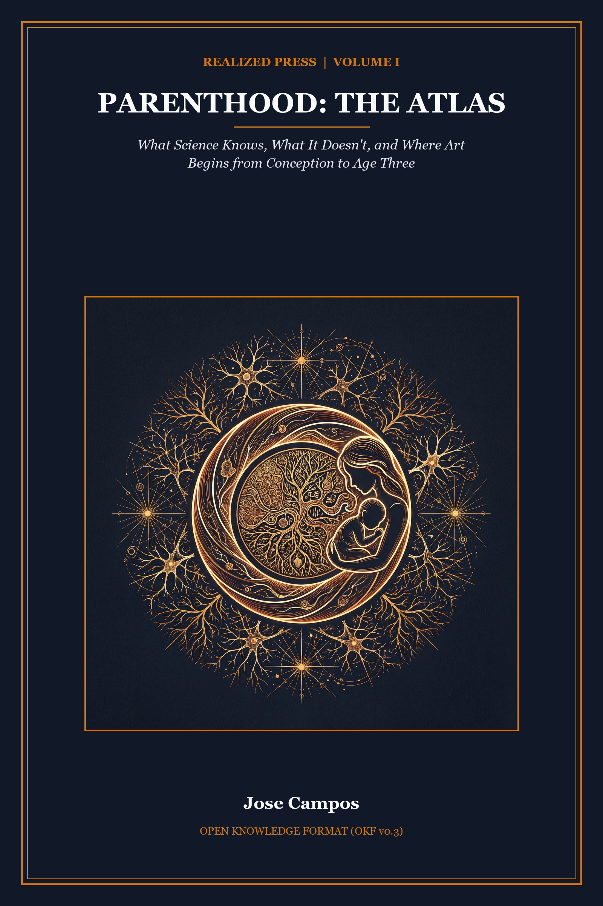

Realized Press · Reader Edition — Working Slice (2026-11-13)

A Quick-Finder for 2:00 AM Questions
Developmental science moves across three non-collapsible lenses: Science (what controlled empirical trials observe), Interpretation (how biological and social systems interact), and Art (what unhurried parental judgment demands in daily life). Most parenting debates turn into stressful arguments because people collapse those three categories together. A clinical study showing that a vitamin prevents a rare birth defect gets turned into an anxious demand that every choice must be maximized. A zero correlation in a preschool study gets turned into an excuse to ignore community poverty.
This atlas is designed to give you a solid, causally graded map of the first thousand days—from roughly one year before conception through age three. The main chapter prose is written in everyday plain English with concrete physical metaphors. All clinical terminology, enzyme names, statistical effect sizes, and evidence-certainty grades are preserved in the chapter-local notes.
If you are reading at two in the morning with an upset baby on your shoulder, you do not need a twenty-page academic lecture. Use this quick-finder to find your exact question, jump directly to the relevant chapter movement, and read the one-sentence bottom line.
Q: Did a stressful week at work hurt my baby?
Chapter 1 (Movement IV) — High-certainty evidence shows that the placenta acts as a chemical shield, disarming most active cortisol before it can ever reach fetal blood. Everyday stress is not a toxin.
Q: Why do I need folic acid before I even know I am pregnant?
Chapter 1 (Movement III) — The neural tube closes by the twenty-eighth day after conception, before most women miss a period. Taking 400 micrograms daily bridges a narrow biological window and prevents roughly 70 percent of neural tube defects.
Q: Do I need expensive "methylfolate" instead of folic acid if I have an MTHFR gene variant?
Chapter 1 (Movement III) — No. Every global trial proving neural tube defect reduction used standard folic acid, which is safely metabolized regardless of common genetic variants. Expensive methylfolate supplements are commercial marketing without clinical proof of defect prevention.
Q: How much does paternal age at conception matter for genetic mutations or autism risk?
Chapter 1 (Movement II) — Men over 45 pass along slightly more new spontaneous genetic mutations, yet the absolute risk of rare conditions or autism remains very low. The vast majority of children born to older fathers are completely healthy.
Q: Can babies hear voices and remember music inside the womb?
Chapter 2 (Movement I) — By the third trimester, a baby's hearing is fully functional. Newborns reliably recognize their mother's voice and native language melodies hours after delivery. Ordinary conversation is all the stimulation a fetus needs.
Q: Does a C-section affect the baby's microbiome or skin-to-skin bonding?
Chapter 3 (Movement II) — Parent-infant attachment is built through thousands of daily interactions across months, not a single golden hour, and cesarean-born babies form secure bonds at the exact same rates as vaginally delivered infants. Early microbiome differences narrow rapidly through skin-to-skin holding, everyday home touch, and feeding.
Q: Is newborn jaundice dangerous, and does my baby need a phototherapy lamp or "vaginal seeding" after a C-section?
Chapter 3 (Movement II) — Mild newborn jaundice is common and safely treated with hospital blue-light phototherapy lamps; never expose a newborn to direct sunlight. Unregulated vaginal seeding gauze swabbing carries real neonatal infection risks without proven health benefits.
Q: Does breastfeeding actually boost long-term IQ?
Chapter 3 (Movement III) — Large randomized trials and sibling comparisons show that breastfeeding provides real immune protection against infant gut infections, but long-term IQ differences between siblings fed breastmilk versus formula shrink to near zero.
Q: Does my baby really need surgery for a tongue-tie?
Chapter 3 (Movement III) — Clinical reviews show that surgical clipping for mild tongue-tie is heavily overdiagnosed. It rarely improves long-term feeding compared to skilled lactation support.
Q: When should we introduce peanut butter to prevent allergies?
Chapter 4 (Movement IV) — The landmark LEAP randomized trial proved that introducing smooth peanut foods between 4 and 11 months cuts peanut allergy risk by 80 percent by training the gut's immune tolerance early.
Q: Does baby-led weaning cause more choking than purees?
Chapter 4 (Movement IV) — Randomized trials show modified baby-led weaning carries the exact same choking rate as spoon-feeding, as long as hard, round foods like whole grapes and raw carrots are avoided.
Q: When is it safe to move our baby into their own room?
Chapter 4 (Movement IV) — Room-sharing is most protective against SIDS during the first 4 months when sleep arousal mechanisms are immature. After 6 months, moving a baby to their own quiet room does not increase risk and often improves sleep for everyone.
Q: Is white noise safe to use for baby sleep?
Chapter 4 (Movement IV) — White noise can help mask sudden household sounds, but machines placed inside the crib or run louder than 50 decibels can strain delicate infant hearing. Keep devices at least seven feet away on a low volume.
Q: Will the Ferber method or gentle sleep training damage my baby's attachment?
Chapter 4 (Movement II) — Multiple randomized trials show that graduated extinction (the Ferber method) and gentle sleep coaching help babies sleep longer without damaging parent-child attachment or elevating long-term stress hormones.
Q: What is happening during the 4-month sleep regression, and what should my baby eat at 6 months?
Chapter 4 (Movement II & IV) — Around 4 months, infant sleep permanently reorganizes into adult-like four-stage sleep cycles, requiring independent falling-asleep skills. At 6 months, maternal iron stores deplete, making iron-rich first foods (meat or fortified cereal) vital for brain development.
Q: Is my baby going through a calendar "mental leap" from the Wonder Weeks, or why did she suddenly become fussy this Tuesday?
Chapter 5 (Movement III) — Longitudinal replication trials reveal that infant fussiness and crying peaks do not synchronize to fixed calendar gestational weeks above random chance; fussy periods reflect individual biological rhythms, emerging skills, or fatigue rather than an app's pre-programmed calendar clock.
Q: Why does my baby drop spoons from the high chair on purpose?
Chapter 6 (Movement IV) — Dropping objects is not defiance; it is a baby's first physics laboratory. Babies drop spoons to test gravity, bounce trajectories, and see whether objects make different sounds on different surfaces.
Q: Does my baby's positional plagiocephaly (flat head) need a $3,000 shaping helmet?
Chapter 6 (Movement II) — A landmark randomized controlled trial on positional plagiocephaly showed that rigid cranial helmets produce zero added skull-rounding benefit over natural growth and floor play by age two. Once babies roll and sit upright, natural growth reshapes the head on its own.
Q: How many words should an 18-month-old speak, and how do we tell a late talker from early autism signs?
Chapter 7 (Movement II) — The median 18-month-old speaks about 50 words, but 10 to 20 words is common for a healthy late talker. As long as a toddler points to share interest, makes eye contact, and understands spoken directions, language is on track; missing pointing, joint attention, or eye contact warrants prompt evaluation.
Q: Does screen time cause speech delay?
Chapter 7 (Movement IV) — Passive television and video apps do not teach words to babies. Speech delays track not with screens themselves, but with the lost back-and-forth conversational turns that screens replace.
Q: Does speaking two languages at home confuse toddlers?
Chapter 7 (Movement V) — Raising children bilingually does not cause speech delays. Children learn multiple languages naturally when they hear rich, fluent conversation in each language.
Q: Does putting an infant in daycare raise stress or harm bonding?
Chapter 8 (Movement II) — Large national studies show that licensed childcare does not harm attachment security. What matters for early growth is daily classroom warmth and interaction quality, not whether care happens at home or in a center.
Q: Should we hire an in-home nanny or choose a licensed daycare center for our toddler?
Chapter 8 (Movement IV) — Decades of NICHD longitudinal tracking demonstrate that child cognitive and emotional thriving does not differ by care setting alone; steady caregiver warmth, responsive verbal engagement, and low teacher turnover matter far more than whether care occurs in a living room or a classroom.
Q: Why doesn't saying "calm down" work during a toddler tantrum?
Chapter 9 (Movement IV) — A tantrum begins with a high-energy anger peak that temporarily takes a toddler's language circuits offline. Talking during the peak adds noise; wait quietly until the anger crest drops into sadness before offering comfort.
Q: Why does my toddler hit even when she knows the rule?
Chapter 10 (Movement I & III) — Physical hitting peaks naturally between ages 2 and 3 because an angry child with strong hands lacks the words to negotiate. Understanding the words "no hit" happens long before the brain's physical impulse brakes are fully built.
Q: Is gentle parenting making my toddler more defiant?
Chapter 10 (Movement II) — Effective parenting pairs high emotional warmth with firm, consistent boundaries. Empathy belongs to the child's feelings, while decisions and safety belong to the adult; avoiding firm limits creates anxiety and behavioral dysregulation.
Q: How do we know when a toddler is truly ready for potty training?
Chapter 10 (Movement V) — Bladder capacity and spinal nerve signals mature between 22 and 30 months. Starting intensive training before readiness stretches the process to over a year, while waiting for readiness finishes training in a few calm months.
Q: Did the Stanford Marshmallow Test really prove preschool willpower determines life success?
Chapter 11 (Movement III) — Nationwide replications showed that the famous marshmallow test mostly measured family income, home stability, and adult reliability rather than innate willpower. Kids wait when adults keep their promises.
Q: Do expensive Montessori toy kits or weekly shelf rotations make toddlers smarter?
Chapter 12 (Movement III & IV) — Studies show that pretend play and simple household objects exercise the same mental muscles as expensive branded kits. Setting out four to six simple toys on an open shelf rotation prevents visual overload, while ordinary play with blocks, pots, and cardboard boxes builds imagination just as well.
Q: Why am I experiencing sudden surges of intense anger (postpartum rage), and how much does paid parental leave matter?
Chapter 13 (Movement II & III) — Severe sleep fragmentation and nervous system overload frequently trigger postpartum rage flares that standard depression screens miss; protected paid parental leave and household rest buffers directly reduce maternal stress and support infant regulatory health.
Q: Is my child's personality and intelligence locked in by age three?
Chapter 15 (Movement III) — Comprehensive longitudinal studies show that roughly ninety percent of where a three-year-old ranks relative to peers remains open to change. The first three years are a launchpad and waypoint, never a final verdict.
Fertility, Parental Age, Folate, and What Pregnancy Stress Actually Does
There is a moment when a child first becomes visible.
It may come in a dim exam room during the first ultrasound. A tiny white spark pulses on a dark screen, and a heartbeat is suddenly real in the room. Or it may arrive weeks later: a firm kick beneath a resting palm, a thermal paper printout curling at the edges, or a first sharp cry under the bright lights of the delivery ward. We treasure these milestones because they hand us a clean starting line. A date goes onto a chart. A family story can finally begin on the page.
Biology never waits for the camera. By the time a heartbeat flickers on a monitor, cells have already divided dozens of times in the dark. Thin sheets of tissue have curled into early organs, and the rough frame of a brain and heart is already standing in place. Between mother and fetus, the placenta is already trading oxygen and fuel across two separate bloodstreams. Meanwhile, the adults who will welcome this baby are shifting too—in their hormones, their brain wiring, and their daily habits at home. The child has not yet drawn a breath of air. Yet the work of building a human life is already in full swing.
That is the opening puzzle of this atlas, and beneath it sits a truth both simple and unsettling: a child's environment begins before conception. Eggs and sperm carry a living history across the years. Vitamins, workplace exposures, parental age, and the conditions of daily life do not wait politely in the hallway for a positive test strip. They are already inside the room long before anyone buys a crib.
Picture two future parents standing under the fluorescent hum of a pharmacy aisle at ten at night. One picks up a plain four-hundred-microgram folic acid tablet months before trying to conceive. She is acting on a narrow window when a simple vitamin helps seal the early spine shut. The other compares pricey "brain-boosting" packs while replaying a tense week at work. She fears that one bad deadline will etch a lasting flaw into her baby. Marketing treats both worries as equally urgent. Clinical trials show they live in different worlds. Sorting real embryonic risks from sales noise is our first task.
Most parenting books open the story on the drive home from the hospital, strapping a newborn into a car seat for the very first time. Human biology starts the clock much earlier, inside the cells and daily routines of the parents long before pregnancy begins.
Why do you need folic acid before you even know you are pregnant? Can everyday work stress or anxiety during pregnancy harm an unborn baby? How much does a parent's age at conception actually affect a baby's health? When prospective parents search for answers late at night, they almost always fall into one of two waiting traps.
If we start the clock too late and treat a newborn as a blank slate cast at birth, we miss brief biological windows that open and shut in the first weeks after conception. That is the myth that nothing counts until a baby shows up on a screen. Yet if we misread early biology, we slide into the opposite trap: fatalism. We begin to act as if a parent's age, lunch, or anxious Tuesday has already locked in a child's future mind or character. Between the myth of a blank slate and the prison of a fixed fate lies our core interpretive principle—the second lens of this atlas: continuity without fate. Growth starts early, yet it stays buffered, forgiving, and open to the care that follows.
Reading this map clearly takes a shared pact between writer and reader. Across this atlas, we will keep three distinct kinds of truth in view without tangling them: science, interpretation, and art. Science names what researchers can measure, test against control groups, and repeat. When strong trials or genetic designs back a finding, we say the evidence shows it. When converging studies point the same way, we say the evidence suggests it. And when a finding comes from broad surveys where family background blurs the picture, we say one thing is associated with another.
Interpretation is the craft of asking what those numbers mean in a real living room. A slight shift in average risk across ten thousand births is a real public health signal, yet it is never a crystal ball for a single child. Sound judgment always asks what a study cannot tell us before claiming what it does. Finally, art is the lived human craft of parenting that no trial can score: the warmth, humor, patience, and steady care you bring to a child in your own home.
When those three lenses blur together, a weak survey link gets preached like a moral law. Science then curdles into an exhausting guilt ledger that no tired mother or father can ever balance. Keeping science, interpretation, and art distinct lets us look straight at life before birth without fear and without blame.
That steady lens matters the moment we look at eggs and sperm. Germ cells are not frozen files sitting on a cold vault shelf waiting to be opened. They are living tissues kept alive across decades of adult life, breathing the same air and sharing the same years as the adults who carry them.
In men, the stem cells that make sperm divide again and again across adulthood, roughly every sixteen days from puberty onward. Each time a cell copies its DNA, there is a tiny chance of a copying slip along the strand. When Augustine Kong and his team sequenced the full DNA of Icelandic parents and children, later scaled up across 1,548 family trios, the data showed a clear biological clock.1 New gene typos climb steadily with a father's age, adding roughly 1.5 to 2 small DNA changes each year. Inside the cell, that clock ticks on schedule.
What does that cellular clock mean for an actual child? In Sweden's registry of over two and a half million births, researchers compared brothers and sisters born to the same father at different ages. Even inside the same family, having a father aged 45 or older rather than in his early twenties remained associated with higher relative odds of autism, attention difficulties, and psychosis.2 Yet population-genetic models suggest age-linked copying slips explain only around 10 to 20 percent of that risk gap. Inherited family traits that tend to delay first fatherhood carry much of the rest alongside biological aging.
Most of all, relative odds hide reassuring math. Baseline rates stay low, around 1 to 1.5 percent for autism. Even shifting to 2 to 3.5 percent past age 45 still leaves 96 to 98 percent—well over 95 percent—unaffected.
Parental age is not just a story about fathers, either. Unlike sperm stem cells that divide across adulthood, a woman's eggs pause inside the ovaries before she is born. Over decades, the cellular machinery that separates chromosomes grows more error-prone. That aging slowly lowers monthly fertility. It also raises uneven chromosome splits, pushing Down syndrome odds from about 1 in 1,250 births at age 25 to roughly 1 in 100 at age 40.3
Likewise, small health differences seen after single-baby IVF mostly follow parents' underlying fertility health rather than the lab procedure itself. Even so, biology never acts in a vacuum. Long-term UK cohort tracking reveals that children of mothers aged 35 to 39 shifted by the 2000s from slight score dips to small gains compared with earlier decades.4 Steadier incomes, schooling, and calmer homes offset biological age clocks for most families.
A similar fog surrounds a favorite buzzword of modern parenting media: epigenetics. Inside every cell, tiny chemical tags sit along the DNA strand and work like dimmer switches. They tell the cell which genes to read or silence without changing the code itself. Without those switches, a brain cell and a liver cell sharing the exact same DNA could never do different jobs. Better still, when eggs and sperm form—and again in the first days after conception—most of those chemical tags are wiped clean so the embryo can begin with a fresh slate.
In popular articles, however, "epigenetics" gets twisted into a ghost story of parental blame. Readers are warned that a hard autumn, a season of grief, or a tough job brands a future baby's genes for life. Lab studies in animals and human tissues suggest that chemical gene tags play a real role as early organs fold and grow. Yet in humans, claims that normal shifts in a parent's mood, meals, or daily stress etch lasting scripts into a child's DNA are associated with heavy family confounding and stay weak.5 Those cell switches evolved to help tissues do their jobs, not to keep a ledger of parental guilt.
Once an egg is fertilized, an embryo does not simply swell like a balloon filled with air. It builds itself step by step on a tight construction schedule. First, the single cell splits into a tiny cluster of new cells. Next, that cluster folds into distinct sheets that start shaping specific organs across the body. Only later, in the final months of pregnancy, does the fetus shift its energy mainly toward putting on weight and storing fat.6 Because each week runs its own plan, an exposure that arrives while an organ is first folding into place acts very differently from one that arrives months later.
Nowhere is that step-by-step craft clearer than in the fetal brain. Week by week, young nerve cells are born deep inside the brain, climb outward along thin guide fibers, and stack into the six layers of the outer cortex.7 This trellis-like climb shows striking order across species. Still, birth is never the finish line for the human brain. Delivery simply moves an unfinished, fast-wiring brain out of the dark womb and into a bright workshop of light, voices, and warm touch. Treating prenatal brain growth as an early IQ test confuses pouring the concrete floor of a house with the music that will be played inside it years from now.
To see why timing matters so sharply—and where its power stops—look at the landmark trial that changed modern pregnancy care: Nicholas Wald's 1991 Medical Research Council (MRC) Vitamin Study. For generations, doctors faced the heartbreak of neural tube defects such as spina bifida, where the early spine or skull fails to zip shut. Health maps showed that these defects struck far more often in poorer districts and after winter pregnancies. Yet researchers clashed over the cause. Was it broad poverty, family genes, or one missing nutrient in the first weeks of pregnancy?
For decades, medical textbook wisdom doubted that a cheap vitamin pill could stop a major spinal birth defect. When early surveys hinted that women who took daily vitamins had fewer affected babies, skeptics pointed out a huge flaw in the numbers. Women who bought vitamin bottles on their own also had richer meals, safer jobs, and higher family incomes.
To break the deadlock, Wald and his team ran a strict double-blind trial across thirty-three clinics in seven countries. They enrolled 1,817 women who had already had an affected pregnancy and assigned them at random to take 4 milligrams of daily folic acid, other vitamins, both, or none at all. By 1991, the protective gap was so clear that monitors stopped the trial early: repeat defects fell by 72 percent, dropping from 3.5 percent to 1.0 percent.8
For first-time pregnancies in the general public, however, proof rests on smaller daily doses. A Hungarian trial testing a multivitamin with 800 micrograms of folic acid found zero defects among 2,104 births versus six among 2,052 controls. Later, a China–U.S. study of nearly 250,000 pregnancies tested 400 micrograms of plain folic acid alone. That low dose cut first-time defects by 79 percent in northern China and 41 percent in southern China. Across five pooled trials, Cochrane reviewers show with high certainty that periconceptional folic acid stops roughly 70 percent of these defects.8
Once nations began adding folic acid to bread flour, however, wellness brands stretched the science far past its true borders. Supplement makers rolled out pricey prenatal packs promising to build sharper, calmer babies in the womb. Soon after, online ads began stoking fear over common gene variants. They warned mothers that their bodies could not use plain folic acid and urged them to buy costly "methylfolate" pills instead.
The clinical trials tell a far steadier story. Every major trial and national flour program that cut spinal defects used plain, cheap folic acid from the pharmacy shelf. Lab studies confirm that women with common gene variants still turn plain folic acid into active cell fuel without trouble. Leading medical boards reaffirm that 400 micrograms of everyday folic acid protects every mother regardless of her genes.9 Only defined high-risk pregnancies—prior spinal defects, seizure drugs such as valproate, pre-existing diabetes, or severe gut absorption illness—need the medical 4-to-5-milligram prescription dose.
Follow-up work also drew a crisp line around why Wald's breakthrough worked so well. The human neural tube zips shut between day twenty-one and day twenty-eight after conception—the first month, often before a test strip turns positive.10 Folic acid brings the mortar cells need during that narrow seven-day zip-up window. Extra vitamin doses beyond folate lack that proven power and do not boost school IQ.11 Chapter 2 maps the real chemical hazards that do harm folding organs—such as heavy alcohol, tobacco smoke, uncontrolled diabetes, isotretinoin, and valproate—in contrast to daily worry. Chapter 14 then follows our core persistence rule: which early shifts endure at age three and which fade inside postnatal life.
The lesson of folic acid cuts both ways for expectant parents. A narrow biological window can be real, swift, and preventable with a tiny daily pill. Yet supplying a missing brick prevents a physical birth defect; it does not design a superior mind.
If folic acid reveals where a targeted action works on schedule, the science on pregnancy stress reveals where everyday worry outruns the facts.
In popular lore, the link between a pregnant mother's stress and her baby's future is pictured as a wide-open pipe. A tense week at work raises maternal cortisol in the blood. That stress hormone supposedly floods straight into the womb, rewires the fetal brain, and leaves the child anxious for life. When scientists test that pipe step by step, however, they uncover two strong defenses: a border guard in the placenta and the hidden mirror of shared family genes.
First, maternal blood and fetal blood never mix freely. Between mother and fetus stands the placenta—an active metabolic checkpoint rather than a loose screen door or a solid wall. High-certainty physiological studies show that its outer layer carries an enzyme converting roughly 80 to 90 percent of maternal cortisol into inactive cortisone.12 That gate is a high-capacity buffer, not a 100 percent seal: severe chronic stress, inflammation, or severe pregnancy blood pressure can turn its output down. Yet a tense Tuesday at the office barely registers at the gate. The placenta is built to absorb the normal weather of a working life.
Second, what explains surveys linking pregnancy anxiety to slightly more anxious children years later? Simple surveys cannot separate womb hormones from shared family genes or life stress after birth. To untangle those threads, scientists turn to natural family experiments. In the Cardiff donor-egg IVF study of 779 pregnancies, prenatal stress predicted lower birthweight and earlier birth even in genetically unrelated pairs—confirming real womb effects on fetal physical growth. Yet child anxiety faded to null in unrelated pairs once a mother's current mood was counted.
Norwegian sibling studies tell the same story. Across 10,990 sibling pairs tracked by Bekkhus and over 35,000 children studied by Hannigan, within-family controls shrink behavioral links by over half to near zero.13 What looked like womb hormone damage in simple surveys mainly reflected shared inherited traits and the strain of raising a child while still distressed after birth.
Knowing what this research does not say lifts a huge weight. A hard month of grief, broken sleep, or work deadlines during pregnancy is not a sentence passed on your unborn child. At the same time, the human art of care gives us a far better reason to back overwhelmed parents right now. We care for a stressed pregnant woman not because she is a fragile vessel whose mood might dent a future test score, but because her dignity and rest matter today.
As an embryo folds and grows, the adult body quietly rewires beside it. Early development never unfolds as a solo act. Mother, father, and child open this shared duet together.
Across pregnancy and early care, parents' brains also tune for infant signals. Longitudinal MRI scans tracking twenty-five first-time mothers indicate coordinated pruning and sharpening of gray matter in circuits that read faces, cues, and emotion.14 Headlines often mock this change as "mommy brain" or fog. In truth, it resembles teen cortical tuning: clearing excess noise so caregivers can track a newborn's cries and gaze.
Nor is this brain tuning restricted to pregnancy. Brain scans of eighty-nine parents are associated with caregiving shifts in fathers' empathy and reward networks.15 More hands-on hours caring for a baby track stronger coupling across those circuits. Caregiving grows through daily practice, not an automatic switch flipped at birth.
Of course, no parent adapts in a vacuum. A broad meta-analysis shows a small average dip in couple satisfaction after birth (d = -0.19), while an eight-year study finds sharper drops where lost sleep, money stress, and unequal housework pile up.16 Many couples hold steady or grow closer once daily load is shared. Widening the lens still further, World Health Organization reviews suggest healthy starts rely on public foundations—clean air, safe food, paid leave, and clinics—threads traced in full in Chapter 13.17
Taken together, three plain truths hold in proportion. Across whole regions, low-cost folic acid prevents severe spinal defects. At home, the placenta strips most daily stress hormones while shared genes explain much of what older polls blamed on pregnancy worry. Practical care stays targeted: start plain folic acid early, treat medical illness or high blood pressure promptly, and guard rest and shared support. In Chapter 2, we step inside the womb to see which real harms cross the border—and how the fetus learns before birth.
For now, step back into the dim exam room and look once more at the ultrasound monitor.
The small white spark has not changed. It beats at the same quick, steady tempo. What has changed is how we read it. That pulse is neither the sudden creation of a life out of nothing when a probe finds it, nor the ticking of a rigid clock whose fate is already sealed. It is an early milepost on a long, open road—guarded at the border by biology, built for repair, and waiting for the imperfect, devoted adults who are already changing to meet it.
The child is not yet born. The duet is already underway.
Kong et al. (2012, Nature, 78 Icelandic trios) and Jónsson et al. (2017, Nature, 1,548 trios; 108,778 de novo mutations) show that de novo point mutations increase linearly with father’s age at conception (~1.51–2.0 additional mutations per year of continuous spermatogonial stem-cell replication, vs ~0.37/yr maternal). as a molecular mutational relationship observation. ↩
Within-family sibling fixed-effects hazard ratios in *D'Onofrio et al. (2014, JAMA Psychiatry, N = 2,615,081 Swedish births) did not attenuate for fathers ≥ 45 vs 20–24 (autism sibling HR = 3.45 [95% CI 1.62–7.33], ADHD HR = 13.13, psychosis HR = 2.07); paternal age yields high individual absolute risk (with ~1–1.5% population autism baseline shifting modestly to ~2–3.5%, leaving ~96–98% / >95% unaffected). Population-genetic modeling (Gratten et al., 2016, Nature Genetics; Janecka et al., 2017) indicates de novo coding mutations explain only ~10% (unlikely >10–20%) of excess risk alongside inherited polygenic liability correlated with delayed first fatherhood (Petersen et al., 2011, Am J Psychiatry***). ↩
*Hassold & Hunt (2001, Nature Reviews Genetics): maternal oocytes arrest in meiosis I prior to birth; age-linked meiotic aneuploidy raises clinically recognized pregnancy trisomy from ~2% under age 25 to ~35% over age 40. Morris, Mutton & Alberman (2002, J Med Screen)* & ACOG livebirth trisomy 21 estimates shift from ~1 in 1,250 at age 25 to ~1 in 85–100 at age 40. age–aneuploidy slope; single-birth IVF procedures carry large independent developmental harm once underlying parental subfertility is controlled. ↩
*Goisis, Schneider & Myrskylä (2017, Int J Epidemiol, UK 1958, 1970 & 2000–2002 cohorts), Barclay & Myrskylä (2016, Popul Dev Rev), and Myrskylä, Barclay & Goisis (2017)*: cognitive associations for mothers aged 35–39 reversed from slight negative (-0.06/-0.12 SD) to +0.16 SD in the 2000s once parental education and household resources are accounted for. cohort-dependent demographic offsetting. ↩
Epigenetic regulation (DNA methylation, histone modification, and reprogramming during gametogenesis and early embryogenesis) is a real class of biological process; ordinary parental behavior, diet, or mood writes a lasting developmental sentence through germline methylation in humans; as a license to treat parents as authors of a child’s future methylation profile. ↩
Pregnancy is not a single uniform nine-month window; process-specific developmental timing across preimplantation cleavage, gastrulation, and organogenesis as a teratologic principle (Wilson’s principles as reviewed in Ujházy et al. 2012). ↩
The histological sequence of neural progenitor proliferation, radial glial migration, and six-layered cortical assembly; treating unfinished prenatal cortex as a forecast of intelligence or personality. ↩
Periconceptional folic acid preventing neural tube defects during the narrow morphogenetic closure bottleneck (days 21–28 post-fertilization / week 4); other anomalies and for later cognition. Primary separation: (a) Recurrence — MRC Vitamin Study / Wald et al. (1991, Lancet, N = 1,817 randomized, $1,195completed pregnancies): 4 mg/day folic acid reduced recurrence by 72% (RR 0.28, 95% CI 0.12–0.71; 3.5% to 1.0%, ARR 2.5 percentage points); (b) General-population first occurrence — Czeizel & Dudás (1992, NEJM,N = 4,156known outcomes): multivitamin containing 800 mcg folic acid (0/2,104 vs 6/2,052, P = 0.029); Berry et al. (1999, NEJM,N = 247,831pregnancies): 400 mcg/day folic acid alone cut first-occurrence NTDs by 79% in high-baseline northern China (__CURRENCY₄.8__ → 1.0 per 1,000; 85% with >80\% compliance) and 41% in southern China ($1.0 \to 0.6$ per 1,000). De-Regil et al. (2015, Cochrane CD007950) Summary of Findings reports RR 0.31 (95% CI 0.17–0.58; listed as 6,708 across 5 RCTs), combining four recurrence trials (RR 0.34, 0.18–0.64, n = 1,846) with first-occurrence data from the Hungarian series (Czeizel 1994, n = 5,358 randomized). Defined high-risk clinical exceptions requiring 4–5 mg/day include prior NTD pregnancy, valproate/carbamazepine therapy, pre-gestational diabetes, or malabsorption. ↩
Standard folic acid prevents neural tube defects across all maternal genotypes; common methylenetetrahydrofolate reductase (MTHFR) polymorphisms warrant avoiding folic acid or purchasing specialized L-methylfolate (5-MTHF). The American College of Obstetricians and Gynecologists (ACOG) and the Centers for Disease Control and Prevention (CDC) advise against MTHFR screening, noting that population-level protection was achieved entirely with standard synthetic folic acid. ↩
Embryonic morphogenesis events (such as neural tube closure between days 21 and 28 post-fertilization, inside the first month) have clocks that do not wait for a positive pregnancy test; every preconception habit therefore has a comparable, clocked effect on later intelligence or temperament. True chemical/metabolic teratogens (alcohol, smoking, uncontrolled diabetes, isotretinoin, valproate) are mapped in Chapter 2, and long-term persistence at age three in Chapter 14. ↩
Other preconception nutrients do not inherit folate’s High/stable NTD identification. beyond folate as a class; as a later-IQ checklist. (Dean 2014). ↩
The outer placental syncytiotrophoblast expresses 11β-hydroxysteroid dehydrogenase type 2 (11β-HSD2), an enzymatic gate converting ~80–90% of active maternal cortisol into inactive cortisone (Benediktsson et al., 1997; Seckl & Holmes, 2007; *Chapman, Holmes & Seckl, 2013, Physiological Reviews). O'Donnell et al. (2012, Psychoneuroendocrinology, N = 56) showed maternal trait anxiety negatively correlates with placental 11β-HSD2 mRNA expression (r = −0.40, p* < 0.01), alongside preeclampsia and inflammatory down-regulation. the enzymatic oxidation mechanism; human stress-threshold and preeclampsia down-regulation; placental biomarkers forecast childhood mind or personality. ↩
Overall: *Rice et al. (2010, Psychol Med, Cardiff IVF Cohort N = 779, 574 related / 205 unrelated) & Rice et al. (2009, PNAS) confirm intrauterine somatic effects on birthweight/gestation across unrelated pregnancies (especially smoking), whereas prenatal stress associations with child anxiety dropped out in unrelated pairs after adjusting for current maternal anxiety/depression. Sibling designs (Bekkhus et al., 2018, Int J Epidemiol, MoBa $10,990sibling pairs: OR 1.38/2.72 attenuating >50% to 1.01/1.07) and children-of-twins models (Hannigan et al., 2018, Lancet Psychiatry,N = 35,299$ children*: 41% internalizing / 37% externalizing shared genetic variance plus concurrent postnatal depression) show >50% attenuation for child behavioral distress. ↩
*Hoekzema et al. (2017, Nature Neuroscience, N = 25 first-time mothers vs controls)*: that maternal cortical gray-matter structural pruning across pregnancy is a real observational MRI finding; it represents injury, IQ loss, or maternal depletion. ↩
*Abraham et al. (2014, PNAS, N = 89 parents; amygdala–STS connectivity correlating with childcare time r = 0.330, p = 0.005)*: for first-time father brain-network changes associated with hands-on caregiving hours. ↩
*Twenge, Campbell & Foster (2003, J Marriage Fam) report an overall meta-analytic satisfaction gap of d = −0.19 between parents and nonparents; Doss et al. (2009, J Pers Soc Psychol, N = 218 couples over 8 years) observed post-birth declines (d = −0.71 mothers; d* = −0.45 fathers) strongly moderated by sleep loss, financial strain, and domestic division of labor. heterogeneous couple trajectories; a uniform decline caused by parenthood. ↩
WHO preconception and Nurturing Care frameworks (*Britto et al., 2017, Lancet***; who-anc-2016, who-nurturing-care-2018) widen the unit of analysis to ecological support (handed off in full to Chapter 13); a broad preconception checklist, taken as a whole, enhances child IQ. ↩
Inside the Womb: Fetal Brain Growth, Nutrition, Alcohol, and Everyday Exposures
During the final weeks of pregnancy, a mother sits in a quiet chair every evening and reads the same children's story out loud. Less than three days after birth, her newborn lies in a hospital bassinet. Tiny foam headphones rest over the baby's ears, and a sensor is wired to the pacifier. By sucking faster or slower, the two-day-old baby can choose which voice recording plays. Within minutes, the newborn settles into the exact sucking rhythm needed to bring back that familiar story instead of a new one.
At home, the scene looks completely ordinary. Biologically, it is remarkable.
If the womb were a soundproof vault that sealed the baby off until birth, a newborn would have no way to favor one story over another. On the other hand, if the fetus were a tiny scholar memorizing words in the dark, that preference would prove that classroom learning starts before birth. Neither story holds up when tested. Experimental evidence suggests that hearing speech late in pregnancy shapes which vocal rhythms a newborn prefers. At the same time, low-certainty claims that womb tapes boost intelligence are associated with zero lasting cognitive gains or word comprehension.1
That boundary sets the central question of this chapter. In Chapter 1, we saw that development starts before pregnancy and never follows a rigid script. Now we step inside the womb itself. Our question is much sharper than "does a fetus learn?" We want to know how pregnancy works as a physical system. How do sounds, nutrients, and chemicals cross its borders? And what kinds of promises can that first environment honestly support?
To understand why a newborn turns toward a familiar story, we have to drop two popular myths about pregnancy. The first myth is the open pipeline. It claims that everything a pregnant mother eats, breathes, hears, or feels pours straight into the baby unchanged. The second myth is the sealed vault. It claims that nothing important happens to behavior or the senses until the cord is cut.
What fetal biology shows instead is a step-by-step filter. Outside events act first on the mother's body, which then meets the selective filter of the placenta and the thick wall of the uterus. The fetus receives a changed, softened signal. Finally, the growing body responds based on which tissues are being built that week. Written as a chain of cause and effect, the path is never simply world → baby:
Outside World → Mother's Body → Placental Filter → Fetal Dose → Timed Stage → Outcome
At every arrow in that chain, tissues buffer, break down, or block the incoming signal. What a mother meets in her day never pours straight into the fetus as a raw dose. A brief jump in fetal heart rate never marks a brain injury, and an early spot on an ultrasound never locks in a childhood personality. Nor does a statistical trend across ten thousand pregnancies hand you a private fortune cookie for the baby in your arms.
In 1986, Anthony DeCasper and Melanie Spence led the landmark experiment that mapped the sensory side of this passage at the University of North Carolina at Greensboro. For generations, doctors assumed that newborns entered the world with blank senses because fluid filled the middle ear before birth. DeCasper and Spence noticed that stomach tissues and fluid carry low-pitched vibrations well, so they suspected the melody of a mother's voice reached the inner ear late in pregnancy. To test this without coaching after birth, they recruited sixteen pregnant women during their final six weeks. Each woman read a rhythmic story—such as Dr. Seuss's The Cat in the Hat—out loud twice a day until the babies had heard three and a half hours of the tale.
Fifty-six hours after birth, each newborn entered a quiet lab room with a wired pacifier. Sucking in one burst pattern turned on the familiar story, while a different rhythm played a new story. Across the group, newborns shifted their sucking pace to hear the story from the womb, even when a stranger read it. Within a few years, however, toy companies twisted this careful experiment into a booming market of "womb universities" selling belly speakers and prenatal flashcards.
Later brain-wave studies—including work by Eino Partanen and colleagues in 2013—pinned down both the real biology and its strict limit. In the third trimester, hearing pathways tune themselves to the pitches and vowel lengths that pass through the belly wall, yet this tuning builds sound familiarity, not word learning.1 Flesh and fluid muffle crisp consonant sounds, so only the slow musical beat of speech gets through. After birth, the same parent keeps talking in that voice and anchors the bond in open air.
Modern science therefore strips away the sales pitch while keeping the wonder. Prenatal hearing did not evolve to give babies a head start on college entrance exams. It evolved to help a newborn recognize and turn toward the adults who will feed and protect them after birth.
While muscle and fluid act as a sound filter for the ears, the placenta acts as the master chemical gatekeeper of pregnancy.
Because the placenta is discarded after birth, popular parenting books barely mention it. During pregnancy, however, this single organ does the work of five adult systems at once. It trades oxygen for carbon dioxide like lungs, pulls in fuel like a gut, makes hormones like a gland, and clears waste like kidneys. Calling it a "placental barrier" misses half the story, because a brick wall only blocks things while the placenta actively chooses and pumps what crosses.
Oxygen slips across along blood pressure gradients, while blood sugar rides carrier proteins. Minerals like iron and calcium are pumped across even when the mother's own reserves run low. Late in pregnancy, the placenta also pulls across maternal antibodies so the newborn starts life with borrowed protection against infection.
Because every transfer uses pumps, blood flow, and gate enzymes, saying "the mother was exposed" never tells the whole story. As James Wilson showed in the founding rules of birth-defect science—and Eduard Ujházy and colleagues confirmed in modern reviews—outcomes depend on exact timing, chemical pathway, placental crossing, and actual dose.2 The drug thalidomide in the late 1950s proved this rule with heartbreaking clarity. A sleeping pill that caused almost no side effects in adults caused severe limb defects when taken between days twenty and thirty-six after conception.
That narrow sixteen-day window was the exact moment when embryonic arm and leg buds were forming blood vessels. Most everyday exposures look nothing like thalidomide. Still, the core rule holds across all of prenatal science: biological clocks belong to specific cell-building stages, not to pregnancy as one flat nine-month block.
Consider how the placenta handles daily stress versus severe illness. Building on the shield we met in Chapter 1, studies by Jonathan Seckl, Megan Holmes, and Kieran O'Donnell show that this barrier enzyme disarms roughly 80 to 90 percent of incoming active cortisol.3 In lab mice bred without that gene — or in rare human illnesses — unbuffered stress hormones slow growth and lower birthweight. Severe chronic depression, inflammation, or pregnancy blood-pressure disorders can dial down this enzymatic gate, so it is a high-capacity buffer rather than a 100 percent seal. Even so, a healthy placenta keeps a stressed Tuesday from registering as a major chemical shock to the baby.
Fetal heart and blood vessel plumbing follows this same rule of temporary, stage-specific design. Because oxygen arrives through the cord rather than the lungs, fetal blood flow uses three temporary shortcuts. One skips the liver and two skip the fluid-filled lungs, steering the richest oxygen straight to the growing heart and brain. Those three shortcuts are marvels of plumbing that close up in the hours and days after birth, as we will see in Chapter 3. Nothing in that temporary blood routing writes a child's future character; it simply keeps a human body alive underwater.
Behind the placental shield, the fetal brain builds itself in overlapping layers. As Irina Bystron, Colin Blakemore, and Pasko Rakic showed in their landmark brain-tissue studies, prenatal brain growth is far richer than a simple expanding tube.4 Beneath the outer bark of the brain, the human fetus builds a thick temporary waiting zone. Incoming nerve fibers from deeper brain centers pause in this zone, form test circuits, and set up body maps. Later in the third trimester and early infancy, those nerve fibers move into their six-layered home as the waiting zone dissolves.
This building sequence shows with high certainty that a newborn's brain is neither a blank slate nor a finished statue. When severe medical crises strike — such as placenta failure or a major viral infection in the womb — they can disrupt how cells travel and wire up. Those serious illnesses need real medical care. Yet in an ordinary pregnancy, the fact that nerve cells are branching and linking gives zero license to treat an ultrasound scan as a forecast of adult IQ.4 Mixing up cell layering, brain wiring, school skills, and emotional health into one vague "brain growth" claim confuses the steel beams of a building with the talks people will have inside it thirty years later.
As these nerve pathways connect during the second half of pregnancy, the fetus begins guiding its own body in the present tense. Janet DiPietro and her team tracked hundreds of mothers and babies across pregnancy using heart and motion monitors. As weeks pass, the baby's resting heart rate slowly drops while natural heart-rate swings rise. Whenever the fetus kicks or rolls, the heart speeds up in tight sync around week thirty.5
These patterns suggest a steady measure of how the baby's nervous system matures right now, helping doctors watch over babies whose growth has slowed inside the womb. They never hand us a crystal ball for childhood nature. Low-certainty attempts to predict whether a child will grow shy or bold from seven-month kicks fail because the nervous system rewires after birth.5 A quiet baby on a Tuesday afternoon need never become a shy seven-year-old. Fetal heartbeats track how the baby fares today, not who the adult will become.
Building this brain and body takes specific raw materials delivered on time. In Chapter 1, we saw how folic acid before and early in pregnancy supplies the blocks needed to close the neural tube in week four. High-dose 4 mg pills prevented 72 percent of repeat defects in affected families, while 400 µg daily prevented 41 to 79 percent of first-time defects across Chinese cohorts.6 Pooled across mixed trials, the evidence shows more than two-thirds protection (RR 0.31), though taking extra does not raise IQ.6 A second food clock runs during the late first and second trimesters: iodine and maternal thyroid hormone. As Gabriella Morreale de Escobar and Michael Zimmermann showed across clinical studies, the fetus cannot make enough of its own thyroid hormone until roughly halfway through pregnancy.7
During the first twenty weeks, moving brain cells into their proper layers depends completely on thyroid hormone crossing from the mother. Because the mother needs iodine in her food to make that hormone, severe iodine shortage early in pregnancy shows a high-certainty causal link to lasting brain harm that late pills cannot undo. Where iodized salt and normal diets already supply enough iodine, small day-to-day diet differences are associated with almost zero effect. Taking high-dose thyroid or iodine pills above normal needs will not build a smarter baby.7 Nutrients stop specific shortages; they are lumber and nails, not personality blueprints.
When we turn from helpful foods to harmful exposures, our job is to separate real chemical hazards from statistical mirages.
Look again at how calm data test loud fears about worry in pregnancy. Broad surveys link prenatal stress to lower birth weight or later mood troubles. In Frances Rice's Cardiff donor-egg study, stress during pregnancy still cut birth weight when mother and baby shared no DNA, proving a physical growth shift. Yet child worry dropped out once teams weighed family mood after birth, and Norwegian sibling data by Mari Bekkhus and Laurie Hannigan saw conduct links drop by over half.8 Severe trauma and deep want demand swift care. Meanwhile, the placenta shields daily stress, and an anxious mother needs help in her own right.
True chemical hazards act very differently when scientists test them, doing more harm at higher doses even after accounting for family background. Heavy or binge drinking during pregnancy shows a high-certainty causal role in Fetal Alcohol Spectrum Disorders (FASD). Set out by H. Eugene Hoyme and colleagues, this diagnosis covers slowed body growth, distinct facial features, and lasting harm to brain structure and self-control.9
Alcohol crosses the placenta freely and meets no protective enzyme wall at the border, disrupting how cells stick together, travel, and burn fuel while organs form. Even here, honesty requires care. FASD is a clinical diagnosis based on heavy drinking and clear physical or brain signs. It is never a casual label to pin on a restless eight-year-old whose mother had half a glass of wine before her test turned positive.9
Smoking during pregnancy shows a second clear dose pattern. In Michael Kramer's landmark review of birthweight studies and later sibling tests, active smoking suggests a direct drop in birthweight alongside a higher risk of early birth.10 Carbon monoxide in smoke binds to fetal blood and starves tissues of oxygen, while nicotine squeezes placental blood vessels narrower. Helping a parent quit smoking is one of the best steps in prenatal care, and quitting mid-pregnancy restores normal weight gain within weeks. By contrast, claims that prenatal smoke locks in a child's school grades or IQ fail once researchers compare siblings raised in the same home.10
What about the trace plastics, scents, and air smoke found in modern homes? Tracking studies—such as the French SEPAGES cohort led by Claire Philippat—measured breakdown bits of plastics like phthalates and bisphenols in urine across pregnancy. Certain mixtures are associated with small shifts in placental weight or hormone levels.11 Across whole cities, these findings give lawmakers strong reasons to tighten factory rules. At home, however, low-certainty links from tiny exposures do not prove lasting harm to your baby or require tossing out every plastic bowl.11 Shared risks call for public safety laws, not private guilt.
As the due date approaches, all of these biological streams — placental pumping, nutrition, blood flow, and genetics — come together in the number parents hear most often at checkups: estimated weight percentile.
For decades, doctors judged fetal size against local hospital charts. Those charts quietly baked local poverty, poor food, and smoking rates into the meaning of "normal." To see how babies grow when mothers have good food, clean water, and solid care, Aris Papageorghiou and the INTERGROWTH-21st team tracked healthy pregnancies across eight countries. When health barriers are removed, fetal bone length and head growth follow nearly identical curves around the world.12 These global charts suggest a reliable tool for spotting real growth slowdowns from a failing placenta so doctors can step in safely before birth.
Still, a growth chart is a safety gauge for the delivery team, not a report card on the child's future. Outside of severe medical growth restriction, being at the twentieth percentile or the eightieth percentile mostly reflects family height, normal genetic variety, and small errors in due-date math. High-certainty long-term studies show that birthweight within the healthy range does not dictate a child's intelligence, kindness, or success in school.12 Small newborns routinely catch up over the first year, and big newborns settle onto their own family curves.
Here, at the edge of birth, our three lenses lock together. The science of the first environment maps timed cell-building stages, active placental filtering, temporary brain scaffolding, present-day heartbeat control, and real dose limits for nutrition, alcohol, and smoke. The interpretation of that science refuses to turn an ultrasound measurement or a stressful month into a lifelong sentence, matching our claims strictly to what hard tests can prove. And the art of living through pregnancy lies in rescuing everyday life from the pressure to optimize every breath. Reading a poem out loud at night, eating a good meal, resting swollen feet, and leaning on family or friends are good ways to live with a baby who is almost here. They are part of a relationship, not an exam.
What this chapter does not explain is how the baby's body rewires its heart and lungs in the seconds after the cord is cut. That dramatic physical crossing belongs to Chapter 3. Nor does it explain how human arms, milk, and bedtime routines take over the job of keeping a baby calm and warm across the first year, which we will explore in Chapter 4. Life in the womb builds the stage for birth, but it never writes the play.
Look back one more time at the two-day-old newborn in the hospital bassinet, sucking on a wired pacifier to hear the story her mother read before she was born.
The baby has not changed because we have traced how the placenta and the fetal brain work. Our way of seeing her has changed. She has come into the room neither from a soundproof vault nor from a prenatal university, but from a sheltered, step-by-step biological passage. Her brain is still moving nerve fibers from its temporary waiting zone into permanent layers. Her heart is adjusting to air. And her ears are already tuned to the voices of the people who waited for her.
Birth has changed her surroundings completely. It has not started her from zero. Now someone in the room has to lift her up, keep her warm, feed her, and answer her cries. That next environment is not a grade on the pregnancy that came before. It is the start of a life lived together in the open air.
Late-pregnancy speech exposure shapes newborn acoustic and prosodic preference via third-trimester perceptual tuning; this represents lasting cognitive advantage or semantic learning. DeCasper & Spence (1986) tested non-nutritive baseline inter-burst sucking pauses and operant control over an audio player; Partanen et al. (2013) measured mismatch event-related potentials (ERPs). ↩
Pregnancy is not a single nine-month window; process-specific morphogenetic and organogenesis timing as a foundational teratologic principle (Wilson's principles of teratology as reviewed in Ujházy et al. 2012). ↩
Placental enzymatic physiology, with syncytiotrophoblast 11β-HSD2 oxidizing ~80–90% of active maternal cortisol into inert cortisone; human stress-threshold attenuation given down-regulation under severe chronic stress, inflammation, or preeclampsia (Benediktsson et al. 1997; Seckl & Holmes 2007; O'Donnell et al. 2012; Chapman et al. 2013; Burton & Fowden 2015); a placental biomarker forecasts later child psychological development. ↩
Structural neural sequence, including radial migration, transient subplate scaffolding, cortical plate layering, and synaptogenesis; treating anatomical progress as a forecast of intelligence or personality. Bystron, Blakemore & Rakic (2008). ↩
Present autonomic and vagal measures (fetal heart rate variability and somatic-cardiac coupling); individual forecasts of temperament or character. DiPietro et al. (2015); Pollatou et al. (2024). ↩
Neural tube defect prevention during the fourth-week morphogenetic bottleneck (pooled Cochrane RR 0.31, 95% CI 0.17–0.58 across 4 recurrence trials [RR 0.34] and 1 first-occurrence trial; De-Regil et al. 2015; Wald et al. 1991 4 mg recurrence RR 0.28; Czeizel & Dudás 1992 800 µg first occurrence; Berry et al. 1999 400 µg first occurrence 79%/41% reductions); other anomalies and later IQ. ↩
Severe maternal iodine deficiency disrupting transplacental thyroxine (T₄) supply and local cerebral triiodothyronine (T₃) conversion during early neurodevelopment; mild deficiency in replete populations causes injury, or that supplemental iodine enhances cognition. Zimmermann et al. (2008); Morreale de Escobar et al. (2004). ↩
Intrauterine birthweight/gestational effects in genetically unrelated Cardiff donor-egg IVF pairs ( for child anxiety/behavior, which dropped out in unrelated pairs and attenuated by >50% to near-null in Norwegian sibling cohorts; Rice et al. 2010; Bekkhus et al. 2018; Hannigan et al. 2018). ↩
Heavy/binge ethanol exposure acting as a teratogen during organogenesis and brain growth to causally produce the FASD clinical continuum; any low-level detected exposure equates to clinical diagnosis. Hoyme et al. (2016). ↩
Maternal smoking causally reducing birthweight (via carbon monoxide and nicotine vasoconstriction) and increasing preterm risk; unestablished for long-term cognitive outcomes in sibling designs. Kramer (1987). ↩
Phthalate and bisphenol metabolite associations with placental biomarkers; typical consumer-level detection causing permanent developmental harm. Philippat et al. (2024). ↩
Prescriptive international fetal-size standards (INTERGROWTH-21st; Papageorghiou et al. 2014); prenatal size does not predetermine lifelong cognitive or character outcomes. ↩
Birth, C-Sections, Skin-to-Skin, Crying, and Early Feeding
A baby is born. Everyone in the delivery room treats the hour as a brand-new beginning.
Before this moment there was pregnancy: hidden growth, an umbilical lifeline, and a muffled underwater world. After it there is a child in the open air who gasps, cries, shivers, and roots for milk. Someone lifts the newborn into warm hands. In the legal and emotional calendar of a family, the dividing line is total. In the calendar of human biology, birth is a comma in the middle of a sentence.
The newborn who comes into the light already has a four-chambered beating heart and an active nervous system. The lungs have already branched like trees, even though they have never breathed air. The ears are already tuned to the melody of human voices. Birth does not create this child from scratch. It changes the world that keeps the child alive.
Within seconds of leaving the placenta, breathing must move from the umbilical cord to the lungs. At the exact same moment, the entire heart and blood-vessel loop must reroute itself around that new reality.1 Every baby has to make this switch to survive. Yet the exact hour when internal heart valves seal shut varies across healthy newborns. And a bumpy first hour in the delivery room offers zero forecast of a child's future character.
In Chapter 2, we traced how the womb buffers and supports the growing fetus. Now we face a sudden turn. We do not ask which birth plan builds the smartest adult. We ask what kind of physical crossing birth actually is: what happens when the placenta is traded for air, gravity, bright light, milk, and human arms — and what promises can that first hour honestly support?
Because birth is dramatic and timed down to the minute, popular culture pulls it toward one of two extremes. The first treats birth as the true start of the person. That view shrinks the nine months before birth to a mere warm-up. The second treats birth as a fragile ceremony where any departure from a perfect birth plan leaves a permanent emotional scar on the baby.
Human biology rejects both stories. Birth is neither the start of life nor the erasure of pregnancy; it is a sudden handoff of life support. Inside the uterus, oxygen flowed non-stop across the outer layer of the placenta and body temperature stayed locked to the mother's warmth. Blood sugar arrived steadily through the umbilical vein, while blood bypassed the fluid-filled lungs. Once the cord is clamped, every single one of those jobs must be taken over by the baby's own organs, medical care, and the hands-on care of adults.
Even the start of labor is the result of weeks of quiet preparation rather than a sudden flip of a switch. During the final weeks of pregnancy, rising fetal cortisol helps the lungs produce a soapy coating that keeps air sacs from sticking shut. It also packs extra sugar into the baby's liver and preps thyroid hormones for the cool outside world. During contractions, a surge of adrenaline mobilizes fuel and primes the heart for air. Still, as hormone and labor studies suggest, human labor is not triggered by a single simple timer, building instead from placental clock signals, gentle inflammation, uterine stretch, and chemical messages between mother and baby.2
This link between late-pregnancy prep and labor mechanics explains why how a baby is born changes the first hours of care without writing the child's life story. When a baby arrives by planned cesarean section before labor starts, the baby misses the natural squeeze and hormone surge of contractions. That slows down how fast fluid clears from the lungs and changes which bacteria first touch the skin and gut.3
High-certainty nursery studies show that delivery mode changes how hard a newborn works to clear lung fluid in the first few hours. Yet researchers have also compared siblings born to the same parents, one by C-section and one vaginally. Those high-certainty sibling studies show that cesarean birth does not lower a child's later intelligence, self-control, or emotional health.3 A C-section is a surgery with specific short-term recovery trade-offs. It is never a ceiling placed on a child's mind or bond.
To grasp the sheer scale of a newborn's first hour, we have to look inside the chest at the exact moment air replaces fluid.
All through pregnancy, the fetal lungs are not flat, empty balloons; they are active organs filled with salty fluid whose high vessel pressure steers most blood away. For decades, hospital folklore claimed that a vaginal birth simply squeezed this liquid out of the chest like wringing out a wet sponge. Modern newborn physiology shows a much smarter cellular trick.1 Late-pregnancy hormones flip tiny salt pumps in the lung lining to pull fluid back into the blood. Then the deep pull of the baby's first cries drives air into the lung sacs.1
Breathing and blood flow are locked in an instant mechanical dance. As fresh air fills the lung sacs and oxygen levels jump, the tight blood vessels inside the lungs relax wide open. Resistance drops, and blood rushes into the lungs within minutes. At that very same moment, clamping the umbilical cord cuts off the low-pressure placenta, and blood pressure in the rest of the body rises.
That pressure flip reverses the three temporary heart shortcuts we met in Chapter 2. As pressure on the left side of the heart rises higher than the right, a small flap door between the upper chambers presses shut. As blood oxygen climbs, a muscular shortcut vessel next to the main artery squeezes closed and sends all blood from the right side of the heart straight through the lungs. Meanwhile, with cord blood gone, the shortcut vessel through the liver narrows and seals off.
As Sarah Morton and Dara Brodsky showed across newborn heart studies, the order of this plumbing switch is known with high certainty.4 Still, the exact day those doors seal for good varies across healthy babies.4 When this switch stalls—as in premature lungs or high lung blood pressure—the newborn needs fast help in the nursery. Once a rough first breath is treated and solved, however, low-certainty fears that needing oxygen for an hour causes lifelong worry have zero basis.1
A similar rule applies to the sudden loss of the mother's warmth and fuel supply. Because a newborn has a large skin surface for its weight, thin body fat, and wet skin in a cool room, body temperature can drop fast. Babies cannot shiver like adults to warm up; instead, they burn a special heat-making tissue called brown fat packed around the neck and shoulders while breaking down stored liver sugar to feed the brain.5
Drying the baby, keeping the body warm, and checking blood sugar are vital hospital jobs because getting cold burns up precious oxygen. Once a newborn is warm and fed, however, a brief dip in nursery temperature or blood sugar carries zero weight for who the child will become.5 Dependence does not end when the cord is cut. It simply moves from the placenta to the people in the room.
This same handoff from placenta to baby organs explains a common first-week worry: jaundice. In the womb, the placenta cleared the yellow pigment left over from old red blood cells. After birth, the baby's young liver must take over that job on its own. More than sixty percent of healthy full-term babies get a mild yellow tint to their skin during week one, which usually clears as milk intake rises. When levels climb, blue-light lamps shine through the skin and turn the pigment into a harmless form that washes out in the diaper.6
A similar handoff governs how newborns meet their first gut bacteria after a C-section. Over the past decade, blogs have promoted "vaginal seeding"—wiping a C-section baby's mouth and skin with gauze soaked in birth-canal fluid. Major medical groups, including the American Academy of Pediatrics, warn against vaginal seeding outside clinical trials.7 Swabbing can pass dangerous hidden viruses or bacteria to a newborn without any proven immune gain. Across the first year, a baby's gut bacteria catch up naturally through skin-to-skin holding, home touch, and feeding.
The baby who makes this crossing does not meet the room as a stranger. As we saw in Chapter 2, hearing the mother's voice through the belly wall builds a bridge into the open air and helps the newborn turn toward familiar voices.8 Within hours of birth, touch, smell, and sight join in: newborns turn toward the smell of their mother's first milk, look longer at simple face-like shapes, and calm down when held against warm skin.9 These early preferences are built-in compasses that point a young nervous system toward the people who can keep it safe.
No signal calls those people faster — or triggers more parent guilt — than a newborn's cry. At three in the morning, a cry that will not stop can feel like proof that you are failing as a parent. Dozens of smartphone apps and blogs add to the pressure, claiming an attentive parent can tell a "hungry cry" from a "gas cry" by ear alone.
When Debra Zeifman and Ian St James-Roberts reviewed decades of acoustic studies on infant crying, the evidence punctured that myth.10 Cries shift in pitch and roughness depending on how upset the baby is, yet crying works as a graded distress alarm, not a secret dictionary of exact needs.10 Parents figure out whether a baby is hungry, wet, or cold from the clock, the room temperature, and gentle trial and error. Not knowing why your baby is crying from across the hall is not a failure of love; the cry is built to bring you close enough to check.
Once an adult comes close, the first shared bodily job of life outside the womb is feeding. Before birth, food crossed the placenta automatically. After birth, drinking milk by mouth requires one of the hardest physical skills in infancy: timing sucking, swallowing, and breathing without choking. As Chantal Lau showed in detailed feeding studies, the baby must move from chomping the nipple to creating a smooth suction seal while swallowing milk in the split-second pause between breaths.11
Because the brainstem circuits that pace sucking, swallowing, and breathing mature on an internal clock tied to due date, premature babies need time to practice. Many full-term babies also need days or weeks before feeding feels smooth.11 When a newborn struggles to latch or gulps air, culture is quick to blame the mother's effort or the baby's mouth. That worry has fueled a surge in diagnosing newborn "tongue-tie" and selling out-of-pocket laser surgeries.
When O'Shea and colleagues reviewed the trials for the Cochrane group, the evidence suggested a narrow boundary.12 Clipping a classic, tight front tongue-tie lowers a mother's nipple pain in the short term. Yet trials have not shown steady gains in long-term nursing rates.12 There is also zero trial proof for routine laser cutting of "back" tongue-ties, lip-ties, or cheek-ties for fussiness or gas.12 Most early feeding bumps improve with latch help, paced bottles, and a few weeks of mouth growth.
An even bigger cloud of guilt hangs over the choice between breastmilk and formula. Simple surveys have long reported that breastfed babies score three to four points higher on childhood IQ tests than formula-fed peers. Yet in wealthy countries, mothers who nurse for a full year also tend to have more schooling, higher income, and longer paid leave. To separate milk itself from family background, Michael Kramer and his team ran the PROBIT trial of 17,046 pairs in Belarus, and Cynthia Colen compared siblings in the same home.13
The trial evidence shows that nursing meaningfully lowers tummy bugs and early skin rashes during infancy.
Yet PROBIT tells a nuanced developmental story over time. At age six and a half, breastfed children scored 7.5 points higher on verbal IQ. By age sixteen (13,557 assessed under Yang and colleagues), global and executive differences vanished. Verbal scores showed only +1.4 points after baseline adjustment (null after cluster adjustment), matching null sibling comparisons.13
Nursing is worth supporting for real baby and mother health reasons, not because formula ruins a brain. Whether a family nurses, pumps, uses formula, or mixes them, feeding is a partnership. It is never a test of moral worth.
This evidence also frees parents from the trap of all-or-nothing feeding rules. Many parents worry that giving even one bottle of formula will spoil the gut or end nursing forever. In reality, clinical evidence confirms that combo-feeding—pairing nursing at the breast with pumped milk or formula—is a safe, healthy choice.14 Letting a partner give an evening bottle often lets a mother get four straight hours of sleep. That rest eases fatigue and helps families nurse for more total months.
Nowhere have the real biology of the first hour and cultural myth collided harder than in the story of immediate skin-to-skin contact.
To see how a gentle hospital practice turned into a source of deep parental fear, trace the history of newborn bonding research from the 1970s to today. For much of the twentieth century, Western hospitals ran on a strict germ-control schedule. Right after cutting the cord, nurses carried healthy newborns to a central nursery and brought them back only every four hours for timed feeds.
Questioning the cost of this cold routine, doctors Marshall Klaus and John Kennell published a famous 1972 paper and a 1976 book, Maternal-Infant Bonding. They compared mothers given sixteen extra hours with their babies over the first three days against mothers under standard nursery rules. Seeing more soothing touch in their small group of extra-contact mothers, Klaus and Kennell proposed a bold idea. They argued that human mothers—much like sheep and goats—have a wired "sensitive period" right after birth.
Within a few years, that idea hardened into the cultural dogma of the "magical first hour." Expectant parents were warned that skin-to-skin contact in the first sixty minutes worked like biological superglue. If a mother missed that window because of an emergency C-section or intensive care, her bond would supposedly be broken for life.
In major reviews during the 1980s and 1990s, researchers like Michael Lamb and Diane Eyer exposed glaring flaws in the early bonding claims. The first studies had tiny samples, unblinded observers, and a basic mistake. Humans are not herd animals that rely on smell in the first hour to know their young. Human bonds build across months of daily care and fully include adoptive parents, fathers, and mothers separated at birth.
To separate what early skin-to-skin contact actually does from what the "superglue" myth exaggerated, Elizabeth Moore and her colleagues ran the landmark 2016 Cochrane review. They pooled thirty-eight trials of 3,472 mother-infant pairs. The randomized evidence suggests with moderate certainty that immediate skin-to-skin contact raises breastfeeding one to four months later (RR 1.24), warms the baby, and steadies blood sugar.15 In low-income settings and for tiny premature babies, continuous Kangaroo Mother Care even saves lives.
At the same time, the Cochrane review and long-term follow-ups show that missing immediate skin-to-skin contact does not harm a child's future intelligence, personality, or ability to form a secure bond.15 Modern nursery guidelines also stress that warmth and safety go hand in hand. When an exhausted mother is left unmonitored right after delivery, a newborn's nose and mouth can press flat against bedding. Good care keeps the baby's face visible and airway clear while an alert adult keeps watch.
The modern consensus puts skin-to-skin contact back where it belongs. Holding a newborn chest-to-chest is a wonderful, soothing way to welcome a baby and help early milk flow. And when a medical emergency interrupts that first hour, love has lost zero percent of its power to build a lifelong bond in the days ahead.
If a full-term birth shows how much quiet prep happens before the first breath, premature birth shows what happens when the crossing comes early.
A baby born at twenty-eight or thirty-two weeks enters air, gravity, and bright light before construction is finished. Lung sacs are still thin, brain layers are still organizing, and sucking circuits are weeks away from full coordination. The neonatal intensive care unit (NICU) steps into that gap with warm incubators, gentle breathing support, lung surfactant medicine, and tube feeding. Medical gear does not speed up the baby's internal clock. Instead, it builds a safe shelter outside the womb so the baby can finish growing.
Because arriving early cuts short third-trimester growth and strains young lungs, researchers have tracked premature babies for decades. Or Burstein, Galit Aryeh, and Ronny Geva pooled 161 studies covering 39,799 children in a landmark 2024 review. Their synthesis suggested that children born early score, on average, about half a standard deviation lower (SMD -0.57) on thinking tests than full-term peers.16 Most of that gap concentrates among babies born before thirty-two weeks—and most steeply below twenty-eight weeks—or those who faced severe newborn lung illness.
Reading that statistic fairly requires our three-part lens. At the level of science, the group average gap is real and tracks how early the baby arrived and how sick the lungs were. That is why doctors judge milestones by corrected age—counting from the due date—for the first two years. At the level of interpretation, a shift in a group average (SMD -0.57) calls for public investment in breathing support and physical therapy, never a ceiling on one child.16 The score curves of premature and full-term children overlap widely, and a warm home shapes growth across childhood. At the level of art, caring for a newborn—at home or beside an incubator—means meeting the child in front of you today.
What this chapter does not tell us is how those daily acts of holding, feeding, and soothing add up over months into a steady relationship. Nor does it tell us how safe sleep, night waking, solid foods, and attachment work once the newborn weeks are behind us. Those questions belong to Chapter 4. The first hour only tells us how the traveler arrives.
Look back one last time at the delivery room, where the newborn has just taken a first sharp breath in the open air.
The child in those hands has not changed because we have mapped how heart valves close, how brown fat burns, or how sucking and breathing lock together. Our reading of the moment has changed. Birth is neither the creation of a person from nothing nor a fragile test where a C-section, a bottle of formula, or a missed skin-to-skin hour breaks a child's future. It is an extraordinary physical handoff. The placenta finishes its shift, and the capable, unfinished human baby passes into the steady, imperfect care of other people.
Post-separation pulmonary aeration (including epithelial sodium channel ENaC fluid reabsorption) and circulatory reorganization; exact shunt timing; early transition difficulty forecasts personality. Morton & Brodsky (2016); Hillman, Kallapur & Jobe (2012). ↩
Late-gestation fetal adrenal cortisol and catecholamine surges support cardiorespiratory adaptation across the placental syncytiotrophoblast interface; human parturition operates via a single biological switch. ↩
Planned cesarean delivery prior to labor slows acute lung fluid clearance (1–3% transient tachypnea vs <1% vaginal, stabilizing within 48–72 hours; Jain & Dudell 2006); attenuation (and certainty for any lasting causal effect) regarding childhood cognition, autism, or behavior once maternal indications and shared family confounding are controlled (Curran et al. 2015, N = 2,697,315, 13,411 ASD-discordant sibling pairs: elective CS adjusted HR 1.21 → sibling OR 0.89; emergency HR 1.15 → sibling OR 0.97). ↩
Functional sequence of foramen ovale, ductus arteriosus, and ductus venosus closure as pulmonary vascular resistance falls and systemic resistance rises; exact anatomical sealing clock time (Morton & Brodsky 2016). ↩
Non-shivering thermogenesis via brown adipose tissue oxidation and hepatic glycogenolysis/gluconeogenesis are necessary neonatal adaptations; early thermal or glucose instability predicts later disposition. ↩
Neonatal hyperbilirubinemia is a normal physiological transition occurring in >60% of term neonates; blue-green phototherapy (460–490 nm) isomerizes unconjugated bilirubin into water-soluble lumirubin, preventing acute bilirubin encephalopathy (kernicterus) without invasive procedures. Guidelines from the American Academy of Pediatrics (AAP 2022) provide clear phototherapy thresholds based on gestational age and post-birth hours. ↩
Routine "vaginal seeding" (swabbing cesarean-born neonates with maternal vaginal fluid) carries potential risks of transmitting pathogens (including Group B Streptococcus, HSV, and Chlamydia); cesarean microbiome differences persist beyond infancy; vaginal seeding confers proven long-term immune or metabolic benefits. The American College of Obstetricians and Gynecologists (ACOG Committee Opinion No. 725) and the AAP advise against the practice outside research trials. ↩
Late-pregnancy auditory familiarization shapes neonatal vocal orientation; prenatal audio stimulation creates lasting cognitive advantage. ↩
Multimodal cues (amniotic/colostrum olfaction, high-contrast facial geometry, cutaneous warmth) guide initial caregiver orientation. ↩
Crying functions as a graded autonomic recruitment alarm; distinct acoustic profiles reliably diagnose specific home needs (hunger vs. gas vs. boredom). Zeifman & St James-Roberts (2017). ↩
Brainstem central pattern generator coordination of suction/compression sucking, pharyngeal swallowing, and respiration is necessary for safe oral feeding; clinical interventions accelerate this beyond postmenstrual maturation. Lau (2015). ↩
Frenotomy in classic anterior ankyloglossia reduces short-term maternal nipple pain scores; long-term breastfeeding duration or infant weight gain, with zero RCT support for routine posterior tongue, lip, or buccal laser releases. O'Shea et al. (2017 Cochrane). ↩
From the PROBIT cluster-randomized trial (N = 17,046; Kramer et al. 2008 WASI verbal IQ +7.5 and FSIQ +5.9 at age 6.5; Yang et al. 2018 16-year follow-up, N = 13,557: global neurocognitive index +0.8 [-0.6 to 2.3], executive function -0.03, and computerized verbal function attenuating to +1.4 baseline-adjusted / +1.5 cluster-adjusted ITT [non-significant across clusters, IV complier +3.5]) alongside null sibling comparisons (Der et al. 2006; Colen & Ramey 2014). Observational IQ differences attenuate >50% after accounting for maternal education and home environment. ↩
Combination feeding (supplementing breastfeeding with infant formula) maintains healthy infant growth and neurodevelopment while substantially alleviating maternal sleep deprivation and postpartum depressive symptoms; modest formula supplementation permanently compromises infant gut colonization or maternal lactation when managed responsively. ↩
Immediate skin-to-skin contact in healthy term infants increases 1–4 month breastfeeding (RR 1.24, 95% CI 1.07–1.43; 14 trials, N = 887 within 46 included RCTs / 38 with data, N = 3,472; Moore et al. 2016 Cochrane); infant blood glucose (MD +10.49 mg/dL) and temperature (MD +0.30 °C), and for lasting cognition or attachment (distinct from VLBW Kangaroo Mother Care mortality trials). ↩
Group-level cognitive score differences in preterm cohorts (SMD -0.57, concentrated below 32 weeks' gestation despite wide overlap with term peers); predicting individual child development. Burstein, Aryeh & Geva (2024: 161 studies, 39,799 children). ↩
Sleep Training, The Ferber Method, Night Waking, Responsive Feeding, and How Attachment Works
A baby cries in a dark bedroom. An adult lifts the baby against a warm shoulder. Within ten seconds, the crying stops.
On another night, the crying does not stop. The adult tries everything in order: milk, a burp, a dry diaper, and a slow walk down the hall. Next comes a dimmer room and a handoff to an equally tired partner. Still the wailing goes on. At three in the morning, exhaustion turns that persistent cry into an accusation. It feels like a verdict on your love or your skill. It is neither.
Picking up a baby who quiets in ten seconds is not a mistake that trains future spoiling. Picking up a baby who keeps crying is not proof of a broken bond. A human baby is not a vending machine where dropping in the right parenting coin buys an instant quiet room.
Yet because these nighttime hours are so raw and so exhausting, they are easy to misread. If a baby were just a bundle of habits being trained, comforting a cry would be an error that rewards noise. On the other hand, if a baby were fragile glass being rescued from trauma at every whimper, taking two minutes to use the bathroom would be a moral failure. Neither story matches what child science shows.
Careful observation suggests that how an infant and a parent calm down together is a two-way street, not a one-way download of calm.1 Lab monitors can track how a parent and baby briefly match each other's heartbeats, breathing rhythms, stress hormones, and brain waves. Yet no single body sensor works as a parenting report card or a lifelong guarantee.1
Chapter 3 showed that birth is a sudden change of life support. The placenta disappears, but the baby's physical need for other people stays just as real. Now we ask what happens across the first year, when the job of keeping a baby warm, fed, safe, and calm is taken up by imperfect people. Our question is not "what trick creates a self-soothing baby?" It is deeper: how does a baby's ability to settle live inside human relationships, and what promises can those daily and nightly routines honestly support?
To see what happens when an adult lifts a crying baby, we need to drop two old theories that have fought over nurseries for a hundred years. The first is the fear of spoiling. It warns that answering cries quickly rewards fussiness and stops a child from learning independence. The second is the myth of perfect programming. It promises that if a parent answers every sound with instant warmth, lifelong calm will be installed into the baby's brain like computer software.
What we actually see in the first year is neither spoiling nor programming; it is a two-way partnership. Birth has not made the baby independent, yet needing help is not the same as being passive. Every newborn comes into the room with active tools: a sharp cry pulls adults close, a bright gaze holds their eyes, and a rooting reflex searches for milk.
At the same time, the young brain circuits that brake strong feelings are still years from finishing. The very states that make a baby need help most—being overtired, starving, or overstimulated—make it harder to settle. A starving baby can get too frantic to latch, and an overtired baby can get too wired to sleep.
When an adult dims the hall light, rocks the baby, softens their voice, or offers milk, that adult acts as an outside calming system. Because the baby's state also changes the adult's heart rate, hormones, and patience, the smallest unit in infancy is never the lone baby or the lone parent; it is the pair. Around that pair sits the home and neighborhood that either support or drain the adults in the room. That is why the World Health Organization, UNICEF, and the World Bank place responsive care inside a wider Nurturing Care Framework alongside healthcare, food, safety, and play.1 Responsive care is a community ecosystem, not a private test of a mother's purity.
In lab studies of this two-way dance, Ruth Feldman and her colleagues have tracked body-and-behavior sync. That means the second-by-second matching of eye contact, gentle voices, warm touch, heart rhythms, and bonding hormones between parent and baby.1 Still, reading those lab numbers takes caution, because asking "are parent and baby in sync?" means nothing until we ask what kind of sync we are measuring.
Two bodies can rise and fall together because a calm parent soothes an upset baby, or because a stressed parent and a fussy baby wind each other up. Heartbeat and hormone trackers give scientists useful snapshots during a fifteen-minute lab game. They do not prove that one rough night rewires a child's stress system.1 No watch can grade love.
Nowhere does this daily partnership feel more real than in the two rhythms that rule the first year: feeding and sleep.
Across the first six months, hunger and fullness are the earliest shared puzzles that baby and parent solve together. A baby turns toward the nipple, sucks in bursts, pauses to breathe, and turns away when full. A caring adult watches those signals, shifts the angle of the bottle or breast, and waits during a pause instead of forcing more milk in.
Over weeks, the parent learns the difference between hungry sucking and comfort sucking. As Maureen Black and Frances Aboud showed, feeding works best as a two-way conversation built on cues rather than a race to empty a bottle.2 Respecting when a baby is hungry and when they turn away makes meals calmer. Still, formal classes in responsive feeding are associated with small, mixed effects on childhood weight or later IQ.2 Noticing when your baby has had enough is ordinary kindness, not a brain-building course.
Around six months, feeding shifts from milk alone to solid foods. That shift triggers two of the most searched questions in modern parenting: how to prevent food allergies and whether to spoon-feed purees or try baby-led weaning. For decades, doctors told parents to delay peanut butter, eggs, and fish until age one or three, yet childhood peanut allergies doubled during those exact years. Questioning that advice, Gideon Du Toit and his team ran the landmark LEAP randomized trial in 2015, tracking 640 high-risk babies with eczema or egg allergy between four and eleven months old.3
Half of the babies were assigned to avoid peanut protein until age five, while the other half ate smooth, thinned peanut protein at least three times a week. The results overturned medical history. High-certainty trial evidence shows that introducing age-safe peanut protein between four and eleven months cuts peanut allergy at age five by 81 percent (17.2% down to 3.2%).3 Early tasting teaches the immune system to welcome food proteins safely. Whole peanuts and thick globs of peanut butter remain choking hazards, so always thin smooth peanut butter into warm water, milk, yogurt, or fruit puree.
A second trial tested spoon-feeding purees against baby-led weaning (BLW), where six-month-olds pick up soft foods themselves. In the BLISS trial, Lisa Fangupo and Rachael Taylor assigned families to spoon-feeding or a safe baby-led plan.3 Parents offered soft, iron-rich foods and skipped hard choking risks like raw apple or whole nuts.
High-certainty trial evidence shows that modified baby-led weaning and spoon-feeding produce the same growth and identical choking rates.3 Babies in both groups gagged often at six months, a noisy, normal safety reflex at the front of the tongue that faded fast by nine months. Parents do not need to pick a rigid camp; mixing a spoon of iron-rich oatmeal or peanut-swirled puree with soft steamed broccoli spears works wonderfully.
This developmental timing shows why the six-month mark matters for starting solids. Full-term infants are born with iron stores built up during late pregnancy, but those reserves run low around month six. Breastmilk is easy to absorb yet low in total iron. That is why pediatricians recommend iron-rich first foods—pureed meats, poultry, fortified cereals, lentils, and beans paired with vitamin C.4 Daily iron at six months fuels fast-growing brain circuits. It protects motor and mental growth before any lag can start.
As daytime meals take shape, nighttime brings an even sharper mix of safety rules and exhaustion. Across decades of global data synthesized by Rachel Moon and the American Academy of Pediatrics, high-certainty evidence shows one life-saving rule. Placing a baby flat on their back on a firm, bare crib mattress cuts Sudden Infant Death Syndrome (SIDS) and suffocation by more than half.5 Keep pillows, loose blankets, bumpers, and inclined sleepers out of the crib, and never share a sofa or bed when smoking, drinking, or deeply exhausted.
Back-sleeping protection matters most during months one through four. Once a baby rolls smoothly from back to stomach and back again on their own, you do not need to stay awake flipping them over all night. Simply stop arms-in swaddling as soon as rolling starts, and keep the crib bare.5
What about room-sharing after four to six months and using white-noise machines? Sharing a bedroom—with the baby in a separate crib or bassinet—protects newborns in the earliest months, yet the INSIGHT study led by Ian Paul (2017) suggests a practical trade-off after month four.5 Babies who stayed in their parents' room past four to nine months slept in shorter stretches, losing about 45 minutes of night sleep at nine months. Exhausted parents were also four times more likely to pull the baby into the adult bed overnight.5
Moving a healthy five- or six-month-old to a bare crib in their own room with a monitor is a sound family choice, not a gamble. Likewise, a white-noise machine can mask street and sibling sounds when used safely. Place the machine at least seven feet from the crib, and keep the volume soft (at or below 50 dBA, like a gentle shower).
That shift in sleeping stretches traces directly to the biological clock behind the "four-month sleep regression." Around three to four months, infant sleep architecture reorganizes from simple two-stage newborn sleep into adult-style four-stage sleep cycles with lighter stage-one sleep.6 As a baby surfaces between ninety-minute cycles, they naturally wake up, scan the room, and sound the alarm if they fell asleep in an adult's arms and woke up alone.
This waking is not a setback; it is proof of healthy brain growth. Between zero and three months, frequent night waking is essential for feeding and survival. After month four, circadian clocks and evening melatonin steady out, making gentle settling routines appropriate when broken sleep threatens parental health.
What happens when a healthy six- to twelve-month-old keeps waking every ninety minutes and crying to be rocked back to sleep? Online, sleep training is often treated as a moral war between camps warning of brain damage and camps warning of ruined independence. Long-term trials tell a much calmer story. Anna Price, Harriet Hiscock, and Melissa Wake (2012) followed sleep-training families to age six, alongside trials by Michael Gradisar (2016) and cohorts by Ayten Bilgin and Dieter Wolke (2020).
Their evidence suggests with low-to-moderate certainty that gentle sleep training cuts night waking and eases a mother's low mood in the short term.7 Parents can check in at longer gaps or shift bedtime later. Follow-ups through age six found zero measured harm to attachment, stress hormones, or child feelings.7 No family must sleep-train. Yet if broken sleep crushes your health, teaching a six-month-old to settle in a safe crib will not harm your bond.
Beneath every debate over crying, feeding, and sleep sits the biggest word in child psychology: attachment.
To see both what attachment science discovered and how popular culture twisted it into a demand for perfection, trace the story from the 1970s to today. John Bowlby first noted that human babies are wired to seek a familiar protector when scared, tired, or sick. Building on his work, Mary Ainsworth observed babies at home in Uganda and Baltimore and created the Strange Situation (1978), a twenty-minute lab visit with two brief separations and reunions.
Ainsworth found that babies whose parents answered their signals reliably at home used the parent as a safe base to explore. They protested when the parent stepped out and calmed quickly at reunion (secure attachment). In that same decade, Edward Tronick created the Still-Face Experiment (1978). A mother plays happily with her four-month-old for two minutes, freezes into a blank stare for two minutes, and then smiles again. Faced with a blank stare, babies coo, smile, and reach out to win the parent back before looking away until play resumes.
When those two lab studies entered magazines and blogs, popular culture merged them into a crushing rule of non-stop perfection. Writers misread the Strange Situation as a crystal ball that graded mental health for life, while waving the Still-Face Experiment around as proof that any brief break in attention harms a baby's brain. Parents were made to fear glancing at a phone, taking a three-minute shower, or using daycare. That myth misreads both tests.
Later replications and massive reviews took that perfectionist myth apart from two angles. First, Tronick and his team filmed ordinary, happy mothers and babies playing together frame by frame. Even in the healthiest pairs, parent and baby are out of sync roughly 70 percent of the time. A baby looks away just as the parent smiles, or a parent offers a rattle when the baby needs a burp. What builds emotional trust is not robotic, unbroken harmony. It is the everyday rhythm of mismatch and repair—the repeated discovery that when two people miss each other's beat, they can find it again.
Second, Marian Bakermans-Kranenburg, Marinus van IJzendoorn, and Femmie Juffer (2003) pooled eighty-eight studies of 7,636 families. They found a clear "less is more" rule.8 Short, focused coaching (under sixteen visits) showed moderate-to-high success in boosting parent warmth (d = 0.44). It also suggested real gains in secure bonds (d = 0.39), beating long therapy.8 Long-term studies also proved that a Strange Situation score belongs to one relationship, not a fixed trait. A baby can feel secure with a dad or grandma and unsure with a mom.
Modern science replaces perfectionism with relief. Noticing your baby's signals, answering with warmth most of the time, and repairing the moment when you are tired builds real trust. No baby needs a flawless parent, and no twenty-minute lab test writes a child's life story.
If normal family differences in feeding style, sleep routines, and imperfect patience leave only small marks on long-term growth, where do scientists see massive harm from the early environment?
We see it when the caregiving world collapses completely—when a baby is deprived not of a perfect parent, but of any steady, caring adult at all. The clearest proof in modern science is the Bucharest Early Intervention Project (BEIP), started in 2001 by Charles Nelson, Nathan Fox, and Charles Zeanah. After the fall of Romania's dictatorship, tens of thousands of babies lived in large state orphanages marked by severe neglect. Rotating staff cared for twelve to fifteen infants per worker with almost zero holding or eye contact.
Because Romania had no foster system at the time, the researchers built a family foster network from scratch. They randomly assigned 136 orphanage babies (aged six to thirty-one months) either to move into foster homes or to stay in state care as usual. They then tracked both groups alongside local family-raised children for over twenty years.
The Bucharest results show with high certainty that severe orphanage neglect deeply harms brain waves, brain size, body growth, attachment, and IQ.9 Just as important, the trial suggests with moderate-to-high certainty that moving young children into loving foster homes sparks dramatic recovery.9 Children gained ground in IQ, language, emotional security, and brain health. Gains were strongest when children entered families before age two, though some struggles with focus can linger.
The lesson of Bucharest has two halves, and parents deserve to hear both clearly. On one hand, a growing human brain truly expects a caring human network. Babies cannot thrive on calories and clean sheets alone without someone who knows their name and answers their cries. On the other hand, using orphanage brain scans to guilt-trip ordinary parents over community daycare, ten minutes of sleep-training tears, a distracted afternoon, or bottle feeding is a massive scientific foul.9 State orphanages strip away every primary caregiver for years on end. They look nothing like the normal bumps of a loving home.
Stepping back from lab cameras and hospital charts, we can see why focusing only on a lone mother and baby is far too narrow a frame for human infancy.
Across history and around the world today, babies have almost never been raised by one adult alone in a flat. Studies across cultures show that infants gladly form several bonds at once. They bond with moms, dads, grandparents, aunts, uncles, older kids, and steady daycare teachers. A second or third loving adult never waters down the bond with a mother. Instead, it spreads the work of holding, feeding, and soothing across a strong net.
Different cultures also calm babies in different ways. Some carry babies against the chest all day, while others lean on face-to-face talk and floor play. Healthy communities do not share one Western rulebook. They share steady adults who notice when a baby is upset and help them calm down.
Even inside the same family, babies bring very different built-in temperaments to the room. One baby calms at the first pat and sleeps six-hour stretches by month three, while another startles at a creaking floorboard and needs forty minutes of bouncing in a dark hallway to unwind. Those differences are real biological wiring, not grades on the parents' character.
Around both the baby's wiring and the parents' patience sits the practical support of society: paid parental leave, fair work hours, stable housing, postpartum depression care, and a partner who shares the night shift. A parent running on three hours of sleep without paid leave is not short on love. That parent is short on the basic support every family needs.
Here our three lenses come together. The science of the regulatory relationship shows that back sleeping in a bare crib protects infant life. It also proves that early thinned peanut protein prevents most peanut allergies, and that severe orphanage neglect harms growth while family care restores it. It suggests that responsive feeding, modified baby-led weaning, short sensitivity coaching, and gentle sleep routines after six months work safely without harming attachment.
The interpretation of that science drops the myth that every cry or missed cue leaves a scar. Normal relationships run on mismatch and repair. And the art of caring for an infant lives in the quiet judgment calls of your own home. At midnight, you decide when to pick up right away and when to pause for two minutes. You choose when to move the crib, and when to hand the baby to someone else so you can sleep.
What this chapter does not tell us is what happens inside the baby's waking mind during calm daytime hours. Once hunger and sleep are handled, how does an infant focus attention, spot patterns in speech, remember kicking a crib mobile, and track hidden toys? Those questions belong to Chapter 5.
Look back one more time at the adult standing in the dim bedroom, holding the baby whose crying has finally softened into a long, deep sigh.
The baby resting against that shoulder has not changed because we have traced heart-rate sync, the Strange Situation, the LEAP allergy trial, or the Bucharest foster study; our map of the night has changed. That quiet breath is not a permanent shield against future hard days, and the twenty minutes of crying that came before it were not a lifelong wound. It is one small, finished turn in a long partnership. Step by step, a baby's total dependence is met by human care, and slowly grown not into lonely self-reliance, but into lifelong connection.
Infant–caregiver co-regulation operates as a bidirectional, context-sensitive dyadic process (WHO/UNICEF/World Bank Nurturing Care Framework 2018; Feldman 2012 bio-behavioral synchrony across autonomic, vagal, and neuroendocrine channels); single biomarkers (salivary cortisol, heart-rate variability, neural oscillations) predicting long-term child outcomes. ↩
Feeding functions as a reciprocal, cue-based hunger and satiety interaction (Black & Aboud 2011); formal responsive-feeding training programs reliably alter long-term childhood BMI z-scores or general IQ. ↩
From the LEAP randomized trial (N = 640; Du Toit et al. 2015, NEJM) that introducing thinned peanut protein between 4 and 11 months reduces IgE-mediated peanut allergy at age 5 by 81% (3.2% vs. 17.2% in avoidance), and from the BLISS randomized trial (N = 206; Fangupo et al. 2016, Pediatrics) that modified baby-led weaning and traditional spoon-feeding produce similar growth trajectories and choking rates when hard choking hazards are excluded. ↩
Neonatal hepatic iron reserves deplete by 4–6 months post-term, requiring dietary iron from complementary foods to prevent iron-deficiency anemia; iron is an essential cofactor for oligodendrocyte myelination, striatal dopamine synthesis, and hippocampal energy metabolism. WHO, AAP, and ESPGHAN guidelines uniformly recommend iron-dense complementary foods (pureed meats, fortified cereals, legumes) from 6 months, particularly for exclusively breastfed infants. ↩
Supine (back) sleeping on a firm, flat, bare sleep surface sharply reduces Sudden Infant Death Syndrome (SIDS) and sleep-related mortality, particularly in months 1–4 (Moon, Carlin & Hand 2022 AAP evidence report), whereas in the prospective INSIGHT cohort (N = 230; Paul et al. 2017, Pediatrics), extending room-sharing past 4–9 months suggests () shorter consolidated night sleep stretches and higher odds of reactive overnight bed-sharing. ↩
Developmental reorganization of infant electroencephalographic sleep architecture at 3–4 months post-term, transitioning from primitive active/quiet sleep to mature non-REM/REM ultradian cycles with distinct slow-wave and sleep-spindle patterns; sleep training interventions prior to 4–6 months are developmentally premature due to immature circadian entrainment and feeding frequency demands. ↩
Behavioral sleep training interventions (graduated extinction / the Ferber method, bedtime fading, cry it out) reducing night waking and maternal depression with no measured attachment, cortisol, or emotional harm through age 6 (Price et al. 2012; Gradisar et al. 2016; Bilgin & Wolke 2020; Mindell et al. 2006). ↩
Brief behaviorally focused sensitivity interventions (<16 sessions) improve observed parental sensitivity (d = 0.44); improving infant attachment security (d = 0.39) in the Strange Situation (Bakermans-Kranenburg, van IJzendoorn & Juffer 2003; Ainsworth 1978; Tronick et al. 1978 Still-Face mismatch-and-repair paradigm). ↩
Severe institutional deprivation causes profound multi-system developmental deficits across cortical white matter, EEG power, growth, and IQ (Nelson et al. 2007; Nelson, Fox & Zeanah 2023/2024 Bucharest Early Intervention Project); randomized placement into family foster care produces substantial cognitive and attachment recovery. ↩
How Babies See, Remember, Focus, and Learn Before They Can Talk
A four-month-old baby lies awake on a blanket in the afternoon quiet.
She cannot tell us what she sees. She cannot name a memory, describe a flash of surprise, or explain why she just turned her head toward the window instead of the door. Yet nobody in the room mistakes her for a doll. Something is busy organizing inside that quiet watchfulness. We will soon call it a mind. At four months, however, that growing mind never shows up as spoken words. It shows up only in small actions: how long she stares, how fast she sucks on a pacifier, and how hard she kicks. Then her eyes open wide before she turns to meet an adult's face.
The scene looks simple, and it is remarkably easy to misread.
If a baby were an empty cup, those small glances and kicks would be random noise. She would just be waiting for school to pour intelligence in from the outside. On the other hand, if a baby were already a tiny professor trapped in a clumsy body, every long stare would prove built-in mastery of physics, math, or morality. Neither story fits what lab tests can actually prove.
High-certainty method reviews show that tracking how long a baby looks at an object is a reliable way to measure what the baby can tell apart and notice in a quiet lab.1 Yet treating a two-second difference in staring time as proof of adult beliefs or lifelong intelligence stretches the evidence far past what a pair of eyes can tell us.1
Chapter 4 showed how human relationships help a baby calm down and stay balanced. Now we ask what happens during the calm, wide-awake hours that good care makes possible. Our question is sharper than "what does a baby know?" We want to know what kind of learner a baby really is. What is being built when an infant looks, focuses, spots patterns, remembers actions, and shares a gaze — and where must our claims stop?
For generations, theories of how babies think swung back and forth between two extremes. Early philosophers like John Locke and psychologist William James pictured the newborn's inner world as a "blooming, buzzing confusion." In their view, experience had to write order onto a blank slate from scratch. Pushing back in the late twentieth century, nativist researchers pictured the baby as pre-loaded with built-in textbooks on physics, numbers, and people. In that view, the baby was only waiting for stronger muscles to show those theories off.
Modern infant science has moved past that argument toward a much richer truth. A baby does not arrive knowing the world, but arrives well equipped to learn one. From the very first weeks after birth, visual preferences, attention filters, pattern detectors, and memory circuits are already running. Daily life does not pour knowledge into an empty tank. Instead, everyday experience tunes, sharpens, prunes, and links skills that mature on overlapping clocks.
Studying those skills before a child can talk took a clever scientific breakthrough. Starting in the 1960s and 1970s, psychologists realized they could use actions a young baby already controls—especially eye movements—as measuring tools. Suppose a baby looks longer at a black-and-white checkerboard than at a plain gray square. That tells us the baby's eyes can tell the two apart (preferential looking).
Suppose a baby sees the same wooden triangle over and over until she gets bored and looks away. Then she perks up and stares when a circle appears. That tells us she remembered the triangle and spotted the change (habituation). When a magic trick seems to break a physical rule—like a ball rolling through a wall—an infant stares longer. That extra gaze shows the event clashed with what her eyes expected (violation of expectation).
While these eye-tracking tools opened the pre-verbal mind to science, they also created a classic trap. As vision scientist Richard Aslin famously asked—what's in a look?—every claim we make from a baby's stare rests on a bridge of guesswork. It links an eye movement to a hidden thought.1 A baby might look away from a screen because she has figured out the pattern. Or she might look away because she is sleepy, gassy, or distracted.
A baby might stare longer at a trick display because she grasps solid physics. Or a sudden flash of motion may simply have caught her eye. Large global teams like the ManyBabies Consortium have tested thousands of babies across dozens of labs and proved that core looking-time patterns repeat reliably.1 Still, big claims about what babies understand require backup from several tools at once: eye trackers, pupil size, brain waves, and reaching hands.1 In baby science, knowing how the ruler works is half the job.
Before a baby can remember a toy or build a mental map, her nervous system has to pick out clear signals. Then she has to choose which corner of the room to focus on.
Even on day one, sight and hearing are organized rather than random. Newborns track sharp light-and-dark edges, human movement, and the melody of voices. Across the first twelve months, however, the senses go through a remarkable fine-tuning process called perceptual narrowing. Janet Werker and Richard Tees (1984) and Patricia Kuhl and her team (1992) ran classic language experiments on this shift.
They found that six-to-eight-month-old babies in English-speaking homes easily heard subtle consonant differences from Hindi or Native American Salish that their own English-speaking parents could not hear at all. By ten to twelve months of age, that wide-open ear had zoomed in. Babies grew faster and sharper at catching the exact sound differences of their home language while tuning out foreign sounds they never heard at home.2
High-certainty lab evidence shows that first-year hearing and sight tuning is a real shift in the brain across speech sounds, faces, and beats.2 Sadly, blogs often twist this finding into a scary tale about "closing brain windows." They push parents to buy foreign-language audio tracks before the first birthday. Science clears up that fear. Unlike the severe orphanage neglect we saw in Chapter 4, tuning in a normal home is an upgrade in speed, not a loss.
A brain that spent energy treating every possible sound on earth as equally important would be slow at catching the words spoken at its own kitchen table. Better yet, this tuning is never a welded steel door. Babies raised in bilingual homes smoothly keep their ears tuned to both languages, and children and adults can learn new languages for decades through real human conversation.2
What enters this tuning sensory system is controlled second by second by attention. Any living room holds far more sights and sounds than a young brain can process at once, so attention works as the gatekeeper of learning. As John Colombo showed across brain-development studies, infant attention is not one single trait.3 Instead, it is a team of four brain skills that mature on different schedules. First come staying alert and shifting gaze, followed by studying objects closely and building front-of-the-brain self-control.3
During months one and two, babies often get "stuck" staring at a sharp edge—a phase researchers call sticky fixation—and may fuss simply because they cannot easily pull their eyes away. By months four to six, maturing eye-control circuits let the baby break gaze smoothly and scan across the room. In lab studies, babies who take in a picture with shorter, brisker glances at six months often score slightly faster on memory games in toddlerhood.
Even so, moderate-certainty models of infant focus offer low-certainty support for using how long a baby stares at a toy as an early IQ test.3 Focus in the first year rides directly on the bodily care we met in Chapter 4. A hungry, cold, or tired baby cannot focus on a block. Surrounding a baby with loud, flashing plastic toys triggers tune-out rather than learning.
Once a calm, fed baby focuses on a stream of sights and sounds, what does the brain actually do with them? Two famous discoveries show how fast babies spot hidden patterns and remember their own actions.
Take the puzzle of spoken words. When adults talk naturally, we do not leave neat silent spaces between words; sound waves flow in one unbroken river. Yet babies somehow figure out where one word ends and the next begins long before they know what the words mean. In 1996, Jenny Saffran, Richard Aslin, and Elissa Newport tested whether eight-month-old babies could solve this puzzle using pure math-like odds.
They played babies a two-minute, flat, robotic voice repeating four made-up three-syllable words in random order (bidakupadotigolabubidaku...) with zero pauses or voice changes. The only clue to where words started and stopped was how often syllables traveled together. Inside bi-da-ku, da followed bi 100 percent of the time, whereas across word gaps the odds dropped to 33 percent. After just two minutes of listening, eight-month-olds reliably told whole made-up "words" apart from scrambled syllable pairs!4
High-certainty lab replications show that human babies are brilliant pattern detectors across speech sounds, visual shapes, and hand movements.4 At the same time, knowing what pattern-spotting does not do is vital. Catching syllable patterns in a quiet lab booth does not by itself teach a baby what milk or mama means in a noisy kitchen. Nor does it mean babies are doing conscious math.4 Pattern-tracking is simply the quiet background wiring that helps a young brain guess what sound comes next.
Guessing what comes next also takes memory, and the history of infant memory science wiped out the old myth that babies forget everything from one minute to the next. In 1969, Carolyn Rovee-Collier (publishing with David Rovee) tied a soft satin ribbon from a three-month-old's ankle to a wooden mobile hanging over the crib. Within minutes, babies spotted the link: kicking made the wooden birds dance and chime, and their kicking rate doubled or tripled. When tested days or weeks later with the ribbon untied, babies kicked eagerly as soon as they saw the mobile, proving they had stored and recalled the exact link.5
Across decades of clever follow-ups, Rovee-Collier's team showed with high certainty that early action memory grows longer month by month and stays tightly tied to the exact setting.5 If researchers changed the patterned cloth lining the crib before the test, young babies did not kick at all, proving early memories are anchored to the background sights of the room. Better yet, a quick two-minute reminder woke up a "forgotten" memory weeks later. Still, showing that a three-month-old remembers kicking a mobile never means crib flashcards boost school IQ.5
While babies quietly spot genuine patterns in the room around them, anxious adults often get sold a fake calendar on their phones. Popular apps claim that all babies go through fixed "mental leaps" and fussy weeks on the exact same schedule. When researchers tested that "Wonder Weeks" claim across tracked cohorts, the schedule vanished.6 Day-by-day tracking shows that fussy days and sleep bumps vary widely across babies and never line up on fixed calendar weeks above chance.6 A stormy week reflects a budding motor skill, a mild bug, or simple tiredness, not a phone app's clock.
As sight, focus, pattern-spotting, and memory weave together across the first year, the baby runs into a classic puzzle: what happens to things when they go out of sight?
The scientific showdown over object permanence—and how it was solved—gives us one of the clearest lessons in this book: how we test babies shapes what we find. For fifty years, the giant of child psychology was Swiss researcher Jean Piaget. In The Construction of Reality in the Child (1954), Piaget watched babies play reach-and-find games. If an adult hid a favorite rattle under a cloth napkin while a five- or six-month-old watched, the baby instantly stopped reaching, acting as if the rattle had vanished into thin air.
Only around eight or nine months did babies lift the cloth to grab the hidden rattle. Even stranger, Piaget discovered the famous A-not-B error. An eight-to-ten-month-old pulled a toy out from under cloth A several times in a row. Next, the baby watched the adult hide the toy in plain sight under a second cloth B—and yet reached straight back under cloth A! Piaget concluded that babies build the idea of lasting objects slowly across the first eighteen months through hands-on touching and grabbing.
In 1987, Renée Baillargeon challenged Piaget's timeline with her famous rotating drawbridge experiment. She suspected that six-month-olds failed Piaget's cloth game for a simpler reason: they could not yet plan a two-step hand action (lifting a cloth to grab a rattle). So Baillargeon swapped reaching hands for watching eyes. Babies aged three and a half to four and a half months watched a cardboard screen swing back and forth through a 180-degree arc like a drawbridge.
Next, a solid painted wooden box was set behind the drawbridge. In the possible test, the swinging bridge stopped partway when it hit the hidden box. In the impossible trick test, the box was secretly dropped through a trapdoor so the bridge swung the full 180 degrees flat, seeming to pass straight through a solid block. Babies stared much longer at the impossible flat swing, showing their eyes expected the hidden box to stay solid and block the bridge.7
Baillargeon's drawbridge study sparked a thirty-year debate. Some researchers declared that Piaget was completely wrong and that three-month-olds already think like little physicists. Pushing back, action researchers led by Esther Thelen, Linda Smith, and Marshall Haith showed that staring longer at a magic trick is not the same thing as full, usable knowledge of an object.
When Thelen and Smith tested Piaget's A-not-B cloth game, they found a simple trick. They could make ten-month-old babies succeed at cloth B simply by standing the baby up between hiding and reaching, or by putting small wrist weights on the baby's arms!7 Reaching back to cloth A was not a belief that the toy teleported. It was a tug-of-war between the eyes, brief working memory, posture balance, and the strong muscle habit of the last reach.
Modern science brings Piaget and Baillargeon together. Moderate-certainty evidence suggests that young babies form visual expectations about hidden objects months before their hands can plan a two-step search. At the same time, low-certainty claims that a four-month-old's stare proves adult physics ignore the huge gap between noticing a surprise and guiding your hands.7 Knowing how objects work is not a single light switch that flips on a birthday. It is built layer by layer across eyes, memory, balance, and hands.
Most important of all, a baby never builds this mental world alone in a box. From day one, the most interesting things in any room are other people. Between months nine and twelve, the two-person face-to-face world of Chapter 4 opens up into a three-way triangle called joint attention.
Around nine to twelve months, a baby stops looking only at her parent or only at a ball. Instead, she looks back and forth between the parent's eyes and the ball. She checks the adult's face, follows a pointed finger across the rug, or holds up a wooden block just to share the fun of seeing it together. As Peter Mundy and Lisa Newell showed in brain-mapping studies, joint attention actually blends two distinct skills.8 The first is following someone else's gaze or point, which uses back-of-the-brain attention circuits. The second is starting a shared moment — pointing or holding up a treasure to win an adult's eyes — which lights up front-of-the-brain social and motivation circuits.8
Moderate-certainty long-term studies suggest that babies who share more of these three-way looks late in the first year build larger spoken vocabularies in toddlerhood.8 That shared focus forms the bridge into Chapter 7's story of language. Here again, common sense protects family life from silly drills. Joint attention helps language grow because it connects words to moments two people care about together, not because eye-shifting is a muscle exercise to drill with flashcards. Low-certainty schemes to train eye-following do not raise IQ. And a tired ten-month-old who ignores your pointed finger before naptime is just tired, not falling behind.8
Stepping back across the first year of the waking mind, our three lenses fit neatly together. The science shows with high certainty that eye-tracking tests measure what babies notice, and that first-year hearing tunes into home languages. It also confirms that babies spot syllable patterns in speech and remember kicking a mobile in the same crib. And it suggests with moderate certainty that focus matures in stages, that eyes track hidden objects before hands can search, and that shared attention sets the stage for talking.
The interpretation of that science honors Richard Aslin's rule: never stretch a two-second stare in a lab booth into a lifelong IQ score. And the art of caring for a waking mind lies in seeing that home life is already the best classroom on earth. Playing peekaboo behind a towel, naming the dog when your baby looks up, leaving quiet floor time, and spotting when rubbed eyes mean sleep are more than enough.
What this chapter does not tell us is how the baby's mind changes when she stops just watching from a blanket and starts reaching, sitting up, crawling, and walking across the floor on her own. How moving one's own body reshapes depth sight, active reach, and copying belongs to Chapter 6.
Look back one more time at the four-month-old lying on the blanket in the afternoon light.
She still has not spoken a single word. She has not turned into a different baby because we have traced speech tuning, syllable odds, or the swinging drawbridge. What has changed is how we read her quiet watching. Her mind is neither an empty notebook waiting for first grade nor a tiny computer running pre-written physics formulas. It is a lively, connected workshop. She is picking out edges, tuning to family voices, remembering the kick that made the birds dance, and looking up to see if the person beside her is watching too.
Preferential looking, habituation/dishabituation, and violation-of-expectation looking-time methods reliably index perceptual discrimination and attentional shifts under laboratory controls (Aslin 2007 What's in a look? linking hypothesis; Haith 1998; ManyBabies Consortium 2020); inferring rich adult-like conceptual theories or beliefs from visual fixation duration alone. ↩
Laboratory phonetic perceptual narrowing / attunement across the first year (Werker & Tees 1984 Hindi/Salish contrasts; Kuhl et al. 1992); universal timing; narrowing imposes a closed critical period preventing later language learning. ↩
Infant visual attention comprises dissociable neural components (brainstem alertness, subcortical-parietal spatial orienting, object examination vs. scanning, and endogenous prefrontal control) maturing on distinct postnatal schedules (Colombo 2001); early fixation duration predicts global adult intelligence. ↩
Laboratory statistical speech segmentation via syllable transitional probabilities in 8-month-olds (Saffran, Aslin & Newport 1996; Aslin, Saffran & Newport 1998); direct equivalence to natural household vocabulary and syntax acquisition. ↩
3-month-old infants acquire and retain mobile-conjugate reinforcement contingencies under matching crib context cues and reactivate traces after brief reminder cues (Rovee & Rovee 1969; Merz et al. 2017; Cuevas et al. 2025); commercial stimulation gadgets producing permanent cognitive acceleration. ↩
The Wonder Weeks & Mental Leaps Replication Failure: The commercial claims of synchronized, universal infant "regression leaps" at fixed gestational ages originate from Hetty van de Rijt-Plooij and Frans X. Plooij (1992, Infant Behavior and Development). An independent replication by Carolina de Weerth and Paul van Geert (1998), "Emotional instability as an indicator of strictly timed infantile developmental transitions," British Journal of Developmental Psychology, 16(1), pp. 15–44 (DOI: 10.1111/j.2044-835X.1998.tb00748.x), rigorously tracked infant crying, illness, and maternal reports across longitudinal cohorts. They found that intra-individual variability in fussiness and illness was substantial and that peaks did not cluster around the claimed developmental weeks at statistically significant rates, demonstrating that developmental reorganization does not follow rigid, calendar-locked schedules across populations. ↩
Young infants show looking-time sensitivity to occlusion and solidity displays in rotating-drawbridge tasks months before manual cloth search and A-not-B resolution (Baillargeon 1987; Piaget 1954; Thelen & Smith dynamic-systems posture shifts); looking duration alone equates to a mature, actionable object concept. ↩
Triadic joint attention (responding to and initiating shared gaze and pointing) predicting subsequent social-communicative and vocabulary development (Mundy & Newell 2007); drilled gaze-following producing general intellectual gains. ↩
Rolling, Crawling, Walking, and Why Babies Drop Things on Purpose
A ten-month-old sits in a highchair, grabs a metal spoon, holds it out over the edge of the plastic tray, and lets go. The spoon clatters onto the kitchen tile. The baby leans over the rim and watches an adult bend down to pick it up. She takes the spoon back, and drops it again. And again.
In another room, a three-month-old lies on his back with a soft ribbon tied from his ankle to an overhead mobile. He kicks once, and the painted wooden birds sway and chime. Within minutes, his kicking speeds up into a steady, eager rhythm.
Both scenes happen in millions of homes, and both are easy to misread. To a tired parent at the end of dinner, dropping the spoon for the sixth time can look like stubborn defiance. To an eager observer watching the crib, the rhythmic kicking can look like a tiny scientist running a formal lab test. Neither story fits what child science actually shows.
Under controlled lab conditions, high-certainty experimental evidence shows that young babies quickly learn when their own body movement causes an immediate sight or sound.1 Still, learning that a kick shakes a mobile is neither proof of adult reasoning nor evidence that battery-powered crib gadgets make babies smarter.1
Chapter 5 traced how a baby's mind starts organizing through visual focus, speech tuning, pattern-spotting, and tracking hidden objects. Now we ask a livelier question. A baby does not spend the first two years strapped into a theater seat watching life roll by on a movie screen. The baby reaches, kicks, grabs, drops, mouths, crawls, stands, and copies other people. Our question is not simply "do babies learn?" We want to know what happens when a growing mind moves its own body. How does self-driven movement change what a baby sees, remembers, and understands — and what claims can those motor milestones honestly support?
People often talk about early learning as if the world simply poured facts into a waiting bucket. That passive picture misses the main engine of infancy: every time a baby moves, the baby changes the evidence in the room.
Whenever an infant acts, the physical and social world answers back. Reaching out brings a bumpy rattle to the lips, and rolling onto the belly changes everything the eyes can see. Dropping a metal spoon makes a sharp clang on the floor and brings a parent's face into view. Sometimes the world reacts just the way the baby expected, and sometimes it delivers a surprise. Instead of a one-way pipe from room to brain, early learning runs as a continuous loop:
Room → Focus → Action → Result → Surprise → Memory Update → Next Action
Every arrow in that loop works both ways. Shifting from lying flat on a rug to sitting upright transforms everything the eyes notice, while yesterday's memory guides today's reach. When the room answers with a surprise, the hands try a new move.
To see why moving one's own body is completely different from passive watching, recall Carolyn Rovee-Collier's ribbon-and-mobile experiments from Chapter 5. Imagine we compare two three-month-old babies. For the first baby, the satin ribbon is tied to his ankle so his own kicks make the mobile dance. For the second baby, the ribbon hangs untied while an adult moves the overhead mobile at the exact same speed.
Both babies see the exact same swaying wooden figures and feel the same excitement. Yet only the first baby builds a steady, targeted burst of kicking, and only the first baby smiles and coos at mastering the link.1 His nervous system has spotted a direct link between what my foot just did and how the world just answered.
Does that discovery mean a three-month-old has an adult philosophy of free will or mechanical physics? No. Even top researchers treat conscious self-awareness in early infancy as an open question. What the evidence shows with high certainty is simpler and just as wonderful. Long before a child can talk about cause and effect, body movements organize themselves around real action-and-result links. These memories grow more durable across the first year and wake right back up when the baby sees a brief reminder in the same room.2
That loop explains both why babies repeat actions so endlessly and where our worries can stop. When the ten-month-old in the highchair drops her spoon for the seventh time, she is neither a tiny rebel trying to ruin your evening nor a college physicist. Repetition is how a growing brain and hand test how gravity works. She is practicing how to open her fingers on purpose and enjoying the reliable game of an adult who keeps handing the spoon back. Moving the body is how a baby interviews the world.
If a single kick or reach changes what a baby notices, learning a whole new body posture rebuilds the baby's world from top to bottom. The body is not a wheeled cart that merely carries a finished brain from room to room. Learning to sit, crawl, and walk is a whole-body revolution in seeing and relating.
To see how deeply science has changed its view of motor milestones over the past fifty years, trace the story from the 1960s to the 2000s. It starts with Eleanor Gibson and Richard Walk's Visual Cliff in 1960 and leads to Karen Adolph's Sloping Walkway experiments. In 1960, Gibson and Walk built a famous test table at Cornell University by laying a thick sheet of clear plexiglass over a checkerboard cloth.
On the "shallow" half, the cloth pressed right up against the underside of the glass. On the "deep" half, the cloth dropped four feet to the floor, creating the sharp visual illusion of a cliff even though the glass was completely solid. When mothers stood on the far side of the deep cliff and coaxed their crawlers to cross, almost every baby peered over the apparent drop-off and refused to proceed.
For decades, textbooks turned the visual cliff into a simple maturation rule. Motor milestones — rolling, sitting, crawling, standing, walking — were treated like a pre-set train schedule inside the brain. And refusing to cross the glass cliff was cited as proof that around month seven or eight, a built-in "fear of heights" switch flips on for good.
Starting in the 1990s, psychologist Karen Adolph put that textbook story to a brilliant test. Instead of testing babies just once on an all-or-nothing cliff, Adolph built an adjustable sloping ramp that could tilt anywhere from flat (0 degrees) to super steep (36 to 50 degrees). Her team tracked babies week by week from their very first days of crawling right through their first weeks of walking upright. What Adolph found overturned the "built-in fear of heights" story completely.3
In their first weeks of crawling, brand-new crawlers plunged headfirst down steep slopes where they were guaranteed to tumble (while spotters caught them safely). Over weeks of daily crawling and hundreds of small slips, crawlers slowly learned the exact limit of their four-legged balance and soon refused ramps steeper than about 20 degrees. Then came the twist. The very week those careful, experienced crawlers stood up on two feet to take their first walking steps, Adolph placed them back at the top of the exact same steep ramp. Without blinking, the brand-new walkers stepped straight over the edge of the steep 36-degree drop, just like they had as rookie crawlers months earlier!3
Even more striking, researchers tested babies in both postures within the exact same hour. A baby who stepped recklessly over the edge while standing up would immediately stop and refuse the slope if placed back down on hands and knees. Babies were not learning a single mental rule ("steep hills are dangerous"); they were learning posture-by-posture balance math.3 They matched what their eyes saw to how strong their legs were, where their belly weight sat, and how their hands or feet gripped the floor. Sitting, crawling, cruising along a sofa, and walking each use completely different balance rules, so a baby has to re-learn how to read the floor in every new posture from scratch.
As Karen Adolph and Justine Hoch showed, each new posture sends ripples across every part of a child's life.3 When a six-month-old masters sitting up without propping on her hands, both hands are suddenly free to turn toys around, feel shapes, and bang blocks together. When a baby shifts from crawling on hands and knees to walking upright, her view lifts from the carpet to the whole room. Now her hands are free to carry toys across the rug to share with a parent.
Still, careful causal thinking draws a firm line around the calendar. In healthy babies, the exact month a child first sits, crawls, or walks varies widely across normal kids and has near-zero link to adult intelligence or school grades.3 Putting a baby in a wheeled walker (which actually delays walking and leads to stair injuries) or bragging about an early walker treats exploration like a race.
That same freedom explains why panic over baby flat spots—and the pricey custom helmets sold to fix them—rests on a mix-up about how skulls grow. Because safe sleep rules keep babies on their backs, many babies get a flat spot on the head by four months. Private clinics often urge parents to buy a three-thousand-dollar hard helmet, warning that the skull will stay flat for good without it.
Yet a landmark randomized trial testing helmet therapy against simple watchful waiting showed zero added benefit by age two.4 Wearing a plastic shell twenty-three hours a day produced almost identical skull rounding to letting babies sit, roll, and crawl freely. Meanwhile, every infant in the helmet group suffered skin sores, sweat rash, or odor.4 Once upright milestones lift pressure off the skull, natural growth reshapes the head without costly gear. A pediatrician need only confirm that rare fused skull bones are not the cause.
As a moving baby explores toys across the living room rug, how do expectations in the mind guide what the hands do next?
In Chapter 5, we saw that babies stare longer when a magic trick seems to break a rule of nature, like a screen swinging flat through a hidden box. For years, skeptics wondered if staring longer was just a blank freeze rather than real curiosity. In 2015, Aimee Stahl and Lisa Feigenson tested whether seeing something surprising actually changes what eleven-month-olds do once you hand them the toy. Babies watched an adult roll a toy car down a ramp.
In the trick versions, the car seemed to roll straight through a solid wall (solidity trick) or float in midair past the edge of a table (gravity trick). Next, the baby was handed that car alongside a brand-new toy. Infants who had just seen a physics trick didn't just reach for the trick car first; they ran their own targeted hand tests on it! Those who saw the car pass through a solid wall banged it against the table to test how solid it was. Meanwhile, babies who saw the car float in midair dropped it over and over to test how it fell!5
Moderate-certainty lab evidence thus suggests that prediction error — the gap between what the brain expected and what the world just did — drives both visual focus and hands-on testing.5 Curiosity starts where expectation breaks down. At the same time, low-certainty claims that a single surprise permanently rewires a child's mind go too far. Surprise opens a brief door for testing, which still takes days of ordinary play to settle in.5
Across the first two years, these loops of watching and acting build a five-step ladder toward understanding cause and effect:
1. Spotting patterns: noticing that event B usually follows event A (like hearing water run before bath time).
2. Looking ahead: turning the eyes toward spot B as soon as A starts.
3. Body links: discovering that my own kick or reach makes B happen (like kicking the crib mobile).
4. Testing on purpose: changing how you act — banging, dropping, pushing a button, or handing a wind-up toy to a parent — to see if the result changes.
5. Hidden causes: figuring out that an unseen switch or inside part makes a toy work. Toddlers begin showing this skill in the second year when they hunt for the button that starts a music box.6
Keeping these five steps distinct protects us from two opposite mistakes. We don't brush off a three-month-old's kick as random twitching, and we don't pretend a fourteen-month-old pushing a toy button understands electrical wiring.6 Each step builds the next through hands-on play.
If babies had to figure out how every spoon, cup, hairbrush, and light switch in human culture worked purely by dropping and banging things alone, childhood would take fifty years. Fortunately, human babies learn in a social world long before they sit at school desks. They watch what other people do with their hands, and they copy it.
In 1988, psychologist Andrew Meltzoff ran a famous test of delayed imitation that changed how scientists view toddler memory. Fourteen-month-old toddlers visited a lab playroom and watched an adult play with several unfamiliar homemade gadgets. Most famously, the adult leaned forward from the waist and pressed a flat plastic light box on the table using his forehead instead of his hands, making the box light up.
The toddlers were not allowed to touch the gadgets that day. A full week later, the toddlers came back to the lab and were handed the light box for the first time. Among control toddlers who had never seen the forehead demo, zero children used their heads. Among the fourteen-month-olds who had watched the adult a week earlier, two-thirds leaned right forward and pressed the light box with their foreheads!7
High-certainty replications show that by the start of the second year, toddlers can watch an adult do something brand-new once and store that picture in memory for a week. Then they can use that memory to guide their own bodies later without any practice in between.7 Older claims that newborns copy stuck-out tongues in the first days after birth remain disputed, as large modern studies found mostly general excitement rather than true matching. Even smarter, follow-up studies by Meltzoff and György Gergely showed that toddlers do not copy like mindless parrots; instead, they read the adult's goal.7
Suppose an adult wraps a blanket tightly around her shoulders and holds it closed with both hands so her hands are visibly trapped, then leans down to turn on the light box with her forehead. When fourteen-month-olds are handed the light box, they use their hands instead of their foreheads! They realize the adult only used her head because her hands were full. When the adult's hands rest free on the table and she still uses her forehead, toddlers copy the forehead move.7 Toddlers watch our hands to figure out why we do what we do.
For parents, that means everyday life is already a powerful teacher. Watching you stir soup, wipe up spilled milk with a sponge, or put shoes by the door teaches culture naturally, with zero flashcards required.7
As action loops, cause-and-effect play, and copying adults stack up across the first two years, a toddler's actions grow much more purposeful. A fifteen-month-old keeps a goal in mind for ten seconds. She pulls a towel toward herself to grab a toy sitting on the far corner. She stops an old reach to try a new angle, and uses one hand to steady a bucket while the other hand drops blocks inside.
Moderate-certainty models suggest that these daily hands-on puzzles lay the early bricks of self-control and working memory.8 Still, throughout infancy and toddlerhood, self-control is fragile and depends heavily on how rested and fed the child is. Low-certainty attempts to use how long a baby works on a lab puzzle at ten months to predict school grades or adult willpower fail when tested.8 As we will see in Chapter 11 when we look at the famous marshmallow test, even at age four, simple waiting games are heavily tangled up with family income and home stability. Nor do hospital studies that use ribbon-kicking games to help premature babies build leg strength mean healthy babies need home workout schedules.
Here our three lenses bring the moving child into sharp focus. The science shows with high certainty that young babies learn and remember links between their own kicks and the world. It also shows that fourteen-month-olds remember and selectively copy new actions a week later. Meanwhile, it suggests with moderate certainty that balance is re-learned in every new posture, that surprising events spark targeted hand testing, and that cause-and-effect skills build in five gradual steps. Normal differences in the month a baby crawls or walks tell us almost nothing about future IQ.
The interpretation of that science refuses to confuse a three-month-old's kick with a science degree, a careful crawler with a shy personality, or a dropped spoon with bad character. And the art of caring for a moving mind is simple: clear a safe patch of floor where a baby can roll and reach. Pick up the dropped spoon a few times before calmly ending the game when mealtime is over. Let a toddler struggle with a stacking cup for ten seconds before your big hands rush in to fix it.
What this chapter does not tell us is how the child leaps from acting on toys with hands and feet to acting on other people's minds with spoken words. How cries, points, babbles, and back-and-forth dinner-table turns become language belongs to Chapter 7.
Look back one more time at the three-month-old kicking beneath the swaying birds, and the ten-month-old peeking over the highchair tray after the clang of the spoon.
Neither child has changed because we have mapped sloping ramps, physics tricks, or forehead light boxes. Our reading of their busy bodies has changed. A moving baby is neither a bundle of random twitches nor a tiny villain testing your patience. She is an active explorer in a responsive room. By kicking, reaching, dropping, tumbling on slopes, and watching what our hands do next, she is building a mind through the feel of her own movement.
Young infants rapidly acquire and retain operant motor contingencies under controlled mobile-conjugate reinforcement conditions (Rovee & Rovee 1969); broad transfer or lasting general cognitive acceleration from commercial stimulation gadgets. ↩
Retention intervals lengthen across the first year and reactivate via brief visual reminder cues when surrounding crib context matches encoding (Rovee-Collier paradigm; Merz et al. 2017; Cuevas et al. 2025); absence of kicking indicates complete memory erasure rather than context-dependent retrieval failure. ↩
Posture-specific perception–action affordance calibration across sitting, crawling, and upright walking on visual cliffs and adjustable sloping walkways (Adolph & Hoch 2019; Gibson & Walk 1960); exact motor milestone calendar timing in healthy infants predicts lifelong intelligence. ↩
Custom cranial orthotic helmets for correcting plagiocephaly provide no added skull-rounding advantage over watchful waiting by age 2 in infants with moderate-to-severe positional plagiocephaly or flat spot (van Wijk et al. 2014 BMJ randomized controlled trial, HEADS study, n=84; mean difference in ODDI 0.2, p=0.86; 100% adverse effects in helmet arm including skin irritation and sweating); untreated craniosynostosis (premature cranial suture fusion), which requires specialized surgical and pediatric evaluation. ↩
Physical expectation violations (solidity vs. gravity/support) modulate visual attention and targeted manual exploration such as banging versus dropping (Stahl & Feigenson 2015; Baillargeon 1987); a single brief surprise guarantees permanent conceptual updates. ↩
The five-step developmental progression from statistical regularity detection and prediction to operant contingency, active intervention, and differentiated causal representation in the second year; inferring verbal-like mechanical explanations from infant gaze or button-pressing alone. ↩
Deferred imitation of novel goal-directed actions (such as Meltzoff's 1988 forehead light-panel task and Gergely et al.'s rational imitation constraints) in 14-month-old toddlers after a 1-week delay (Meltzoff 1988; Barr, Dowden & Hayne 1996); contested neonatal facial imitation or formal home imitation drilling. ↩
Repeated sensorimotor problem-solving supports emerging working memory and inhibitory control; infant motor-puzzle persistence forecasts school-age executive function or adult willpower. ↩
First Words, Late Talkers, Baby Sign, Screen Time, and Raising Bilingual Kids
A sound that a baby has practiced in small bits for months is spoken, one ordinary morning, as if it belonged to a real thing in the room. It might be a family name, a sound for milk or water, or a breathy dog as a Golden Retriever trots past the window.
To the adults in the room, that moment feels like a sudden arrival. Language has begun.
Child science tells a longer, quieter story. The first clear spoken word is not the start of language. It is simply the first loud milestone of a rehearsal that has been running since before birth. Long before a toddler shapes a word with her tongue and lips, she has been tracking the melody of voices through the womb.
She has tuned her ears to home sounds and sliced speech streams into word-sized pieces. She has shared eye contact, lifted a finger to point, and traded back-and-forth sounds across the breakfast table. Adults hear a sudden debut. The child has been in the band for a year.
As we saw in Chapter 2, experimental evidence suggests that hearing speech late in pregnancy shapes which vocal rhythms a newborn prefers. Meanwhile, low-certainty claims that womb tapes make babies smarter have zero proof.1 Now we have traced how relationships calm the body (Chapter 4), how focus and memory organize sight (Chapter 5), and how moving the body tests the room (Chapter 6).
Here we reach a step that is deeply social. Our question is not "what trick makes a baby talk faster?" We ask how language learning really works. How do cries, points, and speech sounds turn into shared meaning? And what promises can a child's early language world honestly support?
Because a child's first spoken word can be written down in a baby book with a date beside it, two folk stories constantly compete to explain how it got there. The first is the built-in clock view, which claims that a language center inside the brain simply ripens on its own schedule until words switch on like car headlights. The second is the empty bucket view, which claims that language is a bucket of words that fills up faster the more adult chatter you pour into the room.
What research shows instead is social partnership. A human baby comes wired to learn symbols, and hearing people talk is essential. Yet neither genes nor sheer noise volume can build a speaker alone. Language grows because a curious baby with sharp ears and hands takes part in daily life. Day after day, she joins a family of people who already share meanings.
Every skill we mapped across the first six chapters comes together to make that partnership work. At birth, a newborn's cry pulls adults close as a general distress alarm rather than a secret dictionary of nouns.2 Over the first three months, those urgent cries are joined by face-to-face baby conversations. Parent and baby trade coos, smiles, and eye contact in a rhythmic back-and-forth beat months before a single word is spoken. At the same time, the baby's ears are sorting out the sound world.
As we saw in Chapter 5, high-certainty lab studies show that across the first year, babies go through sensory tuning.3 They get sharper at hearing the exact sounds used in their home language while tuning out foreign sounds they never hear. That shift is a helpful brain speedup rather than a locked door.3 And as Jenny Saffran, Richard Aslin, and Elissa Newport showed, babies listening to continuous speech track syllable odds to spot where one word ends and the next begins.4
Still, even after a baby can slice a stream of talk into sound chunks like ba-by or cup, a huge puzzle remains. As philosopher W. V. O. Quine famously asked, when an adult points toward a table and says a new word, how does a child without a dictionary know what the sound means? Does it name the whole cup, the curved handle, the blue color, the milk inside, or the act of drinking?
Counting syllables in a quiet booth cannot solve that puzzle alone.4 The baby solves it by stepping out of private listening and into joint attention. When a ten-month-old looks back and forth between a parent's eyes and the cup the parent holds, she narrows the list of possible meanings. Now the sound links to what both people share right now.
Moderate-certainty long-term studies suggest that sharing three-way attention late in the first year predicts larger spoken vocabularies because it ties fleeting sounds to shared human goals.5 As we saw in Chapter 5, joint attention is a warm relationship, not a muscle drill. Trying to train eye-following with flashcards never speeds up talking, and missing a glance on a busy afternoon never hurts a child's mind.5 Language connects people around shared moments.
Before the mouth and throat can pronounce words clearly, a child often steps into shared meaning through the hand.
Around the first birthday, a baby riding in a stroller spots a dog across the street. She stretches out her index finger toward the dog. Then she turns to look straight into her parent's eyes to check if the parent sees it too. That simple move — pointing to share — is a mental milestone. Unlike reaching out to grab a rattle, pointing to share does not move the physical object. It moves another person's mind, inviting someone you love to notice something interesting with you.
Moderate-certainty long-term studies suggest that infant pointing works as a true act of shared meaning that reliably predicts how fast spoken words grow next.6 Pointing helps because parents almost always answer a point by naming the object out loud ("Yes, look at that big dog!"). Yet commercial "baby sign language" courses aimed at hearing babies need a reality check. Controlled reviews find no solid proof that formal baby-sign classes make hearing babies talk earlier than natural pointing, waving, and reaching in everyday home life.6 Natural pointing already does the heavy lifting for free.
While the hands are pointing, the voice is running its own hands-on practice through babbling. Around six to ten months, babies start making rhythmic, repeating consonant-and-vowel chains — ba-ba-ba, da-da-da, ma-ma-ma. Just like the crib kicking and spoon dropping in Chapter 6, babbling is an active practice loop. The baby sends a signal to the mouth, hears the sound that comes out, feels the lips touch, and tweaks the next sound.
Even more telling, Laura-Ann Petitto and Paula Marentette (1991) studied deaf babies growing up with parents who used American Sign Language and discovered hand babbling. At the exact same age, sign-exposed babies made rhythmic, syllable-like hand shapes right in front of their chests. Those shapes differed completely from random arm waving. Babbling is not just jaw exercise; the brain is practicing the rhythm of human language in whatever channel it receives.
Out of this mix of tuned ears, shared looks, pointing fingers, and babbling, a familiar sound finally settles into a first word. Even then, learning a word rarely happens in a single flash. When toddlers hear a new word in a clear moment, they can make a fast first guess linking the sound to the object (fast mapping). Yet that first sketch is blurry. Full mastery takes weeks of hearing the word across many days and rooms. Along the way, the toddler trims back broad guesses (like calling every four-legged animal dog) and links understanding to clear speech.
This uneven timeline reaches its sharpest pressure point around eighteen months, when parents begin comparing word counts with playground peers. Developmental charts show that the median eighteen-month-old speaks roughly fifty words, but the normal clinical spread is vast.
Speaking fifteen words often triggers a late-talker label. Yet the vital clinical boundary lies in shared attention rather than word volume alone.7 If a child points to share discoveries, turns when called, and understands simple directions, communication is thriving. By contrast, an absence of pointing by fourteen months or any speech loss warrants a prompt checkup.7
Once a toddler builds a toolkit of fifty to a hundred words in the second year, single words start linking into two- and three-word phrases ("more milk", "doggie gone"). Soon word endings appear. Moderate-certainty evidence suggests that young children quickly master grammar rules.8 They pull hidden patterns out of daily talk and apply them to brand-new words they have never heard an adult say. When a toddler who used to say "ran" or "held" suddenly says "runned", "holded", or "feets", she is not slipping backward. She is proving that she figured out the general rule for past tense and plurals on her own instead of parroting adults.8
Once we see that language grows inside shared back-and-forth moments, we can untangle the most famous — and most misunderstood — story in language science: the "30-million-word gap."
In 1995, researchers Betty Hart and Todd Risley published a book called Meaningful Differences in the Everyday Experience of Young American Children. Their findings shaped school policy, charities, and parent worry for thirty years. They wanted to know why children from low-income homes often started school with smaller tested vocabularies than kids from wealthy homes. So Hart and Risley visited forty-two families in Kansas for one hour a month over two and a half years, recording everything spoken directly to children between seven months and three years old.
Their sample covered thirteen professional families, twenty-three working-class families, and six families on welfare. Counting roughly 2,150 words an hour spoken to kids in professional homes versus 600 words an hour in welfare homes, they multiplied those hourly numbers across four years. Their headline became famous worldwide. By age four, a child in a professional home had supposedly heard thirty million more words than a child growing up in poverty.
Within a few years, the "30-million-word gap" hardened into public dogma. City billboards urged parents to talk non-stop to their babies. Public programs handed out "word counters" to track how many words mothers spoke each day. Worse, popular articles often slid into blaming school gaps entirely on how quiet low-income parents were at home.
Over the past decade, careful follow-up studies and brain scans took apart that simple word-dumping story and uncovered what truly drives language growth. First, researchers led by Douglas Sperry, Linda Sperry, and Peggy Miller (2019) pointed out that Hart and Risley's sample of forty-two homes was tiny. It also counted only words spoken one-on-one by the main parent to the child. That narrow rule ignored the lively talk among grandparents, aunts, cousins, and siblings that fills many working-class homes.
Second, Jill Gilkerson and her team (2018) used tiny wearable audio recorders (LENA) to record full days at home for children aged eighteen to twenty-four months. They then tracked those same children for ten years into their teens.9 Once family income and parent education were accounted for, the raw number of adult words spoken in the house was a weak predictor of teen language skills. What strongly predicted vocabulary, reading comprehension, and IQ scores ten years later was the number of conversational turns.9
A turn is a back-and-forth exchange where the child makes a sound or word and an adult answers within five seconds (or the adult speaks and the child answers). At the same time, brain-imaging studies by Rachel Romeo and John Gabrieli (2018) showed a clear pattern. Children who shared more back-and-forth turns — regardless of family income or total adult chatter — had stronger activity and wiring in the brain's main language centers.9
Even here, honest science draws a clear line. Moderate-certainty long-term evidence suggests that back-and-forth turns in the second year tell us much more about a home's language life than raw word counts.9 Still, in survey studies, turns reflect a two-way street between a chatty toddler and a responsive parent rather than a one-way magic button.
What happens when randomized trials test parent language coaching—teaching parents to pause, follow the child's interest, and share picture books? Meta-analyses like Johanna Heidlage's (2020) review of twenty-five trials suggest real, modest gains in spoken vocabulary (g ~ 0.25–0.35), though effects on overall IQ are much smaller.10 And whether a parent has the energy for unhurried bedtime stories at six o'clock depends heavily on work shifts, commute hours, and money stress. Back-and-forth talk is a warm invitation to connect, never a step-counter for grading parental love.
Separating passive background noise from live back-and-forth conversation clears up two of the biggest questions modern parents ask: what does screen time do to talking? and will raising a child with two languages confuse them?
Take screens first. If learning to talk only required hearing clear words out loud, a tablet playing educational cartoons should teach a one-year-old to talk just as well as a parent on the rug. In reality, lab studies consistently show a strong video deficit in babies and young toddlers. Children under two learn new speech sounds and new words far worse from pre-recorded videos than from a live person in the room. A pre-recorded cartoon cannot see what your toddler is looking at, pause when she points at a squirrel, or answer her babble.
Large population studies on home screen use—such as the meta-analyses led by Sheri Madigan (2020) and M. Jing (2023)—find that heavy solo screen time in infancy is associated with slightly lower language scores.11 By contrast, watching together with a talking adult or watching short, high-quality shows in the preschool years shows much milder patterns.11 Low-to-moderate certainty holds here because screen hours tangle with family stress. Homes where the TV or tablet runs all day are often homes where parents work exhausting shifts with no childcare backup.11
Glass screens are not radioactive poison. A live video call on FaceTime or WhatsApp with a grandmother who smiles, waits, and answers the toddler's wave works like a real social conversation, not passive TV. The key question is never "did my child look at a screen today?" It is whether solo screen time is crowding out live human talk, floor play, and sleep.
Now consider raising bilingual or multilingual kids. In countries where most people speak one language, parents—and even some old-fashioned doctors—still worry about two languages. They fear that speaking Spanish and English, or Mandarin and French, from birth will overload the young brain, confuse the toddler, or cause a speech delay.
High-certainty global reviews—including a landmark 2017 National Academies report—show that growing up with two languages from infancy does not confuse young children or cause speech delays.12 As Krista Byers-Heinlein and Janet Werker showed, even newborns whose mothers spoke two languages during pregnancy can tell both languages apart on day one. The infant brain easily tracks two sound systems at once.12 Because a bilingual toddler splits her waking hours between two languages, her word count in English alone or Spanish alone may look slightly smaller for a few months.
Yet as soon as you count total words across both languages combined, bilingual toddlers hit the exact same milestones on the exact same schedule as one-language kids.12 When a bilingual two-year-old mixes words from both languages in one sentence ("Quiero more milk"), she is not confused. She is smartly using every tool in her belt to get her message across, just like fluent bilingual adults do. Telling immigrant or bilingual parents to stop speaking their home language to "help" their child is bad science. It cuts children off from the richest stories and love of their parents and grandparents.12
Whether a family speaks one language or three, the normal calendar for starting to talk is remarkably wide. One healthy child speaks ten clear words at eleven months. Another healthy child understands fifty spoken requests, points eagerly at airplanes and dogs, and babbles with full sentence melody, yet says her first clear word at sixteen or seventeen months.
Because spoken words are only the tip of the communication iceberg, counting how many words a toddler says on her first birthday is a terrible crystal ball for adult intelligence. At the same time, respecting normal variety never means ignoring real warning signs. Suppose a baby or toddler does not turn toward sounds, which can signal fluid in the ears or hearing loss.
Or suppose she rarely shares eye contact or points by fifteen months, loses words she used to say, or struggles to understand simple spoken words across the second year. In those cases, checking in early with a hearing specialist and a speech therapist is a great step. Good care means telling the difference between a quiet toddler who points and understands everything, and a child who needs help opening the door to shared communication.
Here our three lenses bring the birth of language into clear view. The science shows with high certainty that babies tune into home speech sounds, spot syllable patterns in speech streams, and learn two languages from birth without confusion. It suggests with moderate certainty that prenatal speech shapes newborn voice preferences, that crying is a general distress call, and that shared attention and pointing predict word growth. It also suggests that toddlers build grammar rules on their own, and that back-and-forth conversational turns and shared book reading boost vocabulary. Meanwhile, it shows low certainty for raw word-count gimmicks, commercial baby-sign kits, or treating every screen as toxic.
The interpretation of that science refuses to turn the 30-million-word story or a digital turn counter into a guilt trip for tired parents. And the art of welcoming a child into language lives in small, unhurried moments. Pause for five quiet seconds after your toddler points so she has room to make a sound. Name the yellow dump truck she is already staring at. Read a favorite board book for the twentieth time, and speak the language of your own heart at home.
What this chapter does not tell us is what happens once the talking toddler steps beyond her parents. A wider circle awaits: fathers, grandparents, siblings, two-year-old playmates who grab her truck, and daycare classrooms. How a child's social world widens belongs to Chapter 8.
Look back one more time at the child who has just spoken that first clear word for the dog outside the window or the cup on the table.
She has not turned into a different child because we have mapped syllable odds, pointing fingers, or conversational turns. Our view of her arrival has changed. That first word was not bolted onto her mind from the outside, and it did not switch on inside a soundproof box. Before she could say a single word, other people had already built a warm world of shared meaning around her. They looked where she looked, answered her babbles, and waited for her turn. Language is simply the morning she steps into that shared world, and starts learning not only from what her own hands can touch, but from what other minds know.
Late-pregnancy auditory familiarization shapes newborn prosodic preferences (DeCasper & Spence 1986; Partanen et al. 2013); permanent cognitive acceleration. ↩
Infant crying operates as a graded autonomic distress signal; acoustic features diagnosing specific nouns or home needs. Zeifman & St James-Roberts (2017). ↩
Laboratory phonetic perceptual narrowing / attunement across the first year (Werker & Tees 1984; Kuhl et al. 1992); permanent critical window closure. ↩
Laboratory statistical speech segmentation via syllable transitional probabilities (Saffran, Aslin & Newport 1996); direct equivalence to natural household vocabulary acquisition without social reference (Quine's gavagai referential indeterminacy problem). ↩
Triadic joint attention predicts subsequent receptive and expressive vocabulary within a transactional social framework (Mundy & Newell 2007); drilled gaze-following as an isolated parental technique. ↩
Infant declarative pointing functions as intentional shared reference predicting vocabulary growth (Colonnesi et al. 2010); commercial baby-sign training products accelerate spoken language in hearing infants (Fitzpatrick et al. 2014). ↩
Normative expressive vocabulary at 18 months averages ~50 words (MacArthur-Bates Communicative Development Inventories; Fenson et al. 2007), with a clinical monitoring threshold at <10–20 words; isolated expressive "late talkers" with intact receptive language and intact triadic joint attention (pointing, gaze-shifting, imitation) exhibit high rates of spontaneous catch-up by age 3–4 (Paul & Roth 2011; Zubrick et al. 2007); impaired joint attention, lack of declarative pointing by 14–15 months, non-response to name, or language regression represent distinct red flags for broader social communication conditions (including autism spectrum disorder, screened via M-CHAT-R/F; Robins et al. 2014) and hearing impairment requiring comprehensive clinical evaluation rather than passive observation. ↩
Young children productively extract and over-regularize grammatical morphemes (e.g., holded, feets) and canonical vocal/manual babbling structures (Oller et al. 1999; Petitto & Marentette 1991); behavioral milestones alone settle formal nativist versus usage-based syntactic debates. ↩
Back-and-forth conversational turns at 18–24 months measured via daylong LENA recordings predict adolescent verbal and cognitive skills far more strongly than raw adult word counts (Gilkerson et al. 2018; Romeo et al. 2018 Broca's area and left arcuate fasciculus integrity; Sperry, Sperry & Miller 2019 critique of Hart & Risley 1995); turn counts function as an unconfounded unilateral switch. ↩
Parent-implemented shared/dialogic reading and language-interaction RCTs improving expressive vocabulary (g ~ 0.25–0.35; Heidlage et al. 2020; Whitehurst et al. 1988); typical-development global IQ shifts permanently. ↩
Observational associations between early solo screen exposure and modestly lower language scores alongside the laboratory video deficit (Madigan et al. 2020; Jing et al. 2023); screens represent a single uniform causal toxin independent of co-viewing or live video chat. ↩
Dual-language exposure from infancy does not confuse young children or delay total conceptual vocabulary (National Academies 2017; Byers-Heinlein, Burns & Werker 2010); input-dependent balance across languages; guaranteed bilingual executive-function superiority. ↩
Daycare vs. Stay-at-Home, Fathers, Grandparents, and Toddler Socializing
A twelve-month-old crawls to the edge of an unfamiliar drop-off. It might be a small step, or it might be a hard fall. She stops and looks up at her parent's face. She sees a warm, encouraging smile and crawls across. On another afternoon, facing that exact same step, she looks up and sees her parent's face tighten with fear. Right away, she backs up.
An hour later, that same one-year-old is handed across a doorway to her grandmother. Or she is greeted on a bright classroom rug by a familiar daycare teacher while her parent heads to work. She clings for ten seconds against her parent's shoulder. Then she reaches for the teacher's open hand and turns toward a basket of wooden blocks.
Both scenes happen every day, and both are easy to misread. If a baby's social world were a sealed two-person bubble, no second adult in the room could ever be a trusted guide. On the other hand, if social growth were a simple numbers game where more faces and more group hours automatically built a friendlier child, any crowded room would do. Neither story fits what research shows.
High-certainty lab evidence shows that by the end of the first year, babies actively read a familiar adult's face and voice to decide whether an unfamiliar thing is safe or scary.1 Still, how often a baby checks a parent's face in a lab room is no scorecard of attachment or parent worth.1
Chapters 4 through 7 traced a widening circle. First came calming down inside a close relationship. Next came a focused mind, a moving body that tests objects, and a speaker stepping into shared words. Once feelings and words can be shared, the child's world does not stay locked in a pair. Our question is not "does the main parent still matter once other people step in?" We ask how a baby's social web is really built. What happens when a child's world widens from a pair into a network of fathers, grandparents, siblings, playmates, and daycare classrooms? And what promises can that wider circle honestly support?
During the first few months of life, a baby's social life revolves around staying warm, fed, and calm inside a few familiar arms. By the first birthday, crawling and walking (Chapter 6) meet shared eye contact (Chapter 7). Now the baby runs into a new problem. She can move herself into new corners of the house or park. Yet she does not know which dogs, strangers, or steps are safe and which are dangerous.
To solve that puzzle, babies start reading other people's faces as safety guides. Psychologists call this skill social referencing. In a famous 1985 experiment by James Sorce, Robert Emde, Joseph Campos, and Marilyn Klinnert, twelve-month-old crawlers were placed on a glass visual cliff. This time, the drop under the glass was set to a medium twelve-inch step. That drop was shallow enough not to scare babies away at once. Yet it was deep enough to make them pause and look up at their mothers standing on the far side.
When mothers put on a happy, welcoming smile, roughly three out of four babies crawled right across the glass. When mothers put on a fearful face, not a single baby crossed.1 As Tedra Walden and Tamra Ogan (1988) showed in follow-up studies, checking faces is not a switch that flips on a single birthday. It grows across the first two years as toddlers learn when to look, whose face to trust, and how to blend voice tone with facial expressions.1
Knowing what social referencing means — and what it does not mean — saves parents a lot of needless worry. High-certainty lab replications show that by twelve months, babies treat trusted adults as reliable guides when a room feels uncertain.1 Yet popular parenting books often over-read a toddler's glance. Some claim a child who looks back often is "anxious." Others claim a child who dashes toward a slide without looking back is "insecurely attached." In real life, whether your toddler checks your face on a Tuesday afternoon depends on how steep the slide is, how tired she feels, and how well she knows the park.1
The exact same rule applies to stranger shyness, which usually peaks between eight and fourteen months. Imagine a ten-month-old who smiled at every shopper in the grocery store at four months, and then suddenly buries his face in his dad's neck when a neighbor says hello. Worried parents often fear they failed to socialize the baby. Moderate-certainty evidence suggests the exact opposite: pausing around strangers is a healthy milestone in memory and sight.2 Your baby can now clearly tell the difference between the inner circle of people who take care of him and unfamiliar faces who do not.2 Neither a shy bury of the face at the front door nor a bold wave from the stroller is a verdict on your child's future personality.
Once we see that a one-year-old clearly knows her trusted circle, we can drop the old myth of the single attachment monopoly. That myth warns that a baby has only enough love for one main parent. In that view, bonding deeply with a dad, a grandma, or a nanny somehow steals love away from the mother.
Modern attachment science proves that love is not a pie that runs out. As Ohad Dagan, Abraham Sagi-Schwartz, and their colleagues showed across large studies of family networks, human babies naturally form several distinct attachment bonds at the same time.3 They bond with mothers, fathers, grandparents, and steady childcare teachers. Instead of treating other caring adults as pale backups for a mother — or assuming that "more adults always equal a happier child" — researchers look at the child's social world as a team setup.3
What matters is how the team works together: who is reliably there, for which needs, and with what daily steadiness. A small one- or two-parent home can offer deep calm, or it can leave a solo parent burned out with no help. A big extended household can surround a toddler with warm, steady arms. Or, if adults constantly argue and come and go, a crowd can leave a child feeling unsettled.3 How well the team works always matters more than how many people are on the roster.
Inside that family team, research over the past thirty years has reshaped how science views fathers, grandparents, and siblings. Fathers are not babysitters or spare mothers, and their value cannot be measured by a stopwatch counting hours in the house. Large reviews—including Christine McWayne and colleagues' (2013) study—suggest that warm father care, shared reading, and play support early school skills and steady mood across income levels.4
In many families, fathers, uncles, and aunts also love rough-and-tumble floor play. Tossing, tickling, and chasing games build exciting bursts of energy followed by learning to calm back down together. Still, good science refuses to turn that pattern into a rigid gender rule. Mothers, fathers, grandparents, and two-mom or two-dad parents can all offer both quiet midnight cuddles and wild living-room horseplay. Survey links with father involvement also reflect family income and teamwork between parents.4
When an older brother, sister, or cousin walks into the room, the toddler meets a whole new kind of partner. A sibling is deeply familiar, yet far less patient than a parent. That mix builds a daily bridge between the gentle cushion of adult care and the honest friction of the playground.
That jump in friction becomes crystal clear the moment a toddler steps into a room with other toddlers her own age.
When a fourteen-month-old points clumsily or says half a word at home, a loving parent leans in and guesses what she wants. The parent hands over the blue cup and smooths over any fuss. Another eighteen-month-old does none of that. Another toddler has her own short memory, her own wobbly self-control, and her own fierce wish to hold the exact same red plastic dump truck right now.
As Celia Brownell, Geetha Ramani, and Stephanie Zerwas (2006) showed in lab games across the second and third years, playing with peers challenges a toddler's mind in a brand-new way.5 Another toddler is far less predictable, less skilled, and less yielding than an adult. At twelve to fifteen months, "playing together" mostly means sitting side by side (parallel play), watching each other, and copying simple moves like banging two blocks on a drum. By nineteen to twenty-four months, toddlers start watching a playmate's hands and eyes to solve simple two-person jobs. They might pull two handles on a box together to reach a toy, right before bumping into a tug-of-war over whose turn is next.5
In modern parenting culture, "socializing" is often sold like a competitive sport. Ads try to convince parents that signing an eight-month-old up for paid baby classes is required to build empathy and leadership. Careful science separates real growth from the sales pitch. Moderate-certainty evidence suggests that safe, watched playdates in the second and third years give toddlers great practice in taking turns, reading feelings, and fixing small squabbles.5 At the same time, low-certainty claims that logging more hours around other babies before age two makes a child kinder in elementary school have zero proof.5 Playing with other toddlers is a useful practice field, not a shot that guarantees popularity.
When a child's wider circle includes a family home daycare or childcare center, questions about multiple caregivers run straight into a major guilt trip. That debate is the classic tension: daycare versus staying at home.
To see how child science moved past shouting matches to measure the real effects of daycare, look at the landmark NICHD Study of Early Child Care and Youth Development (SECCYD), launched in 1991. During the 1970s and 1980s, millions of mothers of babies and toddlers joined the paid workforce. Public debate split into two loud camps. Critics warned that daily daycare separation would break mother-child attachment and make children aggressive. Defenders claimed that all daycare was equally harmless regardless of classroom conditions.
Tiny local studies could never separate the effects of daycare from the differences between the families who chose it. So the National Institute of Child Health and Human Development brought together top scientists across ten U.S. cities to track 1,364 children from one month old all the way to age fifteen. Researchers spent hours inside homes and daycare classrooms observing how adults and children actually treated each other. They also tested attachment in the Strange Situation and tracked school and behavior scores over fifteen years.
The findings of the NICHD study overturned both extreme camps.6 First, going to daycare—even full-time starting in infancy—did not break a baby's attachment to her mother. Babies in daycare formed secure bonds with their mothers at the exact same rate as babies raised full-time at home. Extra insecurity showed up only when poor-quality daycare piled on top of low warmth at home. Second, at every single age, family life at home mattered far more for a child's thinking, language, and behavior than whether the child went to daycare. Parents' warmth, talking and reading at home, family income, and parent mental health led the way.
Third, inside daycare classrooms, the study drew a vital line between setup rules (structural quality) and daily warmth (process quality). Setup rules are things laws can count: how many babies each teacher cares for, group size, and teacher training. Daily warmth is how the room actually feels: whether teachers comfort crying babies promptly, talk and read back-and-forth with toddlers, and guide play gently.
Moderate-certainty evidence suggests that warm daily classroom care consistently predicts modest gains in early language and school readiness.6 Low ratios and fair teacher pay matter because they give teachers the breathing room to be warm and patient. The NICHD study also noticed a small statistical link between forty-plus weekly hours in large centers and slightly higher teacher ratings of acting-out behavior in early grade school. Yet that link stayed well within the normal range, faded with age, and could not rule out family background differences.6
For families weighing care options, this distinction also settles the debate between hiring an in-home nanny and choosing a licensed daycare center.7 Parents often worry that picking one over the other will change their child's cognitive path. Longitudinal evidence from the NICHD study and comparative care reviews suggests that child outcomes do not differ by setting alone.7
An in-home nanny offers one-on-one attention and fewer winter colds during infancy, though with less peer play and no licensing oversight. A licensed center offers peer play and steady safety standards, alongside larger groups and more frequent sniffles. In both settings, what predicts thriving is not the building or the job title. It is the steady warmth and back-and-forth conversation of the adult caring for the child.
Just as important, honest science draws a hard line between local daycare and severe neglect. Unlike the state orphanage neglect we met in Chapter 4—where high-certainty evidence shows that years without a main parent harm early growth—a local daycare center never resembles an orphanage.8 A toddler who spends eight hours with a caring teacher and comes home every evening to loving parents thrives inside an expanded circle of care.8 Working parents do not harm young children; underpaid classrooms where low wages drive staff to quit every few months do.
Why do human babies adapt so naturally to grandparents, fathers, older siblings, and steady daycare teachers? Across human history, a lone parent locked inside a quiet home all day with a baby has been the rare exception, not the human rule.
As Charles Super and Sara Harkness showed in their famous framework, every child grows up inside a cultural developmental niche built from three pieces.9 First comes the daily setting (who shares the house or yard). Second come the community's care customs (whether babies ride in slings during work, nap in cradles, or play in cousin groups). Third come the beliefs of the adults.
Moderate-certainty cross-cultural evidence suggests that secure bonds, steady mood, and rich talk bloom across many family setups. Kids thrive in three-generation family homes and in two-job homes teaming up with good daycare teachers, so long as they get steady warmth and safety.9 A home where aunts and grandmas share daily care is not a broken family, and a working home using a trusted daycare is not failing its child.
Here our three lenses bring the widening social world into balance. The science shows with high certainty that one-year-olds read trusted adult faces to judge uncertain steps. It also shows that only severe orphanage neglect — never normal daycare — causes deprivation injury. It suggests with moderate certainty that babies build multiple attachment bonds at once, and that warm father and kin care supports early learning. Likewise, playing with other toddlers builds new sharing skills, and warm daycare teaching boosts early language while home life stays primary.
The interpretation of that science refuses to pit stay-at-home parents against working parents in a mommy war. Instead, it asks how society can fund both paid family leave and fair wages for childcare workers. And the art of welcoming a child into a wider world lives in small daily bridges. Take five calm minutes on the daycare rug at drop-off. Tell the teacher how your toddler slept. Welcome a grandma's special lullaby, and trust that love grows wider — not thinner — when shared across more than one pair of hands.
What this chapter does not tell us is what happens inside the toddler when this growing independence runs headfirst into blocked wishes. Soon come pride, embarrassment, and the sudden storm of a two-year-old tantrum on the kitchen floor. That inner storm — the emotional revolution of toddlerhood — belongs to Chapter 9.
Look back one more time at the twelve-month-old pausing at the edge of the step. She glances up at her parent's face, and then crosses into the room.
She has not turned into a different child because we have mapped social referencing, attachment teams, or the NICHD daycare study. Our map of her crossing has changed. A wider world does not erase a child's first bond; it grows outward from that safe base. Backed by a familiar smile at the doorway, the toddler discovers that more than one adult can be a safe harbor. She learns that another two-year-old has a mind of his own, and that a bigger room can still be a place where she belongs.
Infants late in the first year use familiar adult facial and vocal emotional expressions to regulate approach or withdrawal on ambiguous visual cliffs (Sorce et al. 1985; Walden & Ogan 1988); referencing frequency in a lab room measures attachment security. ↩
Stranger wariness peaking at 8–14 months as a normative perceptual-memory milestone; as a diagnostic indicator of attachment insecurity or future anxiety disorder. ↩
Infants form multiple simultaneous, relationship-specific attachment networks across mothers, fathers, kin, and educators (Dagan & Sagi-Schwartz 2018, 2021); caregiver headcount acts as a simple linear dose independent of network continuity. ↩
Positive associations between warm, responsive father and kin engagement and early cognitive and self-regulatory readiness (McWayne et al. 2013); father hours operate as an unconfounded exposure independent of household resources and parental harmony. ↩
Toddler peer contexts introduce unique non-accommodating coordination demands across parallel and cooperative play (Brownell, Ramani & Zerwas 2006); raw infant peer exposure hours causally determine later prosocial character. ↩
From the NICHD Study of Early Child Care and Youth Development (N = 1,364; NICHD SECCYD 2006; Vandell et al. 2006, 2010; Belsky et al. 2007) that family environment is the primary predictor of child outcomes, that childcare attendance alone does not disrupt mother–infant attachment, and that classroom process quality (supported by structural ratios and training) predicts modest language and cognitive gains; unconfounded long-term behavioral harm from attendance per se. ↩
Nanny vs. Daycare Center Comparative Evidence: The NICHD Early Child Care Research Network examined comparative developmental outcomes across home-based care (nannies and family daycare homes) and center-based childcare (2000, Applied Developmental Science, 4(3), pp. 116–135, DOI: 10.1207/S1532480XADS0403_2). After adjusting for family socioeconomic status and maternal sensitivity, overall cognitive and emotional outcomes did not differ significantly between high-quality in-home nanny care and high-quality center care. While infant-toddler center care was associated with slightly higher peer interaction skills and slightly greater exposure to common viral illnesses, in-home care was associated with higher one-on-one adult language exposure during the first year. In both modalities, process quality (caregiver sensitivity and verbal engagement) was the operative causal mechanism driving child developmental gains. ↩
Profound developmental harm from severe institutional neglect (Nelson et al. 2007 BEIP); recovery following family foster placement; orphanage findings generalize to community daycare. ↩
Super & Harkness's developmental niche framework (physical/social settings, childcare customs, caregiver ethnotheories) organizing healthy multi-caregiver adaptation across cultures; isolated cross-cultural causal claims. ↩
Toddler Tantrums, Shyness, Big Feelings, and Why 'Calm Down' Doesn't Work
An eighteen-month-old throws herself onto the hallway floor because a heavy wooden door will not open. Her parent kneels nearby and slides a metal toy truck out of kicking range. Waiting quietly through the first wave of screaming, the parent says softly, "You really wanted that door open."
The toddler does not suddenly sit up and thank the parent for naming her feelings. She bats her parent's hand away, arches her back, and cries even louder. Then, ninety seconds later, the sharp edge of the scream softens into a wet, shaky whimper. She reaches up for her parent's hand.
The scene happens in almost every home, and it is a magnet for adult misreading. If a toddler were already a tiny adult with finished self-control, collapsing on the floor over a closed door would look like a spoiled character. On the other hand, if a parent were an all-powerful programmer, saying the right gentle sentence would switch off the crying like a wall thermostat. Neither story fits what child science actually shows.
Chapter 4 traced how calming down starts as a two-person partnership in infancy. Chapter 8 followed that partnership outward into a network of fathers, grandparents, playmates, and teachers. Now we turn inward to ask what happens across years two and three as the child's own big feelings erupt into view. Our question is not "what magic phrase stops a tantrum in ten seconds?" We ask how a toddler's emotional world is really built. What happens when strong body reactions, growing wishes, built-in temperament, and family rules collide? And what claims can a young child's emotional storms honestly support?
For generations, popular debates over toddler feelings have swung between two false extremes. Strict-training myths claim that superior parenting builds a quiet, obedient child and that every meltdown exposes a soft parent. Fixed-fate myths claim that a child arrives with a frozen emotional temperament that parents can only endure.
What biology and psychology show instead is a shared, living loop. Emotional life in the first three years does not start as a neat set of adult feelings, nor is it a war against bad habits. It starts in the body — in fast heartbeats, tight muscles, loud cries, and shifting focus — inside daily relationships. Children bring very different built-in sensitivity levels into the room. At the same time, adults shape which stresses the child runs into, how high the wave builds, and how safely the child comes back down.
To understand that loop, we have to clear up a widespread myth about what "emotion regulation" actually means. In everyday talk, calling a toddler "well regulated" is usually just a polite way of saying quiet. Yet a silent child sitting in a corner may be frozen in fear rather than calm. Meanwhile, a toddler who screams in fury when her block tower falls and goes happily back to building three minutes later shows healthy emotional recovery.
Feeling an emotion, showing it, calming down with help, and calming down alone are four separate steps. The real mark of healthy emotional growth is never the absence of tears or anger; it is flexibility and bounce-back. Can the child's focus eventually shift? Does her racing heart slow back down? Will she reconnect with the adult after a clash and go back to playing?
As we saw in Chapter 4, moderate-certainty evidence suggests that two-way calming between parent and child supports steady balance across the day.1 In toddlerhood, however, the limit on that finding matters even more. Helping an upset eighteen-month-old calm down in your arms today does not work like a vending machine. It does not automatically install solo preschool willpower on a fixed date.1 Like the newborn cry in Chapter 3, a meltdown on the kitchen floor is a wave of high body distress to be weathered together. It is never proof that you failed or that your toddler is manipulating you.
To see how deeply a young child's feelings tie to other people, recall Edward Tronick's Still-Face Experiment from Chapter 4. When a smiling parent suddenly freezes into a blank stare, a five-month-old baby stops smiling at once. The shift happens in seconds. The infant reaches and coos to win the parent back, slumping into tears when the silence drags on. Judi Mesman, Marinus van IJzendoorn, and Marian Bakermans-Kranenburg (2009) pooled more than eighty studies of this test across thousands of babies. High-certainty evidence showed that this protest-and-withdrawal pattern is one of the most reliable findings in child psychology.2
Why does the still-face test teach us so much about early emotions? By six months of age, a baby is not just reacting to an empty belly or a wet diaper; her feelings organize around expecting people to answer back. Notice how this differs from the visual cliff in Chapter 8. On the visual cliff, a one-year-old checks her parent's face for clues to decide if a drop-off is safe. In the still-face test, the baby protests because her partner stopped taking turns. Both moments involve looking at a parent's face, yet they tap completely different feelings.
Just as important is what the still-face studies refuse to support. On social media, the still-face test is constantly used as a scary guilt story. Influencers warn parents that checking a text message for two minutes traumatizes a baby's brain, while others claim that how loudly a baby cries during the freeze grades the mother-child bond.
Mesman and her colleagues' massive review shows that how hard an individual baby cries during the two-minute freeze has low validity as a personal test. It does not diagnose attachment security, parenting skill, or future mental health.2 Protesting when a partner goes blank is a healthy sign that the baby expects warm conversation. And the reunion right after the freeze — when parent and baby work through the leftover tears — proves a key lesson. Calming down normally takes time rather than flipping off like a light switch.2
Every baby learns to expect warm back-and-forth care. Why, then, do two toddlers raised in the exact same house react so differently when a vacuum cleaner roars on or a dog barks?
The answer is temperament — built-in biological differences in how strongly a child reacts and how easily they settle down. In Mary Rothbart's classic framework, tested across thousands of families by Maria Gartstein and Rothbart (2003), early temperament runs along three main tracks.3 First comes negative reactivity: how quickly and intensely a child feels frustration, fear, or distress. Second comes bold energy (or extraversion): how eagerly a child rushes toward new toys, loud games, and physical action. Third comes slower-growing effortful control: the ability to shift focus and hold back an impulse.3
Crucially, these three tracks do not mature at the same time. Big reactivity is wide awake in the first months of life. Meanwhile, the front-of-the-brain brakes that support effortful control take years to wire up. A baby born with high sensitivity feels the world at loud volume long before she has the internal dial to turn that volume down.
How did scientists trace temperament across childhood without falling into fatalism? Look at the landmark forty-year study of behavioral inhibition (deep caution around new things) launched by Jerome Kagan at Harvard in the 1980s. It was pooled in modern reviews by Jacqueline Clauss and Jennifer Urbano Blackford (2012). Kagan wanted to know if any piece of infant temperament lasted over time. His team brought hundreds of healthy four-month-old babies into the lab. They showed them unfamiliar sights, sounds, and smells — swaying mobiles, unfamiliar voices, and a swab dipped in mild rubbing alcohol.
Roughly 40 percent of four-month-olds stayed relaxed and calm (low-reactive). About 20 percent showed a striking pattern of high reactivity: they arched their backs, pumped their arms and legs, and cried when new sights and sounds appeared.
Kagan's team followed those same babies into toddlerhood and the early school years. The high-reactive babies were much more likely at fourteen and twenty-one months to show behavioral inhibition. They clung tightly to a parent when entering an unfamiliar playroom, hesitated to approach a toy robot or a clown, and stayed quiet around unfamiliar kids. When newspapers and magazines wrote about Kagan's lab in the 1990s, they often called it "born shy" or "brain destiny." Parents of cautious toddlers feared that a four-month-old who cried at a mobile was doomed to lifelong social anxiety.
Long-term follow-ups — by Kagan, by Nathan Fox, and in Clauss and Blackford's (2012) meta-analysis — revealed a much more hopeful truth.4 First, true behavioral inhibition goes much deeper than the normal eight-to-twelve-month stranger shyness we met in Chapter 8. It is a steady pattern of pulling back from unfamiliar rooms, toys, and people across years. Second, at the population group level, moderate-certainty evidence suggests a real link. Toddlers who stay strongly inhibited across early childhood have higher odds (roughly four to seven times higher group odds) of developing social anxiety in their teens compared with bold peers.4
Third — and most important for parents — a group risk is never a personal sentence. Across every single study, the majority of strongly inhibited toddlers (roughly 55 to 60 percent) never develop a clinical anxiety disorder. And most teens with social anxiety were never high-reactive babies!4
What tips the scales toward confidence instead of lasting anxiety? Psychiatrists Alexander Thomas and Stella Chess called the secret goodness of fit — how well a parent's style matches the specific child in front of them.3 Follow-up studies found that cautious toddlers struggled when parents reacted with harsh pushing, like shoving a scared two-year-old into a noisy party to "toughen them up." They also struggled when parents reacted with anxious hovering, speaking for the child and whisking them away before they ever warmed up.
By contrast, wise parents offered calm, gentle bridges. By letting a watchful toddler sit on a safe lap before taking one small step toward the sandbox, cautious kids slowly learned how to steady their own alarm bells.4 Temperament is real inner weather. It asks us to pack the right jacket for the child we actually have, not blame ourselves for the rain.
Temperament explains why kids differ in their starting sensitivity. Brain timing explains why almost every toddler — bold and cautious alike — hits a peak of explosive meltdowns between ages one and three.
Think about life from the eyes of a twenty-month-old. Thanks to the motor, thinking, and language leaps of Chapters 5 through 7, a toddler can now picture big, clear goals in her head. She can imagine unlocking the heavy front door all by herself, or she wants to peel a banana without breaking it, wear rain boots to bed, or keep a block tower from falling.
Yet her fingers are still clumsy, her short-term memory fills up fast, and her grasp of clock time ("after nap") is blurry. Worse, her spoken vocabulary is far too small to argue her case when she is upset. Tantrums surge in toddlerhood not because a child is slipping backward, but because her big ideas have temporarily outrun her hands and her words.5
When that gap sets off a full meltdown on the hallway floor, it looks to a tired adult like pure chaos. Yet brain researcher Michael Potegal and sound scientist James Green recorded and mapped hundreds of real toddler tantrums second by second, uncovering a hidden, orderly pattern. A tantrum is not one rising wave of rage that slowly fades out; instead, it is an overlapping duet of anger and sadness. High-energy anger moves — screaming, roaring, arching the back, stomping, kicking, and shoving the parent away — peak sharply in the first few minutes and then burn out. Underneath that anger spike runs a quieter, lower-pitched current of sadness and need: whining, sobbing, kneeling on the rug, and reaching out for comfort.5
That two-part map explains why so much trendy parenting advice flops on the kitchen floor. In recent years, viral social media scripts have told parents to lean in at the very top of a toddler's rage and recite long emotion speeches. When the screaming two-year-old swats the parent's face or yells "NO TALKING!", the parent feels defeated.
Good science separates what talking about feelings builds over years from what it cannot do during a five-alarm body storm. Moderate-certainty studies suggest that across the preschool years, kids who build a rich word bank for feelings during calm chats get better at reading friends and handling upsets.6 Yet low-to-moderate evidence is associated with zero proof that a long feelings speech during the peak anger wave of a tantrum works like an off-switch.6
While a two-year-old is at the top of the anger peak, her language circuits are flooded and offline. Pouring twenty words onto a screaming toddler just adds more noise to an overloaded brain. Sit quietly nearby to keep her body safe until the anger peak drops into sadness. Then her nervous system can finally take in a warm hug or four simple words ("That was so hard"). Waiting is not lazy parenting; it is working with how the brain is built.6
Just as anger and frustration have a real job in growing up, so do fear and joy. In a culture obsessed with keeping kids happy every minute, it is easy to forget that hard feelings evolved for good reasons. Healthy fear keeps a newly walking two-year-old from wandering away in a busy parking lot, while frustration fuels the stubborn drive that finally masters a coat zipper. Sadness calls loved ones close after a bump or a loss. Shared joy — belly laughs during a game of chase, quiet smiles over a bedtime book — widens focus and builds deep trust. Even so, wild evening tickle games can sometimes tip an overtired toddler into tears right before bed.
How a family reads and answers these feelings is also shaped by the cultural developmental niche we met in Chapter 8. Communities differ widely in which feelings they cheer on and how fast they expect a toddler to quiet down on a bus. Some prize big, loud excitement; others prize calm, quiet steadiness.
A loud, high-energy toddler who is cheered on around a lively big-family dinner table might be called "too much" in a quiet city flat. A watchful, quiet toddler who gets worried looks in an outgoing town may be praised as wise and polite in another culture. Respecting cultural differences never excuses harshness or neglect. It simply reminds us that healthy human families do not all talk, soothe, or laugh at the exact same volume.
Here our three lenses bring the emotional revolution of toddlerhood into clear focus. The science shows with high certainty that babies spot and protest a sudden blank stare in the still-face test. It suggests with moderate certainty that two-way calming steadies daily life, and that built-in sensitivity and self-control mature on different clocks. It also suggests that steady caution raises group odds of teen social anxiety without fixing any child's fate, and that toddler tantrums mark the gap between big goals and young skills. Meanwhile, it shows low certainty for treating mid-tantrum speeches as magic off-switches.
The interpretation of that science frees parents from both shame and doom. A meltdown in the cereal aisle is neither proof of bad parenting nor a sign that your child will lack willpower at age twenty. And the art of walking with a toddler through big feelings lives in quiet timing: slide the heavy truck out of kicking range, and skip the lecture while your toddler is roaring. Let a cautious child watch the playground from your lap for ten minutes, and keep your hand ready when the storm softens into a reach.
What this chapter does not tell us is what happens when a toddler's wishes run headfirst into a firm "no." It does not cover reaching for a wall outlet, hitting over a truck, or using the potty. How boundaries, hitting, spanking, and willing cooperation work belongs to Chapter 10.
Look back one more time at the eighteen-month-old on the hallway floor, her cheeks still wet with tears as she reaches up to take her parent's hand.
She has not turned into a different child because we have mapped the still-face review, Kagan's temperament studies, or the two waves of a tantrum. Our map of the hallway has changed. The storm that just passed was not a flaw in her character, and the parent who knelt quietly beside her did not fail because a sentence didn't stop the screaming. Together, a young nervous system and a steady adult rode out a wave that was too big for the child to hold alone. And in the reach that followed, the slow work of learning how to live with big feelings carried on.
Bidirectional co-regulation operates as a transactional dyadic process across infancy and toddlerhood; repeated co-regulation linearly installs autonomous preschool self-regulation on a fixed schedule. ↩
Infants reliably detect and protest a sudden loss of social contingency in the Face-to-Face Still-Face Paradigm (Tronick et al. 1978; Mesman, van IJzendoorn & Bakermans-Kranenburg 2009 meta-analysis); individual protest intensity diagnoses attachment security or future psychopathology. ↩
Constitutional temperament dimensions (negative affectivity, surgency/extraversion, and slower-maturing effortful control) are measurable and moderately stable while interacting with environmental goodness of fit (Rothbart 2007; Gartstein & Rothbart 2003; Thomas & Chess); fixed lifelong personality forecasting. ↩
Elevated group-level odds of later social anxiety disorder among persistently behaviorally inhibited toddlers (Kagan cohorts; Clauss & Blackford 2012 meta-analysis); individual clinical destiny, as the majority (~55–60%) of inhibited toddlers never develop clinical anxiety. ↩
Second- and third-year tantrums as a normative population phenomenon reflecting cognitive-motor goal discrepancies and a two-process anger-and-sadness acoustic architecture (Potegal & Green); standardized verbal scripts instantaneously extinguishing arousal. ↩
Longitudinal associations between calm emotion-vocabulary conversations and preschool socioemotional competence; verbal emotion labeling during the peak anger crest of a 0–3 tantrum functioning as a mechanical calming switch. ↩
Hitting, Biting, Saying 'No,' Time-Outs, and Why Spanking Backfires
A twenty-month-old crawls across the living room rug toward an uncovered wall outlet. Her parent says firmly, "No, don't touch." The toddler stops and looks back at her parent. Then she stretches her index finger straight toward the plastic slots anyway. The adult steps across the rug and lifts her away. The toddler arches her back, screams in protest, and tries to scramble back to the wall.
Two hours later, that exact same child watches her older brother drop wooden blocks into a cleanup basket. She toddles over with two blocks of her own and drops them proudly into the basket without anyone asking her to help.
Both moments happen in the same afternoon, inside the same child. Both are easy to misread. If a twenty-month-old were already a finished moral thinker, reaching toward the outlet after hearing "no" would look like cold defiance. On the other hand, if a parent were a mechanical programmer of behavior, the afternoon cleanup would look like proof that the morning's discipline had installed a conscience. Neither story survives a look at child science.
Chapter 9 traced how big feelings and frustration build inside relationships across years two and three. Chapter 11 will look inside the brain's control center as a child slowly learns to stop an impulse. This chapter sits right between them, where a toddler's growing freedom to move bumps into household safety rules and other people's bodies. Our question is not "what punishment trick makes a toddler obey?" We ask what kind of rule-user a toddler really is. What happens when an active, curious child meets a human "no"? And what claims can early obeying, refusing, hitting, potty learning, and helping honestly support?
In a home with a one- or two-year-old, a "rule" never acts as an abstract moral law. Instead, adults draw a repeated safety line by stopping, guiding, or naming unsafe moves. Yet when a toddler hears "no" and reaches anyway, adults often lump two completely different brain skills into one: understanding what the words mean and physically braking a moving hand.
Moderate-to-high-certainty brain and behavior studies show that the ability to stop a physical impulse grows steadily across toddlerhood and preschool. Still, those brakes stay wobbly and slow throughout the first three years.1 A sixteen- or twenty-month-old can truly understand the words "hot" or "no touch." In fact, some toddlers softly whisper "no, no" out loud to themselves even while their fingers keep creeping toward the forbidden lamp cord! Reaching for the outlet isn't calculated defiance; the part of the brain that remembers "no touch" already works, while the physical braking system is still under construction.1
At the same time, toddlers are constantly learning by watching the people around them. Moderate-certainty studies suggest that watching others and getting clear, calm feedback shape everyday toddler actions.2 When a toddler sees an older brother drop blocks into a basket or watches a parent wipe up spilled milk with a sponge, she wants to join the club.
Still, whether a toddler carries that lesson from one room to the next changes from hour to hour.2 A toddler who happily plays the cleanup game in the living room at four o'clock may refuse to pick up a single crayon at five o'clock. Hunger, tiredness, or a new toy easily tips the balance. Neither the failed brake at the wall outlet nor the happy copying at the toy basket is a permanent verdict on her character.
Once we separate weak brakes from bad intentions, a deeper question opens up. When a toddler does follow a parent's request, what is actually happening inside the relationship?
In a landmark series of long-term studies starting in the 1990s, psychologist Grazyna Kochanska proved that not all toddler obeying is the same. Her team watched mothers and toddlers at home and in lab playrooms across two kinds of jobs. The first was "do" jobs, like asking a toddler to pick up spilled toys (which takes keeping a boring chore going). The second was "don't" jobs, like asking a toddler not to touch a low shelf packed with shiny, spinning toys (which takes braking a strong urge to grab). Across both settings, Kochanska spotted two completely different styles of following rules.3
The first style is pressured obedience (situational compliance). Here the toddler follows the rule, stays back from the shiny shelf, or drops a block into the bin, but only while the adult watches closely with non-stop reminders or stern looks. As soon as the adult steps out of the room, the child goes right back to grabbing the toys. The second style is willing cooperation (committed compliance), where the toddler treats the parent's goal as her own. She stays mostly cheerful or calm, holds her own hand back near the forbidden shelf with minimal reminding, and keeps following the rule even when left briefly alone.3
Across multi-year studies, moderate-certainty evidence suggests a clear trend. Willing teamwork at age two predicts taking home rules to heart later on far better than forced obeying.3 Better yet, Kochanska showed that willing teamwork grows inside a warm bond of two-way give-and-take. There, parent and child answer each other with warmth. Her work also showed that "do" chores—like picking up fifty blocks—feel much harder for a two-year-old than "don't" safety lines. That stays true unless the adult turns cleanup into a shared game.
Good science draws two clear borders around this finding. First, family studies track a two-way street between a child's built-in temperament and a parent's warmth rather than a magic script. So low-certainty claims that a specific parenting phrase or sticker chart installs instant cooperation go too far.3
Second, a silent toddler frozen by fear is showing pressured obedience, not moral growth. Meanwhile, a two-year-old who sighs, bargains ("one more block!"), or needs a gentle reminder is actively practicing how to share a rule. And no matter how warm your bond is, relationship trust never replaces physical childproofing today: the wall outlet still needs a plastic cover.
This distinction also clears up the common mix-up between gentle parenting and permissive parenting. Popular advice often mistakes warmth for an absence of rules, urging parents to bargain endlessly with a tired toddler or drop firm limits to avoid tears. Decades of family cohorts show that warm, steady leadership pairs deep kindness with clear, firm limits.4 Empathy belongs to the child's feelings, while safety and decisions belong to the adult. A parent can warmly hug a sad toddler while still calmly buckling the car seat, giving small children the safe walls they need while self-control grows.
If reaching for outlets tests a parent's patience, nothing sparks deeper parent panic than a toddler who hits. A two-year-old balls up a fist and hits a playmate, shoves a baby sibling, or bites another child over a dump truck.
To see why toddler hitting shocks modern adults, look at the landmark studies led by psychologist Richard Tremblay. For most of the twentieth century, psychology textbooks taught social learning theory, made famous by Albert Bandura's Bobo doll studies in the 1960s. Four-year-olds who watched an adult punch an inflatable clown doll copied those punches. So experts assumed that human beings are born peaceful and learn how to hit as they grow older by watching violent adults or TV shows. Under that old theory, if a two-year-old hit or bit playmates at the park, worried adults assumed the child had seen violence at home or was headed toward teen crime.
In the 1990s and early 2000s, Richard Tremblay noticed a glaring gap. Scientists had rarely tracked when hitting actually starts across thousands of ordinary babies followed from birth. Launching massive birth-cohort studies in Montreal, across Canada, and around the world (2004), Tremblay's team tracked hitting, biting, kicking, shoving, and grabbing toys from age one through high school.5
The data turned the old textbook story upside down.5 Physical hitting does not start in late childhood or the teen years. It starts late in the first year, climbs steeply during year two as muscle strength comes online, and hits its lifetime peak between ages two and three. Most ordinary toddlers hit, bite, grab, or shove at least occasionally when angry or defending a toy. Even more important, after peaking between ages two and three, physical aggression drops steadily across preschool and grade school for almost every child.5 It falls as spoken words (Chapter 7), emotion recovery (Chapter 9), and brain brakes (Chapter 11) grow stronger.5
As Tremblay famously summed it up, human toddlers do not need anyone to teach them how to hit when another kid grabs their truck. Hitting is what an angry creature with strong hands and very few words does naturally. What children spend the first five years of life learning — through patient adults, words, and practice — is how not to hit. They learn how to stop the fist, ask for a turn with words, wait thirty seconds, or call a grown-up for help.
Tremblay's data did spot a small group of kids (about 4 to 10 percent) who stay on a high-hitting track across childhood and benefit greatly from early family support. Still, moderate-to-high-certainty evidence shows that ordinary hitting at age two is a normal season of development, not a forecast of teen violence.5 When a two-year-old grabs a truck and shoves a friend, she does not need a bad label. She needs a calm adult to step between the two kids, keep both bodies safe, and lend her the words her hands could not find.
Faced with a toddler who reaches for a hot stove or hits a baby brother, generations of parents were given bad advice. They were told that physical pain — a slap on the hand or a spanking — was needed to teach respect for rules. How does that old advice hold up when tested across hundreds of thousands of kids?
In 2016, Elizabeth Gershoff and Andrew Grogan-Kaylor pooled seventy-five studies covering 160,927 children. They tested the links between spanking (hitting a child with an open hand, leaving out severe abuse) and seventeen child outcomes.6 Across every study design, the review found zero evidence that spanking improves toddler obeying or long-term behavior. Instead, spanking was consistently linked to more acting-out behavior, more child aggression, more emotional distress, and weaker parent-child trust.6
Good science requires a fair look at how these studies work. In family surveys, parent and child influence each other in both directions. A toddler with fiercer built-in impulses naturally tests a parent's patience and draws out frustrated reactions more often.6 Because of that two-way street, scientists still debate the exact size of the direct harm from occasional spanking once a child's starting behavior and family stress are accounted for.
Yet even the toughest checks agree on one moderate-to-high-certainty bottom line: spanking is neither needed nor helpful for raising a cooperative child.6 It works no better than calm physical redirection or a brief break, and it carries a clear backfire risk. Hitting a toddler to teach her not to hit teaches the exact opposite lesson: that when a big person is mad at a small person, hitting is an acceptable tool to use.
At the same time, honesty protects parents from two other traps. First, knowing that spanking backfires does not mean a parent who lost their temper once on a rough afternoon has ruined their child for life, because relationships heal through repair. Second, skipping spanking does not make harsh words okay. Cold silent treatments, shaming a toddler, or locking a scared two-year-old alone in a dark room hurt trust without leaving a mark on the skin. In the first three years, the best boundary is almost always setting up the room and guiding the body. Cap the outlet, put the glass vase on a high shelf, and calmly lift a hitting toddler away.
If we only talk about rules and hitting, we miss the brightest discovery of modern toddler science. The exact same eighteen-month-old who yells "NO!" over putting on her shoes is also wired to be a joyful helper.
First, even a toddler's "No" is often growth in disguise. Researchers like Judith Smetana and Larry Nucci have watched families at home across toddlerhood and found that a two-year-old's fierce "No" or "Me do it" usually expresses a healthy drive for independence.7 Or it reflects simple end-of-day tiredness rather than mean spite. Learning to have a voice and make small choices inside safe walls is part of becoming a person.
Even more delightful, in 2006 Felix Warneken and Michael Tomasello brought eighteen-month-olds into a lab. They wanted to see if toddlers would help a stranger solve everyday problems with zero prompting and zero rewards. An adult carrying a stack of magazines bumped into a closed cabinet door, or dropped a clothespin on the floor while hanging towels and reached for it in vain. Right away, eighteen-month-olds toddled over, picked up the pin or opened the doors, and handed the item back!8
Moderate-certainty studies suggest that spontaneous helping blooms naturally in the second year.8 Toddlers can read what another person is trying to do, and they love joining in shared human work. In fact, when researchers gave toddlers toy prizes as "rewards" for helping, toddlers helped less next time than when adults simply smiled and said thank you! Sharing a favorite snack with another toddler stays hard for years, yet spontaneous helping shows that two-year-olds are natural teammates, not tiny outlaws.8
Respecting the body's internal clock also clears up one of the most stressful milestones of years two and three: potty training (toilet learning). Online guides often sell intense "three-day bare-bottom bootcamps," promising that any eighteen-month-old can train in a single weekend. Doctors Nathan Blum, Bruce Taubman, and Nicole Nemeth (2003) and Timothy Schum and his team (2002) tracked hundreds of toddlers month by month in Pediatrics. Their evidence told a very different story.9
Reliable daytime dryness depends on physical growth that willpower cannot rush. The bladder must grow large enough to hold urine for two hours. Meanwhile, the nerve pathways between the spine and the brain that let a child feel a full bladder and relax the pelvic floor on command typically mature between 22 and 30 months. Average daytime dryness finishes around 32 to 35 months.9
In Blum's study, moderate-certainty evidence suggests that starting intensive potty training early (between 17 and 21 months) did not get toddlers out of diapers much sooner.9 Instead, starting early stretched active training out to 13 or 14 months of reminders and accidents. Waiting until toddlers showed clear readiness signs around 27 months cut training time in half, down to 5 or 6 months, and avoided painful poop-withholding battles.9
Letting a twenty-month-old sit casually on a potty chair before bath time is great. By contrast, turning a weekend into a high-pressure battle before the child can stay dry for two hours or pull elastic pants down mistakes bladder wiring for stubbornness. Nighttime dryness runs on an even slower hormone and deep-sleep clock that normally takes until ages four to six.
Around all of these milestones sits the quiet support of daily routines. Barbara Fiese (2002) and Jodi Mindell (2009) studied family and sleep rhythms across thousands of homes. Predictable daily beats—dinner, bath, pajamas, a potty sit, two stories, and lights out—suggest real help for toddler self-control and calmer bedtimes.10 When the day follows a familiar beat, a toddler does not have to spend her limited energy guessing what comes next. Still, a routine is a helpful handrail for the family, not a prison schedule where a late pizza night at grandma's house ruins a child's character.10
Here our three lenses bring the first rules of toddlerhood into clear view. The science shows with moderate-to-high certainty that physical impulse brakes mature slowly across toddlerhood. It also shows that hitting peaks naturally between ages two and three before dropping as language grows, and that spanking is neither needed nor helpful. It suggests with moderate certainty that willing cooperation builds lasting values better than fear, and that toddlers naturally love to help. Likewise, potty training works fastest when aligned with physical readiness between 22 and 30 months, and steady routines ease daily transitions.
The interpretation of that science refuses to turn an uncovered outlet, a playground shove, or a potty accident into a story about a bad child. And the art of holding boundaries in the first three years lives in calm, practical wisdom. Put a plastic cap over the wall outlet so you can save your "no" for what truly matters. Step gently between two toddlers before a tug-of-war turns into a bite. Offer two simple choices ("red boots or blue boots?") to honor growing pride, and smile when the same child who fought her shoes ten minutes ago drops two blocks into the cleanup bin.
What this chapter does not tell us is how the inner brain machinery that lets a child stop an impulse, hold a rule in memory, and switch gears actually wires up. Nor does it explain why the most famous preschool willpower test in history turned out to be mostly a mirage. That story belongs to Chapter 11.
Look back one more time at the twenty-month-old on the living room rug, looking from her parent's face to the wall outlet.
She has not turned into a different child because we have mapped willing cooperation, Tremblay's hitting curves, potty readiness, or Warneken's clothespin game. Our map of her hand has changed. That second reach toward the outlet was not a preview of lawlessness, and the afternoon cleanup was not permanent sainthood. She is a young rule-learner whose curiosity moves faster than her brakes. She is counting on us to make the room safe, hold the line without hitting, and leave room for the helper she is already becoming.
Age-related increases in motor response suppression and frontostriatal inhibitory control across toddlerhood (Carlson 2005; Garon, Bryson & Smith 2008); early motor disinhibition at an electrical outlet predicts moral character. ↩
Observational learning and immediate contingent feedback shaping discrete toddler behaviors; automatic cross-contextual generalization when fatigued. ↩
Kochanska's longitudinal distinction between willing committed compliance (within a mutually responsive orientation) and pressure-dependent situational compliance in predicting later rule internalization (Kochanska 1995); specific commercial discipline scripts mechanically install conscience. ↩
Across developmental cohorts (Baumrind 1967, 1971; Steinberg 2001; Pinquart 2017 meta-analysis) that authoritative parenting (combining high emotional warmth/responsiveness with firm, consistent behavioral boundaries) produces superior self-regulation, emotional security, and prosocial outcomes compared to permissive parenting (high warmth with low demandingness or absent boundary enforcement); permissive boundary diffusion correlates with elevated toddler dysregulation and bedtime resistance; endless verbal negotiation with a distressed pre-operational toddler accelerates moral understanding. ↩
A normative population frequency peak in physical aggression (hitting, biting, pushing, grabbing) between ages 2 and 3 followed by steady decline across childhood as language and self-regulation mature (Tremblay et al. 2004); typical toddler hitting forecasts adolescent delinquency. ↩
Across 75 studies (N = 160,927; Gershoff & Grogan-Kaylor 2016) that physical punishment (spanking) is neither necessary nor beneficial for child compliance or moral internalization and is associated with higher externalizing problems; on exact causal magnitude after accounting for bidirectional evocative confounding (how a child's baseline impulsivity evokes parental reactions). ↩
Toddler verbal refusal ("No!", "Me do it!") functioning as normative autonomy assertion and regulatory fatigue rather than conduct disorder (Smetana; Nucci). ↩
Spontaneous unrewarded instrumental helping emerging around 18 months (Warneken & Tomasello 2006); equating early instrumental helping with mature self-sacrificing moral altruism. ↩
From prospective pediatric cohorts (Blum, Taubman & Nemeth 2003, N = 406; Schum et al. 2002, N = 267) that initiating intensive toilet training before 24–27 months correlates strongly with longer training duration (r = -0.71, taking 13–14 months vs. 5–6 months when started after 27 months) and stool toileting refusal without meaningfully advancing the final age of daytime dryness (~32–35 months). ↩
Predictable household and bedtime routines scaffold immediate behavioral self-regulation and sleep transitions (Fiese et al. 2002; Mindell et al. 2009 RCT); rigid schedules causally determine lifelong conscientiousness. ↩
Impulse Control, Waiting, the Marshmallow Test, and the Myth of Brain-Training Toys
A thirty-month-old sits at a low wooden table with a bright red crayon resting six inches from her hand. Her parent sets a blank sheet of paper on the counter across the room. The parent asks her to wait until the paper arrives before picking up the crayon. Then the parent steps into the hallway for thirty seconds.
The toddler stares at the crayon. Her right hand creeps across the table, stops an inch from the wax stick, and pulls back into her lap. Three seconds later, her hand creeps forward a second time and closes around the crayon. Yet three days later, in a lab game, a pile of treats is shown as a picture on a card instead of sitting open on a plate. That exact same child waits and wins the game.
The scene happens every day, and adults love to read big prophecies into it. If a two-and-a-half-year-old were already a tiny boss with finished willpower, grabbing the crayon after promising to wait would look like weak character. On the other hand, if a single lab waiting game were a crystal ball for life, those thirty seconds at the table would already be a college entrance exam. Neither story fits what brain science actually shows.
Chapter 10 looked at how household safety rules, hitting peaks, potty readiness, and willing cooperation work in daily family life. Now we look inside the mental gears that make stopping a reach, holding a rule in memory, and switching plans possible across the first three years. Those gears are still remarkably fragile. Our question is not "how do we drill self-control into a toddler?" We ask what kind of control system a young child actually has. What happens when the brain's control center is still being built piece by piece? And what promises can early waiting, remembering, and switching games honestly support?
In popular parenting books, "executive function" is often talked about as if it were one single mental muscle. People treat it like a single switch for discipline, smarts, and grit. They assume it either turns on in preschool or leaves a person impulsive for life.
Brain and behavior testing tells a very different story. In a landmark 2000 study, Akira Miyake and his colleagues showed that adult self-control is actually a team of three separate skills that work together.1 First comes impulse braking (inhibitory control): stopping an automatic hand reach or habit. Second comes working memory: holding a rule or goal active in mind for a few seconds and updating it when the game changes. Third comes mental gear-shifting (cognitive flexibility): switching smoothly from an old rule to a new one.1
Nancy Garon, Susan Bryson, and Isabel Smith (2008) mapped how these three skills grow across the first five years of life. Moderate-to-high-certainty evidence showed a clear step-by-step ladder.1 Babies start in year one with basic alertness and holding a simple picture in mind. Across years two and three, toddlers begin linking simple impulse brakes with keeping two rules in memory. Full mental gear-shifting takes the longest, coming together slowly across the preschool years.1
You can watch those three gears work at home without any hospital brain scanner. Imagine playing two quick games back to back with a two-and-a-half-year-old. First, you hide a tiny plastic dinosaur under a blue cup while she watches, wait ten seconds, and let her find it. After she finds it under the blue cup three times in a row, you move the dinosaur in plain sight under a yellow cup and wait ten seconds. Now she has to remember that the dinosaur is under the yellow cup while stopping her hand from reaching back to the old blue cup. That game tests working memory and impulse brakes together, a classic milestone mapped in babies by Adele Diamond.2
Second, you hand the toddler a deck of picture cards showing red rabbits and blue boats. You play five rounds sorting the cards by color (red here, blue there). Then you announce a new rule: "Now let's play the shape game — put all the rabbits here and all the boats there." Philip David Zelazo tested thousands of children with this Card Sort Game.2 Most two-and-a-half- and three-year-olds can repeat the new rule out loud with zero trouble ("rabbits go here!"). Yet their hands stubbornly keep sorting the cards by color!2
A toddler who grabs the red crayon, finds the hidden dinosaur, and gets stuck on the card-sorting switch does not have a broken brain. She has a team of control circuits maturing on different schedules.2 Moderate-to-high-certainty evidence shows that working memory and rule-switching grow steadily year by year. At the same time, low-certainty claims that baby hiding games predict adult IQ — or that commercial "brain-training" flashcards speed up infant memory — have zero scientific proof.2
Listen closely to what a toddler's voice does while she tries to hold these fragile rules in mind. Around ages two and three, toddlers often start talking out loud to themselves during hard tasks: "no touch," "big piece goes here," "wait for Mama." Backing up Lev Vygotsky's classic insight, moderate-certainty studies suggest that talking to oneself out loud (private speech) works as a helpful outside tool.3 It helps young children keep a goal alive in working memory before quiet inner thought is ready. Still, that helpful self-talk grows naturally out of warm, everyday conversations (Chapter 7). Low-to-moderate evidence shows that drilling toddlers to recite stiff adult rules does not speed up brain maturity.3
Because a toddler's control center is still under construction, whether a child can stop an impulse depends heavily on what kind of test the room sets up.
Stephanie Carlson (2005) tested hundreds of two-, three-, and four-year-olds across a wide menu of self-control games. She found a sharp split between two kinds of challenges.4 Psychologists call them "cool" brain games and "hot" brain games. Cool games are calm, low-emotion rule puzzles, like whispering the names of animals on a card or tapping a wooden block once when the adult taps twice.
Hot games ask a child to stop her hand when facing an exciting reward she badly wants right now. Think of waiting to unwrap a shiny birthday present or not touching a plate of cookies. A toddler can look like a self-control superstar on a cool sorting game at ten in the morning after a good night's sleep. That exact same child can completely fall apart on a hot cookie game at five in the afternoon when she is tired and hungry.4
Even more fascinating is how changing how a treat looks changes what a young child's brain can handle. In a brilliant 2005 study called Less Is More, Stephanie Carlson, Angela Davis, and Jamie Leach played a reverse-reward game with three-year-olds. They set two trays of treats on a table: one tray held five candies, and the other held two candies. The child was told that whichever tray she pointed to would go to a hungry stuffed monkey. Meanwhile, she would get to keep the other tray, so winning five candies meant pointing to the small pile instead.
When real, shiny candies sat open on the trays, three-year-olds failed over and over. The pull of the five real candies hijacked their pointing finger every time. Next, the researchers swapped the real candies on the trays for stand-in symbols. First they used piles of stones, and then picture cards of a mouse versus an elephant. Right away, three-year-olds' scores jumped up!4 Putting a layer of symbolic distance between the child's eyes and the real candy dampened the immediate urge, giving the young brain just enough breathing room to follow the rule.
That simple lab experiment changes how we understand the red crayon at the start of this chapter. When a two-year-old struggles to wait in front of a bright, attractive object right next to her hand, she is not showing a character flaw. She is facing an immediate sensory signal that easily overpowers her early neural brakes.4
Nowhere has the urge to turn a short childhood wait into a lifelong fortune cookie been more famous than in the Stanford Marshmallow Test. And nowhere has modern science overturned a popular myth more completely.
In the late 1960s and early 1970s, psychologist Walter Mischel and his students at Stanford University's Bing Nursery School created the famous waiting-for-a-treat game. A four-year-old sat alone at a table with a bell and a choice. The child could ring the bell at any time to call the adult back and eat one marshmallow right away. Or the child could wait alone in the room for fifteen minutes until the adult came back on his own and win two marshmallows.
Mischel never meant to invent a crystal ball for life; he wanted to see what clever tricks kids used to make waiting easier. Some kids covered their eyes with their hands or sang silly songs. Others stared at their shoes or pretended the marshmallow was just a white puffy cloud painted on a picture frame.
In the late 1980s and 1990s, however, Mischel, Yuichi Shoda, and Philip Peake checked back in on a small group of those original Stanford preschoolers. Their follow-up tracked roughly ninety kids whose parents were mostly Stanford professors, grad students, or staff. They found an eye-catching link: how many seconds a four-year-old had waited for the second marshmallow predicted higher high-school SAT scores, more years of college, and better adult health decades later. Bestselling books, TED talks, and school boards ran wild with that headline. Preschool willpower was crowned the master secret of human success, and parents worried that a four-year-old who gobbled the first marshmallow was headed for a hard life.
In 2018, researchers Tyler Watts, Greg Duncan, and Haonan Quan put that famous story through a massive, careful re-test.5 They noticed that Mischel's original follow-up used fewer than a hundred kids from an elite university town. It also had almost zero checks for family income or early home life. So Watts and his team analyzed data from more than 900 children in the diverse, nationwide NICHD study. They focused on over 500 children whose mothers did not have a four-year college degree — a group ten times larger and far closer to everyday families than the Stanford sample.5
Their findings took apart the marshmallow myth in two clear steps.5 First, they checked the raw link between waiting minutes at age four and school test scores at age fifteen. Even before adjusting for family background, it was only half as big as in the old Stanford sample. Second, Watts, Duncan, and Quan accounted for the child's thinking skills at age three, family income, parent education, and the early home environment.
Once those background factors were included, roughly two-thirds of the remaining link vanished!5 What remained was a tiny, barely noticeable blip (0.05 standard deviations), while links to teen behavior and emotional health dropped to flat zero (~0.00).5 Even within that tiny blip, the only difference was between kids who ate the treat in the first twenty seconds and kids who waited at least one minute. Waiting seven minutes versus fifteen minutes meant nothing at all.
At the exact same time, Celeste Kidd, Holly Palmeri, and Richard Aslin (2013) ran a clever experiment. They showed why waiting for a second marshmallow is so tied up with a child's daily world. Before running the marshmallow test, Kidd's team had four-year-olds make an art project with an adult. For half the kids, the adult kept her promises, bringing back a great set of new crayons just as she said she would. For the other half, the adult broke her promises, coming back empty-handed and apologizing that she had no crayons after all.
Kids who dealt with the unreliable, promise-breaking adult waited only three minutes on average before eating the first marshmallow. Kids who dealt with the reliable, promise-keeping adult waited over twelve minutes! When a child grows up in a world where promised good things often disappear, eating the marshmallow sitting on the plate right now is not "bad self-control." It is a smart, logical response to an uncertain world.
The modern scientific consensus is crystal clear. Moderate-to-high-certainty replication evidence shows that the famous preschool marshmallow prophecy mostly reflected family income, home stability, and early thinking skills rather than pure willpower.5 In Chapter 15, we will contrast this single fifteen-minute treat test with Terrie Moffitt and Avshalom Caspi's Dunedin study. That study tracked broad, multi-year habits across ages three to eleven rather than a single lab game. A four-year-old who eats the marshmallow—or a two-year-old who grabs the red crayon—has not failed an audition for life.
Once toy companies and app makers discovered the term "executive function," a billion-dollar market popped up overnight. Ads promised parents that special wooden puzzles, tablet apps, and flashcard kits would "upgrade" a toddler's frontal lobes. Sorting out what actually helps from what is pure sales hype saves parents money and stress.
Take pretend play first, which we will explore in full in Chapter 12. When a three-year-old pretends a wooden block is a ringing phone, she has to hold an imaginary rule in memory. At the same time, she must stop the urge to treat the block like plain wood. Because of that, psychologists long wondered if pretend play was the main engine that builds self-control.
When Angeline Lillard and her team (2013) reviewed decades of play studies, however, low-to-moderate certainty evidence suggested a humbler truth.6 Pretend play is a joyful, natural playground where kids practice using their growing memory and self-control alongside language and friendship. Yet strict tests do not show that pretend play alone builds executive function faster than other warm activities like cooking together, building with blocks, or talking through picture books.6 Play is wonderful for its own sake; it does not need to be sold like a gym membership for the brain.
An even firmer warning applies to digital "brain-training" apps and memory games sold for young children. Across pooled reviews and fair trials of screen memory games, moderate-certainty evidence suggests consistent narrow practice gains (near transfer).7 Kids who spend hours tapping a computer memory game get much better at that exact game and matching lab tests.
Yet scientists also check for real-life carryover (far transfer). Do those screen scores carry over to sitting still in class, sharing on the playground, or learning to read and do math? There, the gains drop to near zero.7 A child's self-control system does not grow like a bicep on an isolated weight machine. It grows inside real physical play, conversations, and family routines.
How, then, does a toddler's control system actually work during the years while those front-of-the-brain circuits are still wiring up?
It works because early self-control is shared across the room between child and adult. Leave a thirty-month-old alone in a noisy room with a bright red crayon two inches from her fingers, and the setup overwhelms her young brakes. Now change the room. Sit calmly beside her, slip the crayon inside a closed pencil box out of direct sight, shorten the wait from two minutes to ten seconds, or turn the wait into a hand-clapping song. Suddenly, she succeeds with a smile.
Perfectionist parenting culture sometimes calls that adult help "cheating." It acts as if a toddler only counts as self-controlled when she sits alone like a tiny monk. In child science, moderate-certainty evidence suggests the exact opposite. Adult presence, smart room setup, and warm reassurance are the borrowed control center through which a toddler learns how to manage actions in real time.8
When you put the plate of cookies on top of the fridge until dinner is ready, you are lending your child your own finished frontal lobes. The same is true when you give a two-year-old a fun job, like holding the blue ticket in both hands until the bus comes.8 At the same time, low-certainty claims that any single waiting trick permanently rewires a child's built-in temperament go too far. Good scaffolding changes what the two of you can pull off today, while time and practice slowly hand more of the steering wheel over to the child across childhood.8
Here our three lenses bring the developing executive into clear focus. The science shows with moderate-to-high certainty that self-control is a team of three skills—braking, working memory, and rule-switching—that come online gradually. It shows that impulse brakes get stronger each year but stay sensitive to hot treats and tiredness. And it shows that the famous Stanford marshmallow prophecy was mostly a mirage of family income and early home advantages. Meanwhile, it suggests with moderate certainty that talking out loud to oneself and adult room setup help toddlers stay on track, whereas digital brain-training apps teach only the game itself.
The interpretation of that science refuses to treat a grabbed crayon or a stuck card-sort game as a moral flaw. And the art of living with an unfinished control system lies in setting up kinder days. Keep waits short enough for a two-year-old's body. Put shiny temptations out of sight instead of staging willpower tests. Sing a silly waiting song in the grocery checkout line, and remember that a meltdown at six in the evening just means your toddler has run out of fuel for the day.
What this chapter does not tell us is what happens when the toddler uses this growing power to hold symbols and rules in mind for fun. How does a child turn a cardboard box into a pirate ship or a wooden block into a teacup? That world—the world of play, exploration, and imagination—belongs to Chapter 12.
Look back one more time at the thirty-month-old at the low table, her small hand closing around the red crayon ten seconds before the paper arrives.
She has not turned into a different child because we have mapped Miyake's three skills, Carlson's candy symbols, or Watts's marshmallow re-test. Our map of her reach has changed. That second creep of her fingers toward the crayon was not a verdict on her future SAT score, her work ethic, or your parenting. It was simply a weight that a young control system could not yet hold alone against the bright red pull of the table. She is just waiting for a sheet of paper, a shared song, and a little more time to grow.
Executive function unity and diversity across inhibitory control, working-memory updating, and cognitive shifting in developmental psychometrics (Miyake et al. 2000; Garon, Bryson & Smith 2008); partially undifferentiated precursor structure in toddlers. ↩
Age-related improvements in working-memory delay and rule shifting on A-not-B / delayed-response and Dimensional Change Card Sort (DCCS) tasks (Diamond 1985; Zelazo 2006); infant search scores forecasting adult IQ. ↩
Vygotskian spontaneous private speech supports working-memory goal maintenance in young children; scripted adult instruction mechanically installs self-control. ↩
Age-related increases in response suppression across cool and hot executive tasks and improved performance via symbolic distancing in the Less Is More paradigm (Carlson 2005; Carlson, Davis & Leach 2005); single-task failure forecasts adult character. ↩
From the NICHD replication (N > 900; Watts, Duncan & Quan 2018) and reliability experiments (Kidd, Palmeri & Aslin 2013) that the original Stanford preschool delay-of-gratification correlation with adolescent achievement (Mischel, Shoda & Peake 1990) was largely confounded (>65% attenuation) by early cognitive ability, socioeconomic status, and home environment, attenuating to null for behavioral outcomes. ↩
Pretend play acts as an exclusive, standalone causal builder of executive function independent of adult scaffolding and language (Lillard et al. 2013). ↩
Narrow task-specific near transfer in computerized cognitive/working-memory training; durable far transfer to classroom behavior or academic achievement. ↩
Caregiver presence, symbolic framing, and environmental scaffolding modulate real-time toddler regulatory performance; isolated waiting tricks permanently rewrite baseline temperament. ↩
Independent Play, Pretending, Montessori/Guided Play, and Choosing Toys
On a quiet afternoon, an eighteen-month-old sits on the living-room rug surrounded by plain maple blocks.
Five minutes earlier, those blocks were just solid things to test. She knocked two bricks together to hear their sharp clack. She stacked them into a wobbly tower and chewed on a corner. Now she picks up one block, turns it over in her hand, and presses the flat wood against her ear. She tilts her head toward her shoulder, looks at her father, and babbles in the rising and falling rhythm of a phone call.
Nothing in the wood has changed. It has no screen, no buttons, and no speaker. Yet inside the room, a piece of wood has stopped being just wood. Something new has shifted in how the child sees the world. And it is remarkably easy to misread that shift in one of two ways.
When parents watch a toddler hold a block to her ear, two popular stories rush in to explain the scene. Do expensive Montessori play kits or pretend play actually make toddlers smarter? Or is play just a cute way to pass the time before real learning starts in school?
The first story comes from a multibillion-dollar toy industry and anxious school-readiness blogs. It treats the wooden phone as a hidden lesson plan. In this view, pretend play is secret brain training. It is sold as a special engine that directly builds intelligence, self-control, and future grades. The more hours your child pretends, the smarter she will grow. The second, older story writes off play as mere leftover energy: harmless noise that fills the afternoon until a teacher arrives.
Neither story holds up against the science. If pretending were a direct IQ booster, every playful home would be running a brain accelerator and any toddler slow to pretend would be falling behind. If play were just empty noise, letting a block stand for a phone would mean nothing at all. The evidence points to a third reality. During the second year of life, pretend play marks a real leap in how a child thinks: the new ability to let one thing stand for another. At the same time, grand claims that pretend play uniquely causes higher IQ or school success go far beyond what careful studies show.
To understand what happens when a block becomes a phone, we have to stop treating "play" like a single vitamin measured in daily minutes. In real life, play is not one single thing. It is a wide family of actions united only by the fact that the child is exploring freely rather than doing a chore. Banging a cube on a tray, dropping shapes into a bucket, holding a block to the ear as a phone, and counting blocks with a parent are very different mental jobs. Lumping them all under one label called "play time" hides how each one works.
Picture a second scene down the hall in a toddler classroom, where two thirty-month-olds stand in a toy kitchen arguing over who gets to cook. One child grabs a wooden spoon, holds it like a microphone, and announces dinner. The other rejects that game, grabs a metal pot, and marches off to bang it like a drum. In thirty seconds, imagination, sharing, reading another child's mind, and body control all meet in three square feet of floor space.1 Nor can we guess what a child is learning just from the name of the game. A toddler stacking blocks may be testing balance, practicing how to let go smoothly, or simply stalling before bath time.
Family culture also shapes these afternoons long before any researcher shows up with a camera. Across the world, communities differ in what counts as play and which household tools children are allowed to touch. They also differ in whether adults are expected to sit on the floor as playmates. In many middle-class Western homes, parents treat floor-level pretend play as a daily job, narrating stories and buying costumes.
In many farming, working-class, or large extended-family communities, toddlers spend much less time in adult-led fantasy play. Instead, they spend far more time watching and pitching in alongside real cooking and sweeping, or playing in mixed-age groups of brothers, sisters, and cousins without an adult directing the game. As we saw in Chapter 8, a different family custom is not a deficit. A home where parents do not sit on the rug with plastic tea sets is not starving a child's mind. And a home stacked with pricey "brain-building" toy boxes has not bought a private ticket to a higher IQ.
How does a child move from testing what an object is to imagining what it could be? During the first year of life, as we saw in Chapter 6, a baby explores objects with her hands, mouth, and eyes. When an eight-month-old grabs a block, chews its corner, bangs it on the tray, and drops it on the floor, she is testing its physical rules: weight, texture, sound, and gravity. That hands-on testing never really stops, even when we are adults learning to use a new tool.
Across the second year of life, however, studies track a clear shift in how toddlers use everyday things.2 First comes everyday use. A twelve-to-fifteen-month-old pushes a toy car across the rug, touches a hairbrush to her own head, or lifts an empty cup to her lips. She now knows what everyday objects are for and copies those actions on herself.
Soon after—usually between fifteen and twenty-four months—those actions step outside her own body. She feeds a teddy bear with an empty spoon. Next, she strings several steps together by pouring pretend tea and wiping the table. Finally, she picks up an unrelated object—a wooden block, a pinecone, or a sock—and lets it stand for something else entirely.
This leap into make-believe is a real milestone, but we have to be careful about what it means. In child development research, the rise of pretend play during the second year is backed by moderate-to-high observational evidence. Using the exact month of a child's first pretend phone call as an IQ test, however, has very low support.2 Healthy toddlers reach this step on widely different schedules. A twenty-month-old who loves lining up trucks or watching ceiling fans spin instead of hosting tea parties does not have a broken imagination. The shift from mouthing to pretending describes how a toddler's toolkit grows, not a rigid test where a quiet two-year-old should be graded as behind.
Look closely at what a toddler's brain has to do to turn a block into a phone. She has to hold two pictures in mind at the same time: in the real world, this is a block of wood; in our game right now, it is a telephone. At age two, that double picture is wonderfully fragile. A block is a phone for ten seconds, then a block again when its corner pokes her cheek, then a hammer to tap the sofa.
The design of a child's toys can either exercise or hide this mental step. A toddler holding a realistic plastic smartphone—complete with painted icons and musical buttons—is just using a toy the way it looks. Using a plain wooden block or a banana as a phone takes more mental work. The child has to look past the object's real shape and give it a brand-new job. Realistic toys can help a younger toddler start copying adult routines, but simple, open-ended objects give imagination more room to work.
When a second toddler joins the game, pretending gets harder still. When a child plays alone, nobody argues with her rules; if she says a spoon is a magic wand, a wand it stays. In play with a friend, two toddlers have to match up their make-believe rules on the fly.3 When one child hands over a pinecone and says, "Eat your soup," the other child has to hold back the urge to throw the pinecone. She has to catch the joke and answer inside the same story ("Too hot!").
Studies suggest with moderate certainty that playing with peers demands special give-and-take skills. Yet the evidence remains low that logging more hours of toddler playdates directly speeds up when a child learns to read other people's minds.3 Language, impulse control, and pretend play grow side by side between ages one and three. They grow together not because pretend play is the master switch that builds the others, but because they all draw on the same growing brain networks.
For nearly a hundred years, the sight of a toddler riding a broomstick like a horse has fascinated psychologists. It also sparked one of the most revealing clashes between a beautiful theory and hard scientific testing.
In the 1930s, the psychologist Lev Vygotsky offered a brilliant idea about why pretend play matters. Watch a very young toddler, Vygotsky said, and you see a child pulled around by whatever is right in front of her eyes. A bell demands to be touched; a step demands to be climbed. How does a child ever break free from what she sees right now to think about ideas, stories, and tomorrow?
Vygotsky argued that in pretend play, a child uses a physical prop as a stepping-stone to separate the meaning of a word from the object itself. A toddler cannot yet picture "horse" in thin air, so she straddles a stick, and the stick helps her hold the idea of a horse in mind. Fifty years later, in 1981, researchers Jay Belsky and Robert Most mapped this progress in detail. They tracked the twelve small steps babies take across the first two years as they move from mouthing toys to full make-believe.2
Over the late twentieth century, however, Vygotsky's insight and Belsky's twelve steps hardened into a sweeping classroom dogma. In teacher colleges, parenting books, and toy ads, a simple leap of logic took over: children who do lots of pretend play often score higher on tests of language, problem-solving, and self-control. So people assumed pretend play itself must be the special engine that causes those skills to grow. Toy companies and preschools began selling pretend play as the key to intelligence.
In 2013, psychologist Angeline Lillard and her team published a landmark review in Psychological Bulletin that put forty years of pretend-play studies to a strict test.4 Lillard's team asked three clear questions across dozens of studies on thinking, language, and self-control. First, is pretend play a unique cause—something essential that makes kids smarter on its own? Second, is it one good road among many—helpful, but no better than other warm, engaging activities? Or third, is it mostly a side effect that shows up because a child already has strong language skills and attentive adults talking with her?
When Lillard's team checked the classic studies cited as proof that pretend play boosts IQ or willpower, the "unique engine" story fell apart. Many older studies had huge flaws. Researchers who tested the children often knew which kids were in the play group. Even worse, the "play" group got warm, chatty one-on-one time with a friendly adult while the control group got boring tasks and little adult talk.
Whenever careful follow-up studies gave both groups the exact same amount of adult warmth and talk, the special boost from pretend play vanished. High-certainty evidence shows a clear line. Grand claims treating pretend play as a unique engine for IQ, self-control, or school grades go far beyond the facts.4
This modern finding is freeing for parents: Lillard's audit does not mean play is useless, and it never means toddlers should sit at desks doing flashcards. Instead, pretend play is one good road among many. Holding a make-believe role in mind and taking turns with a friend go hand in hand with growing self-control, even though simple correlation does not prove that pretending uniquely trains willpower.5 Cooking together at the kitchen counter, building with blocks, talking at bath time, singing songs, or pretending a box is a boat all exercise the same growing mental muscles. If your toddler prefers building towers or helping sweep the floor over playing dress-up, her brain is not missing out.
If free pretend play is not a magic IQ pill, what happens when an adult gently joins a game with a learning goal in mind? Over the past decade, researchers such as Kathy Hirsh-Pasek, Roberta Golinkoff, Deena Weisberg, and Judi Skene have studied guided play.6 This approach sits between pure free play and strict adult teaching. In guided play, the child stays in charge of the game while an adult sets up the materials or asks a curious question, much like a well-run Montessori activity. For instance, while a child builds a block tower, a parent might ask, "What happens if we turn the long triangle sideways to make a bridge?"
Combined reviews of preschool studies suggest with moderate certainty that adult-guided play beats both pure free play and strict drilling for teaching early math, shape, and sorting skills.6 Asking a timely question helps a child spot a pattern without spoiling the fun of the game. Yet guided play has not been shown to raise general IQ, and most of the studies come from preschool classrooms for three-to-five-year-olds rather than living rooms with babies.6 Guided play is a great tool for preschool teachers introducing shapes or numbers, not a nightly homework duty for tired parents on the living-room rug.
The same calm balance applies to outdoor physical play. Mariana Brussoni and her team reviewed studies on active outdoor play—climbing low logs, balancing on curbstones, and running on uneven grass. Their findings suggest with moderate certainty that outdoor play builds movement confidence and physical activity in preschool and school-age kids.7 As a strict rule for babies and toddlers under three, however, direct evidence remains low.7 Letting a toddler climb a low park ramp or splash in mud is a healthy way to practice Chapter 6's balance and coordination. It is not a clinical treatment required for future grit.
Keeping play in perspective also helps us separate it from two other big topics: intensive preschool programs and screen time. Famous early-childhood trials like the Perry Preschool Project and the Abecedarian Project improved adult high school and job rates decades later, yet they never proved that pretend play alone raises IQ. Those intensive programs gave kids from poor homes years of small classes, rich daily talk, doctor care, good food, and home visits. Slapping a "play-based" sticker onto a normal daycare does not copy those results, just as watching a cartoon bear on a tablet never matches picking up a wooden block on the rug.
What about choosing toys at the store or arranging a play space? Toys matter because of what they let a child do, not because they contain built-in smarts. As Chapter 6 showed, noisy, flashing electronic toys actually prompt fewer words from parents and less active exploring from toddlers than simple blocks or cups. A playroom stuffed with battery-powered toys that bark and sing the alphabet when a button is pushed often leaves less room for imagination.
That is also why simple toy shelf rotation works so well. Setting out four to six open-ended items on a low shelf and tucking the rest away clears visual clutter, letting a toddler stay absorbed in deeper play.4 Five wooden blocks, an empty oatmeal tub, an old scarf, and a metal spoon give a child much more to work with than any subscription box, inviting the child's own mind to supply the story.
Stepping back to look at all the evidence on play lets us separate three things. We can distinguish what science proves across thousands of kids, what it means for your child's afternoons, and where the art of parenting begins.
Across large groups, child studies suggest with moderate-to-high trust that toddlers naturally move from mouthing and banging objects in year one to everyday tool use and make-believe in year two.2 At the same time, high-certainty reviews show that popular claims treating pretend play as a unique engine for smarts, willpower, or school grades go beyond the facts.4 Play is one good road among many. It is a joyful place where toddlers practice holding ideas in mind, taking turns with friends,3 and testing how shapes and bodies fit together.6
For an individual child, these findings protect parents from two common worries. First, healthy toddlers start pretending on very different timetables. The month when your child first uses a block as a phone is not a test of her future intelligence. Second, the links seen in surveys between elaborate pretend play and higher test scores5 are heavily mixed up with family conversation, parent time, shared genes, and baseline patience. No expensive toy subscription box can inject extra intelligence into a toddler's brain.
In everyday family life, this evidence lifts a huge, fake burden off the living-room floor. When play is freed from the job of acting like secret college prep, it can go back to what it really is. It is a daily human space where humor, wonder, and warmth happen without a scorecard.
The art of the wooden telephone lies in small, unscripted moments inside a real afternoon. It is knowing when to pick up a second wooden block, hold it to your own ear, and say, "Hello?" It is knowing when to stay quiet on the couch so you do not interrupt a toddler's private concentration. And it is knowing that a cardboard box and twenty unhurried minutes are worth more than any noisy gadget on a store shelf.
Look once more at the eighteen-month-old on the rug with the maple block pressed to her ear. She has not changed because we now have a scientific map of make-believe, but the way we watch her afternoon has changed. The wooden block is not a tiny university, and her babble is not a test score. She is holding a fragile, wonderful connection in her mind—letting a piece of wood stand for a human voice. Then she drops the block on the rug, picks up another, and tries again.
Yet as every parent knows, that quiet rug does not float in a bubble. Does a family have floor space for blocks? Can a parent get home from work with enough energy left to answer a pretend phone call? Will the neighborhood offer a safe park to run in? Those are not questions of toy choice. They are questions of rent, work shifts, paid leave, and neighborhood safety—the wider world around the home, to which we now turn.
Conceptually that play represents a multidimensional family of behaviors (sensorimotor exploration, functional/constructive play, symbolic substitution, sociodramatic play, and guided play) with distinct cognitive and social demands. ↩
The normative emergence of functional, decentered, sequenced, and symbolic substitution pretend play during the second year (Belsky & Most 1981; Vygotsky 1933); as a diagnostic marker or early IQ test. ↩
Collaborative peer play introducing unique reciprocal coordination and communicative demands; peer play hours causally accelerate theory-of-mind acquisition. ↩
Sweeping educational claims of pretend play uniquely causing cognitive, social, executive, or academic development exceed the empirical evidence; the literature is best explained by equifinality (multiple equifinal pathways supporting development) or epiphenomenal confounding from adult verbal scaffolding and baseline language (Lillard et al. 2013, Psychological Bulletin). ↩
Task-demand correlations between pretend play and executive function; ordinary pretend play uniquely causing generalized executive gains. ↩
Adult-guided play supports specific early numeracy, spatial, and task-switching concept acquisition in preschool educational contexts (Skene et al. 2022; Weisberg et al. 2016); broad far-transfer to general intelligence or mandatory home necessity. ↩
Positive associations between outdoor/risky physical play and motor/physical development in preschool and older children (Brussoni et al. 2015); as an infant-toddler efficacy prescription. ↩
Parental Leave, Work Schedules, Childcare Costs, and How Neighborhoods Shape Kids
In the waiting room of a neighborhood clinic, a poster on the wall says that early brain growth is "all about warm, responsive relationships." Reading that sentence on a Tuesday morning, a mother holds her twenty-month-old son on her lap. In her head, she is trying to make three numbers fit together. Yesterday the landlord slipped a late-rent notice under the apartment door, and last night her store manager moved her work hours from morning shifts to closing shifts.
Meanwhile, the only affordable toddler daycare spot sits four miles away across a busy highway where the city bus runs once an hour. The boy in her arms is the exact same child he was last month. His curiosity, his love for his mother's voice, and his genes have not changed. The daily world around him has changed completely.
Scenes like this happen in millions of homes every week. Yet public debate almost always misreads them in one of two ways. The first mistake treats the family as a sealed island. If child outcomes depend on loving care, this view says, then overdue rent, changing shifts, and long bus rides are just background noise. Any strain in the living room must be a failure of parental warmth.
The second mistake treats money and zip codes as an iron cage. In that view, low pay and a tough neighborhood have already written the child's future before he turns three. Neither story matches what the science actually shows.
Instead of asking whether parents still matter when money is tight, this chapter asks how daily care works inside the real-world conditions of the first three years. Chapter 8 traced the wider circle of daycare teachers, relatives, and peers. Chapter 14 will look at which targeted programs can change a child's path. Between those two questions lies the daily ground of family life. Parenting is a hands-on relationship that runs inside material limits no single family invented or can fix alone.
When we hold the clinic poster next to the late-rent notice, three competing stories come into view. A parents-only model assumes that child growth comes strictly from sensitivity and discipline, treating money trouble as an excuse. A zip-code destiny model assumes that poverty stamps out a child's future directly, making daily family life look pointless.
The evidence supports a third view: daily care nested inside outside conditions. Warm, steady relationships do the irreplaceable daily work of calming stress, building words, and guiding focus. At the same time, family income, stable housing, work hours, and food on the table shape the room. Together with public services, they make that daily work much easier or much harder to pull off.
Honest science demands that we hold both layers in view at once. Lack of money never signals a lack of parental love. On the other hand, when a randomized trial of monthly cash gifts fails to raise four-year-old test scores,1 that result never proves poverty is harmless. And when a housing voucher helps children earn more as adults, that long-term gain does not turn moving apartments into an instant brain booster for toddlers. We have to separate the daily engine of family love from the fuel, space, and time that keep that engine running.
In the framework built by Urie Bronfenbrenner and Pamela Morris, and used by the World Health Organization, children grow through daily back-and-forth care.2 Active children learn through thousands of face-to-face moments with the people, toys, and words around them. Every tool we have covered in this book is part of that daily dance: skin-to-skin warmth in Chapter 3, repairing missed cues in Chapter 4, and sharing points and words in Chapter 7. Calm limits in Chapter 10 and pretending a block is a phone in Chapter 12 belong there too. Yet those moments do not float in thin air; they sit inside housing, work, and community rules that either protect unhurried family time or squeeze it dry.2
Understanding how outside pressure reaches the living room stops a common research mistake. It keeps us from confusing an exhausted Tuesday night with a fixed parenting flaw. Think back to the mother whose retail job switched her to closing shifts. When she finally walks through the door at seven-thirty after two bus transfers, carrying grocery bags and a tired toddler, her tank is empty.
Suppose a researcher showed up that night with a camera and filmed twenty minutes of floor play. A grading sheet might mark her voice as flatter or quicker to give orders. It might also note that she is slower to follow her son's point than four weeks ago. On a chart, that score gets labeled "lower maternal sensitivity." In reality, the camera is recording a late-rent notice and a ninety-minute bus ride.
As Chapter 4 showed, responsive care is a rhythm built over months, not a pass-fail test on a rough evening. Outside strain looks like a personal flaw whenever observers film the apartment while cutting the landlord, the boss, and the bus schedule out of the picture. At the same time, careful science requires us to look closely in the other direction too. In large population surveys, links between money stress, parent mood, and child scores mix together missing cash, crowded rooms, local schools, and shared family genes.
As we saw in Chapter 2, associations that look huge in broad surveys often shrink when researchers compare siblings raised in the same family. That shrinkage is why we keep our causal verbs modest, and why we never assume every link between family stress and child behavior runs through "bad parenting." Still, it is never an excuse to pretend that unpaid bills or lead pipes do not matter.
When parents carry that daily load without a village of nearby help, the body soon sounds an alarm. This physical strain drives a parent struggle that standard checkups often miss: postpartum rage and anger.3 Medical screening looks mostly for postpartum sadness and weeping. Yet thousands of new mothers feel sudden, sharp surges of anger. They flare up over small snags like spilled formula, a partner sleeping through a cry, or constant noise.
Clinical research suggests that postpartum rage is neither a moral flaw nor a lack of love for the baby.3 Instead, it is a bodily stress flare set off by broken sleep, hormone shifts, and a worn-out nervous system running on empty.3 Standard mood surveys rarely ask about anger, so parents often suffer in secret guilt. That loneliness also explains why tired parents are so easily drawn to sleep trackers and strict schedule apps that promise quick control when real-world help is missing. Naming rage as a signal of burnout and missing support helps parents seek real relief before despair sets in.
Culture also shapes how families meet hard times. Across many communities, extended family networks share the load. Grandmothers, aunts, uncles, and neighbors trade off evening care, pool paychecks, and pass down family traditions. A three-generation home sharing rent and dinner duty under one roof is not a broken nuclear family. It is a smart, adaptive team protecting the child's daily care.
Neither race nor social class is a biological cause of child outcomes. Unequal neighborhood conditions — crowded housing, dirty air, unpredictable shifts, and underfunded clinics — do the real damage. Across the first three years, a child's path stays open. Parents are neither helpless bystanders nor magicians who can invent free hours and extra bedrooms out of thin air.
Family income and neighborhood poverty track closely with early health, language, and school readiness. Because of that, researchers argued for decades over a hard question. Does extra money or a safer neighborhood directly cause better early child development? Answering that question took large social experiments and randomized trials.1 Their results teach a vital lesson on how to read science without falling for political slogans.
The original quest started with a clear pattern seen around the world. By age two or three, children growing up in poverty show, on average, more health problems and lower average scores on language and self-control tests than kids in wealthier homes. For decades, two camps fought over why. Skeptics argued that low income was just a stand-in for parent education, habits, or genes, claiming that cash aid or housing vouchers would not change how children grow.
On the other side, many backers assumed a simple, straight-line boost. Suppose poverty hurts early brain growth through stress and scarcity, they argued. Then monthly cash or a move to a safer neighborhood in infancy should raise preschool IQ and word scores right away.
Over the past decade, two landmark trials tested both claims head-on. The first, the Baby's First Years study, enrolled one thousand low-income mothers shortly after birth across four U.S. cities.1 Researchers randomly gave families either a large monthly cash gift ($333 a month) or a small gift ($20 a month) for the first several years. At age one, in a smaller group tested before pandemic shutdowns, Sarah Troller-Renfree and colleagues (2022) found modest differences in baby brain-wave activity in the high-cash group. Yet Kimberly Noble and the team later tested the full group through age four on language, self-control, behavior, and thinking tests. They found no meaningful differences between the high-cash and low-cash children.1
A second surprise came from the Moving to Opportunity (MTO) trial.4 In the 1990s, MTO randomly offered over four thousand families in high-poverty public housing a special voucher. That voucher helped them move to a low-poverty neighborhood, while other families got a regular voucher or no new voucher at all. Early check-ins a few years later found little effect on kids' math and reading scores.
Yet economists Raj Chetty, Nathaniel Hendren, and Lawrence Katz (2016) linked those children to adult tax records decades later, and a striking pattern appeared. Children whose families moved to lower-poverty neighborhoods before age thirteen went to college at higher rates and earned roughly thirty-one percent more as adults.4 Children who moved as teenagers saw little or no gain.
Read together, Baby's First Years and Moving to Opportunity puncture both political cartoons. Advocates cannot treat a small age-one brain-wave shift as a guaranteed preschool IQ jump. Nor can they claim that $4,000 a year in an expensive city replaces good daycare, stable housing, and direct child services.1 At the same time, skeptics cannot wave the age-four test results from Baby's First Years as proof that poverty does not matter.
Families cannot eat a test score, and a four-year-old vocabulary quiz is not the whole measure of a good life. As the MTO follow-up shows, a safer neighborhood works like a long-term compounding investment across childhood rather than an overnight toddler test switch.4 Family income, years spent in a safe neighborhood, and local schools and clinics jointly shape adult life chances, even when three-year-old lab tests do not jump right away.
When we step back into the apartment of the mother with the twenty-month-old son, "ecology" is not an abstract policy word. It touches the child's day through four concrete channels: the roof overhead, the food in the kitchen, the hours on the work schedule, and the bus ride to daycare.
Take housing first. For a baby or toddler, a home is warmth in winter, lead-free water and paint, clean air, and quiet space to sleep. It is floor room to crawl and knowing the family will still live there next month. Crowded rooms, indoor pollution, forced moves, and crushing rent press on early growth through many small daily stresses. Still, proving the exact effect of any single building feature on a toddler milestone remains Low in certainty.5
The four-lane highway in our opening scene is part of that package. A voucher that moves a family to a nicer zip code while adding a two-hour daily bus ride can leave evening family time just as drained. Conversely, a reliable bus line or a clinic down the street can hand hours of calm presence back to a parent without changing her tax bracket.
At the same time, honest science requires that we never confuse a tight working-class apartment with the extreme neglect seen in Bucharest orphanages. As Chapters 4 and 8 showed, the severe harm in those institutions came from growing up without any steady, loving adult on call. A small apartment with a late rent notice is a real financial strain, not an orphanage, and neighborhood daycare is never a form of neglect. When we look at Chapter 8's daycare evidence through a community lens, the main lesson is practical: warm, talkative care inside the classroom matters most. Yet which centers exist within twenty minutes of home, whether they stay open past five o'clock, and whether tuition eats half a paycheck are community choices, not parenting choices.
The clock on the kitchen wall is set by a second public system: job schedules and paid parental leave. Pedro Carneiro, Katrine Løken, and Kjell Salvanes (2015) studied Norway's expansion of paid maternity leave. Paid leave suggests Moderate benefits for mothers' recovery and children's long-term schooling and adult pay.6 Still, leave laws vary widely across countries and jobs, and short-term effects on baby test scores remain Low-to-Moderate.6
The biggest divide on the ground is who gets to use the clock. A salaried office worker with six months of paid leave and steady daytime hours lives in one time world. An hourly retail worker with zero paid leave and computer-scheduled night shifts lives in another. Swinging shifts break up the predictable daily routines that help toddlers feel safe. They also rob parents of the sleep needed to stay calm during Chapter 10's bedtime battles.
Finally, inside the kitchen, running low on food touches the growing body directly. In pediatric clinic studies led by John Cook and colleagues (2004), household food insecurity is associated with Moderate certainty with poorer toddler health, higher iron deficiency, and more hospital stays.7 When a mother stretches formula with extra water at the end of the month, or skips her own dinner so her toddler can eat, the threat to the child runs through missing iron and calories. It never runs through missing love.7 Handing a parenting tipsheet to a hungry household or an overworked night-shift parent is a category mistake.
We can now pull the pieces of the surrounding world together across population science, family realities, and daily life.
Across large groups, research suggests with Moderate-to-High confidence that daily care unfolds inside money and local limits.2 It also suggests with Moderate confidence that money hardship and food scarcity7 track with early health and learning risks. Randomized trials show how big levers work. Monthly cash gifts bring small age-one brain-wave shifts without raising age-four thinking scores right away.1
Meanwhile, moving to a safer neighborhood before age thirteen yields big gains in college degrees and adult pay, even without quick boosts on toddler tests.4 And paid family leave backs mothers' health and kids' long-run schooling, while short-term baby test scores vary by plan.6
For individual families, these findings keep our causal language honest. Survey links between family hardship and child scores blend missing money, local services, and family genes, so we use suggests or is associated with rather than claiming poverty locks in a child's brain. Holding the age-one brain-wave shift and the age-four test nulls of Baby's First Years together is not waffling; it is telling the whole truth. Above all, neither a tight budget nor a rough neighborhood is a biological life sentence, and a tired evening after a double shift is never a measure of a parent's heart.
In everyday family and community life, this map separates what a parent can carry at home from what belongs to bosses, landlords, and lawmakers. For a parent getting through a tight month, the Art lies in protecting small, free anchors of daily connection. Five quiet minutes of holding after a chaotic bus ride, the same bedtime song in a shared room, and a shared laugh over toast and eggs all protect the relationship. Dropping the guilt after a brutal shift helps too.
Doctors, teachers, and voters practice that same Art when they refuse to prescribe a parenting class to a family that actually needs a bus pass or food support. Often a child thrives best when a parent wins a steady work schedule or an affordable daycare spot on the safe side of the highway.
Look back one last time at the mother in the clinic waiting room with her twenty-month-old son on her lap. The poster on the wall is right that warm relationships build a child's mind. It is only incomplete when it cuts out the apartment door, the time clock, and the highway. The late rent was never a lack of love, and the bus route was never an IQ score. Both are the real-world weather inside which a parent and child are still showing up, trying, repairing, and holding on.
Naming the weather around the home brings us directly to the next practical question of this book. Doctors, scientists, and schools often step in to change one piece of this picture. Sometimes they add folate to bread or coach a parent with video clips on the couch. Other times they fund free preschool or send nurses to visit newborns. Which programs actually change a child's path, why do so many fade out at scale, and where should parents spend their energy?
Socioeconomic gradients in child development; unconditional cash transfers alone improve age-4 cognitive test scores despite early mid-to-high-frequency electroencephalography (EEG) power differences at age 1 (Noble et al. 2021; Troller-Renfree et al. 2022). ↩
Bioecological and nurturing-care frameworks situating proximal dyadic processes within material conditions (Bronfenbrenner & Morris 2006; WHO 2018); single macro-level factors acting as deterministic laws. ↩
Postpartum Rage, Irritability & Maternal Screening Gaps: Clinical investigations into perinatal mood disturbances highlight that postpartum anger, postpartum rage (PPD rage), post partum anger, and post natal rage frequently manifest independently of classic depressive symptoms. Christine Ou and Wendy A. Hall (2018), "Anger in the context of postnatal depression: An integrative review," Birth, 45(4), pp. 336–346 (DOI: 10.1111/birt.12356), synthesized clinical studies and demonstrated that maternal anger is strongly mediated by severe sleep fragmentation, unmet expectations of spousal support, and maternal guilt. Standard screening instruments like the Edinburgh Postnatal Depression Scale (EPDS) capture sadness and anhedonia but lack dedicated subscales for postpartum anger, leading to systematic under-identification. Biological models suggest acute sleep deprivation elevates threat reactivity and impairs prefrontal inhibitory gating, producing brief anger surges that resolve with sleep restoration and structural social support. ↩
Age-dependent causal effects of neighborhood mobility before age 13 on adult earnings (Chetty, Hendren & Katz 2016); contemporaneous 0–3 cognitive gains. ↩
Discrete physical neighborhood attributes exert independent, isolated causal effects on specific infant milestones. ↩
Subsidized parental leave reforms support maternal recovery and long-term child attainment (Carneiro, Løken & Salvanes 2015); leave operates as a uniform exposure across job categories. ↩
Associations between household food insecurity and adverse pediatric health outcomes, including iron-deficiency anemia and hospitalization risk (Cook et al. 2004); as a diagnostic indicator of parental commitment. ↩
Which Early Interventions Last, Which Fade Out, and Where Parents Should Spend Their Energy
Forty-eight hours after a birth in a city hospital, a nurse warms a newborn's heel with a soft pack. She makes a tiny prick and presses five drops of blood onto a paper card. Within days, a state lab will test those dried spots for thyroid failure and a rare disorder called PKU. If the baby's thyroid gland is not making enough hormone, or if her liver cannot break down a common food protein, a daily pill or special formula will start before a single symptom shows up. That simple test prevents severe, lifelong brain injury before it can begin.
Eighteen months later, in an apartment three miles away, a home visitor sits beside a father on a worn couch holding a tablet. Together they watch a two-minute video filmed five minutes earlier of the father playing on the rug with his daughter. The visitor pauses the screen at the exact moment the toddler looked up from a rolling ball into her father's eyes. "Look right there," the visitor says quietly. "When she checked your face and you waited for her to roll it back, watch how her shoulders relaxed."
Both the hospital blood card and the living-room video pause are deliberate childhood programs. Both are backed by randomized trials.1 Yet they work on completely different targets, carry different effect sizes, and follow different rules. Across the first thirteen chapters, we have traced how a child grows from before birth through sleep, attachment, thinking, movement, language, daycare, tantrums, boundaries, self-control, play, and family budgets. Now we reach the most practical question in child science. When we step in to change a child's body, relationships, or surroundings, what actually alters the path?
To answer honestly, we first have to separate a natural correlation from a working program. In everyday life, thousands of good things travel together. Kids who hear more back-and-forth talk build bigger vocabularies, and babies with secure attachment get along better with peers. Toddlers in wealthy zip codes score higher on kindergarten readiness tests. Yet seeing that trait A tracks with outcome B in nature never guarantees that running a program to boost A will cause B.
Natural family patterns are tangled up with shared genes, family income, neighborhood safety, and the child's own temperament. A program that hands out word-count booklets to tired parents may not change how anyone talks at home. And a class that bumps up a test score at age four may watch that lead vanish by third grade.
Instead of asking the blunt question "Does this program work?", careful science asks six questions at once. What works, for whom, through which step, compared to what baseline, at what scale, and for how long? Inside that frame, four different hurdles must stay clear. Lab success asks if a program works when run by university experts under ideal conditions, while real-world success asks if it still works in busy clinics and public schools.
Scale asks if it can expand statewide without losing its active spark, and staying power asks what remains years after the program ends. A program never acts in a vacuum. Its measured impact always depends on what families were already getting without it.
Nowhere is causal leverage clearer than when a program protects basic biology rather than trying to build a "super-brain." Universal newborn screening for thyroid failure and PKU turned major causes of severe brain damage into preventable conditions. Notice how it works: thyroid pills do not make a healthy brain smarter than normal; they keep a growing brain from starving for a needed hormone while nerve wiring is being laid down.
The exact same rule explains early food, stopping food allergies, and clearing out toxins. Taking folic acid before and during early pregnancy stops roughly seventy percent of neural tube defects. It works by giving the body a needed vitamin during the four-week window when the spine closes.2 Likewise, as Chapter 4 showed, the LEAP trial proved that feeding smooth peanut foods between four and eleven months stops roughly eighty percent of peanut allergies in high-risk babies.3 Early tastes train the gut's immune system.3
Correcting severe iodine or iron shortages protects brain and motor growth in places where those nutrients are missing. The link stays direct. Helping pregnant smokers quit improves birthweight because the chain is short and clear. Removing a chemical that squeezes blood vessels and starves the placenta of oxygen lets fetal growth rebound.2 Across early childhood, whenever a pathway depends on one missing building block, fixing it delivers huge, reliable returns.
Once we move past basic biology into the daily emotional life of babies and toddlers, the target is no longer a single vitamin or hormone. It is a live, two-way human relationship. Here, decades of failed trials have taught a humbling lesson. Simply handing parents information — through booklets, lectures, or parenting apps — almost never changes child outcomes on its own. A mother or father can ace a written quiz on child growth and still freeze up during a two-in-the-morning crying spell. To change a relationship, help has to reach the live back-and-forth moments between adult and child.
The best relationship programs in early childhood share a clear design. They are short, concrete, and built around watching the parent and child together in real time. Take Mary Dozier's Attachment and Biobehavioral Catch-up (ABC), a ten-session home program for babies and toddlers who have lived through foster care, neglect, or early chaos. Instead of lecturing parents on attachment theory, trained coaches sit on the floor during live play.
They offer warm, right-now comments on three concrete habits: comfort the child when she is upset, follow her lead with delight when she is calm, and drop scary or harsh reactions. Randomized trials show that this focused ten-week coaching builds secure attachment.4 It also steadies babies' daily stress-hormone rhythms and helps kids manage their focus years later.
A similar win shows up in video coaching (VIPP-SD), created by Femmie Juffer, Marian Bakermans-Kranenburg, and Marinus van IJzendoorn.4 Recall from Chapter 4's "Less Is More" review that brief programs focused on daily cues beat long therapy courses. In VIPP-SD, a coach films short clips of home life — playing on the rug, reading, or cleaning up toys. Then the coach watches them with the parent on a tablet.
By pausing the tape to point out tiny baby signals and warm moments of repair, the coach lets the parent see herself succeeding. Randomized trials suggest with Moderate certainty that brief video coaching helps parents respond warmly and strengthens baby attachment. Broader drops in toddler behavior problems are smaller and less steady.4
When toddlers hit the hitting, biting, and tantrum storms of Chapters 9 and 10, structured parent-training programs — like Incredible Years, Triple P, and Parent–Child Interaction Therapy (PCIT) — teach a specific set of tools. They help parents replace yelling or giving in with steady routines, calm one-step directions, praise for gentle behavior, and brief, quiet time-outs. Yet reading the science on these behavior programs takes care around two big catches.
First, results depend heavily on starting need. Parent training produces clear, lasting drops in aggression among toddlers who start out with severe behavior struggles, while offering the exact same classes to all families produces tiny or zero changes. Second, who fills out the form matters. In parenting trials, parent surveys almost always show much bigger gains than outside observers filming the classroom or home. A parent who just spent ten weeks in a course sees her child with fresher eyes, and a toddler who acts calmer in the kitchen does not automatically act calmer in a noisy preschool room.
Even more striking is what researchers call the parent mental-health paradox. As earlier chapters noted, severe depression or anxiety in a parent tracks with higher emotional and learning risks for young children. It sounds like common sense that treating a mother's depression with therapy or medicine should automatically boost her baby's language, thinking, and attachment scores. Yet randomized trials tell a sobering story.5 Proven treatments like talk therapy (CBT) often lift a mother's depression without producing matching gains in her baby's test scores or filmed floor play.
Why doesn't easing a parent's sadness automatically change the child's path? Because lifting sadness is not the same thing as rebuilding daily turn-taking talk, and therapy does not pay late rent or fix a closing shift. On the flip side, hands-on play programs like Reach Up (built from the landmark Jamaica home-visiting trials led by Sally Grantham-McGregor and Susan Walker) have improved children's thinking and language scores.
They did so by coaching mothers in playful talk with homemade toys — even when mothers' sadness scores barely budged. Treating a parent's depression matters deeply on its own because parents are people, not just tools for raising child test scores. At the same time, if we want to help both the parent's mood and the baby's growth, we have to support both the adult's mind and the daily dance on the rug.
When we zoom out from living-room coaching to full preschool classrooms and statewide home visits, we hit a fierce debate in public policy. Why do small model preschools produce life-changing forty-year gains, while huge state pre-K programs so often see their early test-score leads fade away?
The original quest began in the 1960s and 1970s with two famous randomized trials for children growing up in deep poverty.1 In Michigan, the HighScope Perry Preschool Project offered half-day classes for three- and four-year-olds plus weekly home visits. In North Carolina, the Carolina Abecedarian Project provided full-day, year-round care, rich back-and-forth talk, meals, and checkups from birth to age five.
Tracked across forty to fifty years by Frances Campbell, James Heckman, Jorge Luis García, and colleagues, both programs delivered huge adult payoffs.1 Perry's early IQ test lead faded in grade school. Yet Perry kids still grew into adults with higher high-school graduation rates, steadier jobs, higher pay, and fewer arrests. Abecedarian kids showed lasting gains in test scores, college degrees, and even healthier blood pressure and heart health in midlife.1
By the 1990s and 2000s, those results hardened into a sweeping political promise. If model preschools return seven to ten dollars for every dollar spent, backers argued, then rolling out any public pre-K plan will bring the same lifelong gains.
Then came modern randomized trials of large public programs.6 Look at the national Head Start Impact Study and Mark Lipsey, Dale Farran, and Kelley Durkin's (2018) randomized trial of Tennessee Voluntary Pre-K (TN-VPK). Kids in state pre-K showed a clear boost in letter and number skills on the first day of kindergarten. Yet by third grade, those test-score leads had mostly vanished, and in Tennessee state pre-K kids actually scored slightly lower on grade-school tests.6 Meanwhile, as Chapter 12 showed, careful reviews disproved commercial claims that unguided pretend play alone acts as a magic engine for IQ.6
Rather than proving that early education is useless, the gap between Perry/Abecedarian and huge state programs revealed four core rules of modern program science:
1. Daily Relationships Over Paper Credentials: Changing the outer shell of a classroom — teacher degrees, room size, or legal headcounts — does not change what a child feels day to day. As the NICHD childcare study showed, once basic safety is met, daily interaction quality drives real growth. That means warm support, turn-taking talk, and guided discovery rather than worksheet drills or crowd control.7
2. What the Control Group Gets: Every trial measures the gap between the program and whatever control-group families already get in town. Take David Olds's Nurse-Family Partnership (NFP). It showed strong gains for low-income first-time mothers in U.S. trials where control families had very little care. When Mike Robling and colleagues tested the exact same nurse program in England, it showed almost zero extra gain. That happened not because nurses are unhelpful, but because control mothers in Britain already received free National Health Service home visits. The same baseline rule explained why Chapter 3's PROBIT breastfeeding trial boosted stomach and skin health without changing child IQ.
3. The Voltage Drop at Scale: Small university models are run by their inventors with master's-level teachers, tiny classes, weekly coaching, and generous funding. Turning them into a statewide program triggers a sharp voltage drop. Class sizes grow, coaching thins out, staff turnover rises, and budgets get squeezed. The same drop hits smartphone parenting apps and Chapter 7's word-pedometer trackers. While apps are cheap to share, most busy parents stop opening them within two weeks. Having an app on a phone is not the same thing as receiving human support.
4. Test Fadeout Versus Life-Course Habits: Watching an early reading or IQ lead narrow in third grade (fadeout) does not mean nothing lasted. Often the gap narrows simply because control-group kids catch up once they start school. As Perry Preschool proved, a classroom that builds patience, emotional steadiness, and family connection with school can improve adult jobs and health decades after early test scores converge.1 On the flip side, a program that drills five-year-olds on flashcards just to pass a kindergarten check will watch its lead vanish. The advantage disappears as soon as classmates learn the alphabet in first grade.
Across every area we have covered — food, parent coaching, behavior support, and preschool — one big rule governs how much a program helps. Returns depend on what was missing at the start.5 Average numbers in a journal summary often hide the real story, because the same program rarely affects all kids the same way.
Susan Walker, Sally Grantham-McGregor, and colleagues tracked the Jamaican Reach Up trials into adulthood. The biggest gains in schooling and adult pay went to children who started infancy stunted and underfed.5 Likewise, as the Bucharest foster-care trial (BEIP) proved, massive jumps in IQ and brain activity happen when a baby is rescued from an institution into a loving home.5 Those numbers never describe what happens when a middle-class parent buys an expensive subscription toy box or switches between two good neighborhood preschools.
Whenever a basic building block — folate, thyroid hormone, iron, turn-taking talk, or a steady adult — is missing, supplying it produces steep, life-changing gains. Where the basics are already in place, piling on extra classes or "brain-training" gadgets brings rapidly shrinking returns. Child growth works like a plant needing water and sunlight, not an endless corporate ladder.
Yet this rule of need runs straight into the access paradox. In real towns, voluntary programs — breastfeeding help, good preschools, parent workshops, or speech checks — are often offered without active outreach. When that happens, the families most likely to sign up and show up are stable, well-off parents with cars and flexible jobs.
Meanwhile, the families whose kids would gain the most — those juggling Chapter 13's closing shifts, late rent, and two-bus commutes — face the highest walls of paperwork and travel. A program that works wonders in a university lab but cannot cross the four-lane highway to reach families in need is not a working public fix. Making help easy to reach is part of the causal math that decides whether a program works at all.
Pulling the whole map of early help together shows us what the science proves, how to spot empty sales hype, and where parents and towns should spend their energy.
Across large groups, program science shows a clear ladder of what actually moves the needle. First, in basic body care, simple health and food steps show High-certainty, large effects. Newborn heel-stick checks, folic acid before pregnancy,2 early peanut foods,3 and quitting smoking during pregnancy all stop harm or supply a needed block during a tight window. Second, in parent–child coaching, short programs that use live play or video clips (ABC, VIPP-SD)4 suggest Moderate-to-High evidence for boosting parent warmth and baby trust.
Third, in toddler behavior help, step-by-step parent courses (Incredible Years, Triple P, PCIT) suggest Moderate evidence for cutting severe hitting and tantrums when kids start with major struggles. Gains are much smaller when offered to all homes or scored by outside observers. Fourth, in early schooling, high-dose model programs (Perry Preschool, Abecedarian)1 suggest Moderate, multi-decade gains in adult schooling, jobs, and health even after early IQ scores meet. By contrast, large public pre-K plans6 and local daycares7 show that early test leads fade unless warm daily talk and strong grade schools follow.
Fifth, in parent mood and family budgets, treating parent sadness eases adult pain without raising baby test scores right away unless paired with play coaching. Meanwhile, cash aid and housing vouchers work on long clocks that depend on starting need5 and local services.
For individual parents, this evidence clears away six heavy myths. A working trial never proves its target is the only way kids grow. A huge gain in an orphanage or famine cohort5 never means an ordinary home needs a clinic program, and a zero-effect trial in a country with free healthcare never proves nursing care is useless.
A fading third-grade test lead1 never proves nothing deeper lasted. A parent survey score is not the same as an outside lab test. And a toy box claiming to be "based on brain or play science"6 never inherits the proof of a fifty-year randomized trial.
In the daily art of parenting, the deepest gift of this science is relief. Ordinary family life is not an illness waiting for a store-bought cure, and your child is not a home-improvement project whose every skill must be tracked on a chart. No program erases human variety. Children keep their own temperaments, families keep their own rhythms, and growing up stays a living human story rather than a factory line.
The everyday art of parenting is wonderfully down-to-earth. Lock in the proven health basics: folate, vaccines, newborn screening, back-sleeping, early peanut foods, clean water, and real food. Protect simple daily moments of warmth, repair, and talk. Ask for focused, practical help without shame when a real hurdle — postpartum sadness, a speech delay, or severe tantrums — shows up. Let go of the exhausting myth that your living room has to run like a university lab.
Look back one more time at the nurse pressing five drops of blood onto a paper card, and the father pausing a tablet video on the couch to catch his daughter's quiet glance. Neither one is trying to engineer a genius or script a child's fate. One stops a hidden physical hurdle from hurting a growing brain; the other clears space for a parent to hear and answer a child's voice.
The real job of intervention science is never to control who a child becomes, but to steady the ground beneath her feet. That brings us to a three-year-old standing before a stuck wooden door at the close of our book. She prompts us to ask what thirty-six months have built, and how wide the future still remains.
High-intensity model preschool programs (Perry Preschool, Carolina Abecedarian) demonstrated persistent multi-decade benefits in adult educational attainment, employment, health, and reduced criminality, even as initial IQ gains converged (Garcia et al., 2020; Campbell et al., 2012). ↩
Periconceptional folic acid supplementation prevents approximately 70% of neural tube defects by supplying a one-carbon metabolic substrate during neural tube closure, while neonatal screening for congenital hypothyroidism and phenylketonuria preserves myelination and synaptogenesis, and prenatal smoking cessation removes a placental vasoconstrictor and teratogenic hypoxia trigger (De-Regil et al., 2015; MRC Vitamin Study Research Group, 1991). ↩
Early oral introduction of peanut between 4 and 11 months in high-risk infants reduces peanut allergy prevalence at age 5 by approximately 81% via oral immune tolerance (Du Toit et al., 2015). ↩
Video-feedback intervention to promote positive parenting (VIPP-SD) improves parental sensitivity and infant attachment security with small-to-moderate effect sizes, while downstream externalizing symptom reductions remain more variable (Juffer et al., 2017). ↩
Intervention efficacy is markedly heterogeneous; returns are greatest when programs remediate acute structural or nutritional deficits, or reverse severe institutional adversity (Nelson et al., 2007; Walker et al., 2005). ↩
Scaled universal preschool systems frequently exhibit cognitive convergence or fadeout by mid-elementary school, reflecting differences between small, resource-intensive demonstration projects and heterogeneous public delivery (Lipsey et al., 2018). Furthermore, empirical evaluations fail to support claims that pretend play functions as an indispensable engine of general cognitive enhancement. ↩
Process quality (warmth, verbal engagement, scaffolding) exhibits stronger associations with cognitive and social development than structural quality metrics (group size, caregiver credentials), though effect sizes remain modest (NICHD Early Child Care Research Network, 2006). ↩
Why Age Three Is a Waypoint, Not a Verdict on Who Your Child Will Become
A three-year-old stands in the hallway in front of a heavy wooden door. The brass lever has caught in the frame. She pulls the handle once with both hands, and nothing moves. Instead of dropping straight to the floor in the wordless meltdown of an eighteen-month-old, she pauses. She turns her head toward her mother at the kitchen table and says clearly: "Stuck."
She waits three seconds to see if help is coming. Then she gives the wooden panel an impatient slap with her palm and lets out a short laugh. Next, she presses her cheek against the cold brass handle, babbling into the metal lever like a wall phone. Twelve months ago, she could not have strung together that sequence of spoken words, checking her mother's eyes, brief waiting, and sudden comedy. Thirty-six months ago, she could not breathe air, focus her eyes past eight inches, or lift her head off a mattress.
Scenes like this happen in hallways every afternoon. Because they sit at the end of babyhood and toddlerhood, they invite two opposite cultural myths. The first myth treats age three as destiny. Scared by headlines claiming that "the brain is eighty-five percent built by age three," an anxious parent watches the hallway moment like a final exam. Does that impatient slap on the wood mean a lifetime of bad temper, or does the phone joke guarantee a college scholarship?
The second myth treats the first three years as throwaway warm-up time. It assumes that nothing before kindergarten leaves a mark and that grade school will simply wipe the slate clean. Neither story survives contact with developmental science.
Instead of asking "What kind of adult has this three-year-old permanently become?", this final chapter asks a calmer, fairer question. What kind of milestone is thirty-six months, what has genuinely been built across the first thousand days, and how much of a human life still stays wide open to change? Across Chapters 1 through 14, we have crossed a huge landscape. We traced a body formed before birth, a womb alive with sound and taste, the first breath at delivery, and a sleep and feeding rhythm built through repair.
We followed a mind figuring out how objects work, a body learning to crawl and walk, a voice finding words, and a wider circle of caregivers. We also watched an emotional storm find its brakes, a toddler test rules, a growing ability to wait, and a playful mind turn wood into a phone. Finally, we saw how a family budget sits inside a city economy, and where targeted help works best. Now we stand at the third birthday and look both ways.
When we hold those fourteen chapters together in front of the stuck hallway door, three competing stories about the three-year-old come into view. A locked-in trait model imagines that early habits harden into permanent personality and IQ scores by age three. A blank-slate model imagines that early growth vanishes as soon as school starts. What the evidence shows with High certainty is a third reality — the meaningful waypoint.
Across the first three years, huge growth transforms brain wiring, movement, language, feelings, and bonds. Still, age three is a base camp rather than a finished statue or a final grade.1 How children rank compared to peers shifts a great deal between toddlerhood and adulthood. Some early test leads narrow while deeper life habits last. Resilience runs on ordinary human care rather than superhuman grit, and the growing brain stays open to learning well past the third birthday.
What is a waypoint, if not a final score? A waypoint is a high ridge on a long hike. You can pause there, look back at every valley crossed since sunrise, and look out at the open trail ahead. Behind the three-year-old at the hallway door sit prenatal folate and thyroid hormones, a clamped cord, skin-to-skin warmth, and thousands of repaired frowns.
Behind her sit a steep crawling slope, ten thousand back-and-forth chats, a daycare room, a meltdown on the kitchen floor, and a paused hand over a crayon. Behind her too sit a wooden block held to the ear and a family juggling rent and work shifts. Ahead lie grade school, best friends, teen years, first jobs, and decades of life that have not been written yet.
The body and mind growth packed into those first thirty-six months is remarkable. At birth, the baby's brain already held nearly all the nerve cells it would ever own, put in place before delivery. Yet across the first three years, that base went through an explosive wave of new links, active pruning of unused paths, and fast wrapping of busy nerve highways.2
Joan Stiles and Terry Jernigan's brain science review shows that genes and daily life weave together at every step. A three-year-old's brain never sits frozen in stone or stops growing. Basic sight, sound, and movement paths now wrap tightly and fire fast, while the front brain networks that guide planning and self-control keep reshaping into the twenties.2
Watch the hallway door scene again in slow motion, and you can see how those growing systems work together without collapsing into a single test score. First, she stands balanced on two feet and pulls a heavy brass handle — the payoff of Chapter 6's thousands of steps, slips, and adjustments across the floor. Second, she knows that levers open doors and spots right away that the latch is stuck. There she draws on Chapter 5's everyday cause-and-effect detective work.
Third, instead of falling apart when the door stays shut, she looks at her mother's eyes and says "Stuck," blending Chapter 8's social checking with Chapter 7's spoken words. Fourth, she waits three seconds after speaking, holds back a full meltdown, gives the door one slap, and flips into a laugh. That draws on Chapter 4's soothing history, Chapter 9's emotion coaching, Chapter 10's steady rules, and Chapter 11's young brakes. Fifth, she holds the brass handle to her ear and babbles into it, using Chapter 12's pretend play to turn a stuck latch into a phone call.
Notice what this list tells us. These are neighboring skills growing side by side, not a single box called "smart" or "good." A three-year-old who speaks in short two-word phrases is not missing a mind. And a three-year-old who still needs a hug when the door sticks is not a spoiled failure.
And a three-year-old who would rather bang the door than pretend it is a phone has not failed preschool. Every chapter in this book pushed back against turning a single milestone into a life verdict. At the thirty-six-month mark, our job is to refuse the biggest trap of all. We must never treat the sum of these early skills as a fixed destiny, or treat the parent at the table as an all-powerful engineer who built the child's personality alone.
For more than fifty years, researchers have wrestled with a central puzzle. How can the first three years be so foundational while human beings remain so open to change? How strongly does where a child stands at age three predict who she will be at age thirty? What links childhood self-control to adult health and savings? And why do so many kids who grow up in hard times become capable, loving adults? Answering those three questions forms the final landmark story of our book.
The original quest started with mid-twentieth-century studies that tracked babies over decades. Out of early psychological theories and misread brain scans, two popular myths took hold. The first was the Three-Year-Old Destiny Myth. It claimed that personality, temperament, and willpower are locked in by thirty-six months, turning toddlerhood into a frantic race before the vault door slams shut. The second myth popped up when researchers noticed that some children survived poverty or family chaos nicely. That Invulnerable Kid Myth assumed that "resilient" kids were born with rare, bulletproof inner armor.
In the 2000s and 2010s, three landmark research reviews overturned both myths and replaced them with a much clearer picture.
First, in 2000, psychologists Brent Roberts and Wendy DelVecchio combined data from 152 long-term studies. They tracked how people's personality rankings held up from infancy to old age.3 If personality were locked in by age three, a child's rank order compared to peers would stay nearly as steady in early childhood as it does in adulthood. Instead, Roberts and DelVecchio showed with Moderate-to-High certainty that consistency starts low and rises slowly with age.
In early childhood, test-retest links sit near a modest .31, climbing to .43 in the teen years and reaching .54 to .74 in middle age.3 A link near .31 means that early temperament traits, like Chapter 9's shyness, are real. Still, roughly ninety percent of where a three-year-old stands compared to peers stays open to change. The cautious or fiery three-year-old at the hallway door is a bit more likely than average to be cautious or fiery at age eight. Yet she is nowhere near locked into a permanent adult personality.
Second, in 2011, Terrie Moffitt, Avshalom Caspi, and their team published a famous thirty-two-year follow-up of the Dunedin study. They tracked 1,000 New Zealand kids from age three into their thirties.4 Pooling parent, teacher, observer, and child scores across ages three, five, seven, nine, and eleven, the team found a clear pattern with Moderate certainty. Childhood self-control predicts adult health, credit scores, savings, and arrests along a smooth curve, even when comparing siblings raised in the same home.4
Crucially, though, the Dunedin study overturned the fatalistic myth of Chapter 11's Marshmallow Test. What predicted adult outcomes was a decade-long average from age three to eleven, never a single five-minute test at age three. Even better, children whose self-control grew during childhood enjoyed much healthier, steadier adult lives than their age-three score would have predicted.4 Rankings move, and when skills grow in grade school, the adult future moves with them.
Third, in 2001, psychologist Ann Masten pulled together decades of research on children facing hardship in her landmark paper "Ordinary Magic."5 When scientists looked at why so many kids growing up in poverty or family stress still thrived as adults, they did not find a rare gene or superhuman toughness. With High certainty, Masten showed that resilience comes from ordinary, everyday human supports. Those supports are a steady, caring bond with at least one reliable adult, growing thinking and self-calming skills, and basic neighborhood and school backing.5 When those ordinary supports are protected, children are remarkably sturdy. When hardship wrecks or starves those supports, kids struggle.
Taken together, Roberts and DelVecchio's shifting rankings, Moffitt's changeable self-control curve, and Masten's "ordinary magic" solve the riddle of the third birthday. The first three years matter deeply because they build core tools — language, trust, and early self-control. A child carries those tools through the kindergarten door. Yet they stay alive, flexible, and open to what happens at ages five, ten, and fifteen.
Why do early experiences still echo decades later even when early test scores narrow? And what are the real biological limits on catching up when the first three years go terribly wrong? Bringing together the long-term studies from Chapters 4, 8, 13, and 14 answers both questions cleanly.
Take the puzzle of fading test scores alongside lasting adult gains. As Chapter 14 showed, early IQ and reading leads from preschool programs often shrink within a few years after kids start grade school. Yet the forty- and fifty-year follow-ups of Perry Preschool and Abecedarian show with Moderate certainty that rich early programs still produce higher adult graduation rates, better pay, and healthier hearts decades later.6
How can an effect vanish on a third-grade worksheet and show up on a thirty-five-year-old's paycheck and blood-pressure check? Because human growth does not travel down a single narrow wire called "test-taking IQ." Early classrooms that help a child focus, handle frustration, and connect with teachers open up supportive school paths, keeping kids out of early discipline tracks long after the preschool word-count gap closes. At the same time, Baby's First Years and Moving to Opportunity taught us in Chapter 13 that different inputs work on different clocks. A one-year-old brain-wave shift, a flat four-year-old test score, and an adult earnings boost from moving neighborhoods before age thirteen are separate real-world facts, not contradictions.
Next, look at the real limits of brain recovery after age three, where the Bucharest Early Intervention Project (BEIP) stands as our clearest guide to both healing power and biological boundaries.7 Babies and toddlers rescued from severe orphanage neglect and placed into loving foster families made huge leaps in IQ, language, brain activity, and attachment compared to kids kept in orphanages.7 Still, timing mattered. Children placed into families before roughly twenty-four months of age recovered much more fully in attachment trust, stress balance, and self-control than children placed after age two. Even after rescue, some thinking and emotional scars lingered.7
Holding Masten's "ordinary magic" next to BEIP draws the true biological boundary of the first three years. The brain does not slam shut on a child's third birthday. Children remain capable of deep healing and learning throughout childhood. Yet brain flexibility is a real biological system with sensitive windows, not a magic eraser that makes severe early neglect harmless. Just as importantly, BEIP reminds us one last time never to confuse ordinary family bumps with an orphanage. A missed cue, a busy evening on a phone, a messy floor tantrum, or full-time neighborhood daycare is normal life, not neglect.
Finally, looking around the three-year-old in the hallway reminds us that her whole day sits inside a wider community web.8 She may hand a dropped clip to her mother, climb a park ladder, or benefit from paid family leave. None of these daily moments is a solo test of parent virtue.8 Anandi Mani and colleagues' studies on money scarcity and Christopher Tanaka's studies on national leave laws highlight a clear truth. Steady pay, food on the table, and paid leave either drain or refill a family's mental energy and health.8 Resilience is never an excuse to ask mothers and fathers to make up for missing groceries, unsafe apartments, or broken public services with sheer willpower.
At the close of this fifteen-chapter atlas, we can bring the whole journey from before pregnancy to age three into one clear view. We can honor what the science proves, read individual lives fairly, and practice the everyday art of raising a child.
Across large groups, child science shows with High certainty that the first three years build a rich base. That base spans brain wiring,2 attachment trust, movement, spoken words, pretend play, and early self-control.1 Still, age three stays an open waypoint rather than a lock. Early personality rankings stay modest,3 while childhood self-control predicts adult health and savings yet stays open to grade-school growth.4
Model early preschools leave lasting adult gains even after early IQ scores meet.6 Resilience runs on ordinary loving relationships and community support.5 And brain recovery stays strong yet bounded by sensitive windows in extreme neglect7 and shaped by family living conditions.8
For an individual child, this evidence frees parents, doctors, and teachers from two hundred years of guilt and fatalism. Broad survey links shrink when researchers compare siblings raised in the same home. The same childhood trait also wears different clothes at different ages, and ninety percent of where a three-year-old stands compared to peers is still open to change.3
No single moment in the first thousand days writes a child's life story. No single factor decides everything: not a C-section, not a formula bottle, not a twenty-minute lab tape, nor a late first word, a toddler tantrum, or a five-minute wait over a marshmallow. At the same time, because early care and health build the launchpad for school and friendships, the first three years are never throwaway time.
In the daily art of parenting, stripping away commercial "brain-building" hype, genetic fatalism, and perfectionist guilt leaves behind a calmer, sturdier way to live with a young child. Raising a child across the first three years is not like chiseling stone into a planned statue, nor is it like running a lab test with a stopwatch. It is the art of tending a living bond inside a real home.
Lock in the simple health protections that science has proven beyond doubt. Answer cries with steady warmth, and repair the normal seventy percent of missed daily cues without beating yourself up. Talk, listen, and wonder aloud about whatever catches your child's eye. Hold calm limits when a toddler's big feelings outrun her brakes, and leave unhurried floor time where a wooden block can become a phone. Finally, back community rules that give every family the time, food, and housing needed to do that ordinary work.
Look one last time at the three-year-old standing in the hallway in front of the stuck wooden door. She has not turned into a different child because we now carry a fifteen-chapter map of how she grew. Still, the way we see her standing there has changed completely.
Everything we have traced across this book is alive inside her thirty-second meeting with the brass handle. There is the spinal cord that closed before her mother knew she was pregnant, and the lungs that cleared at birth. There is the trust that an adult at the kitchen table will hear the word "stuck." And there is the flash of temper in her palm against the wood, followed by the playful spark that turns a stubborn latch into a phone.
The map does not open the hallway door for her. What the map changes is what her word "stuck" — and her laugh a second later — mean to us. She is not a tiny adult locked in stone, and she is not a blank slate waiting for life to start. This three-year-old brings a human mind and body already well underway. She stands on the ridge of thirty-six months with a great deal built behind her, an adult nearby, and a wide, unwritten country ahead.
Accumulated developmental transformation across neural, motor, linguistic, and regulatory systems by age three; age three as an unalterable quantitative endpoint. ↩
Neurogenesis, radial migration, and early synaptogenesis establish structural foundations, but extensive synaptic pruning, myelination, and prefrontal functional specialization continue through early childhood and adolescence (Stiles & Jernigan, 2010). ↩
Population test–retest rank-order consistency of temperament and personality increases from childhood (r ≈.31) to adulthood (r ≈.54 to .74), and heterotypic continuity means the same underlying trait manifests in different behaviors across ages, demonstrating that early relative standing does not fix adult personality (Roberts & DelVecchio, 2000). ↩
Multi-informant, multi-wave childhood self-control (ages 3–11) predicts adult physical health, substance dependence, personal finances, and criminal offending; improvements over time predict better adult outcomes (Moffitt et al., 2011). ↩
Resilience operates primarily through ordinary, ubiquitous adaptational systems—secure caregiving relationships, cognitive competencies, self-regulation, and cultural scaffolding—rather than exceptional or invulnerable traits (Masten, 2001). ↩
Model early childhood interventions demonstrate durable adult life-course benefits in educational attainment, employment, and health despite convergence of early IQ test score differences (Garcia et al., 2020; Campbell et al., 2012). ↩
Profound adverse sequelae of severe early institutional deprivation; developmental catch-up in IQ, language, electroencephalography (EEG) power, and attachment following family placement, though cognitive and psychiatric vulnerabilities can persist (Nelson et al., 2007; Zeanah et al., 2009). ↩
Broad developmental supports—including parental leave, household food security, and maternal nutrition—act as foundational ecological determinants rather than individual parenting variables (Mani et al., 2013; Tanaka, 2005). ↩